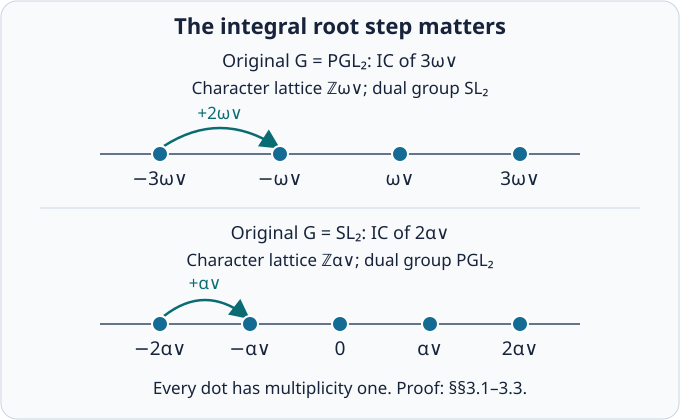
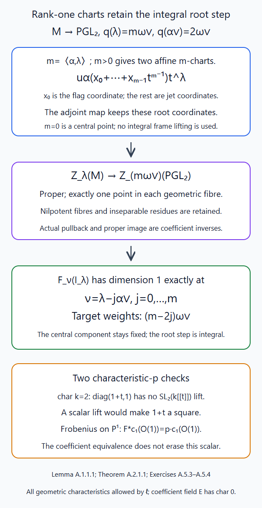
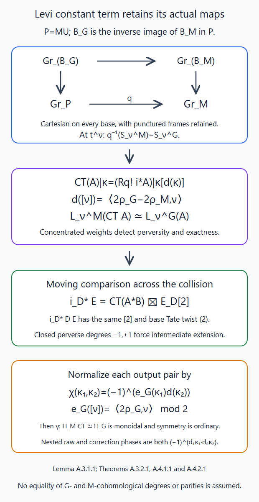
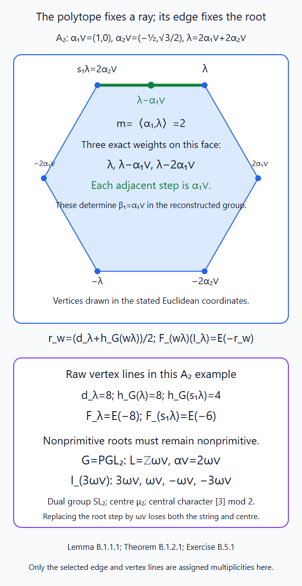
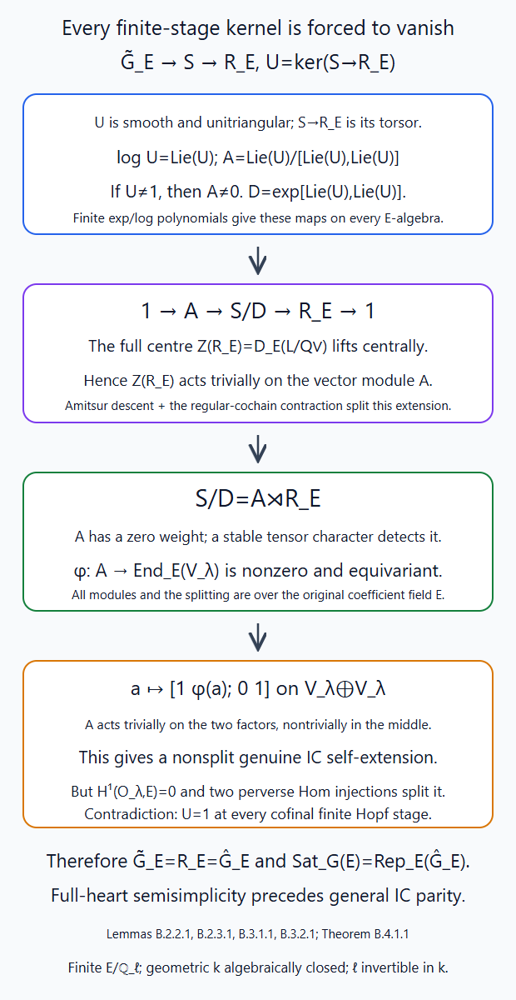
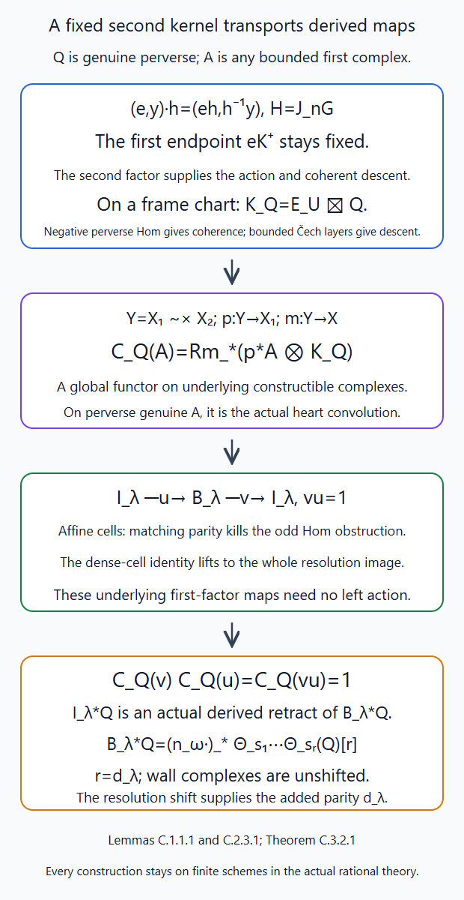
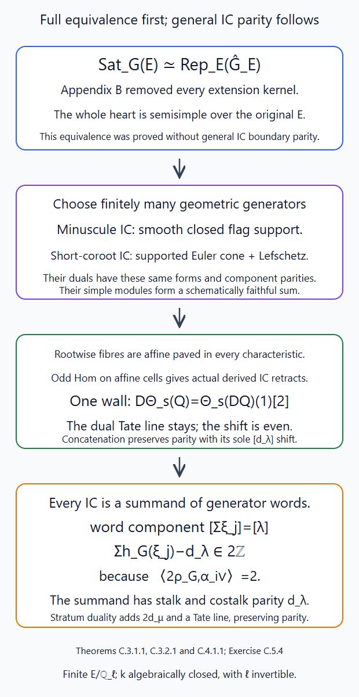
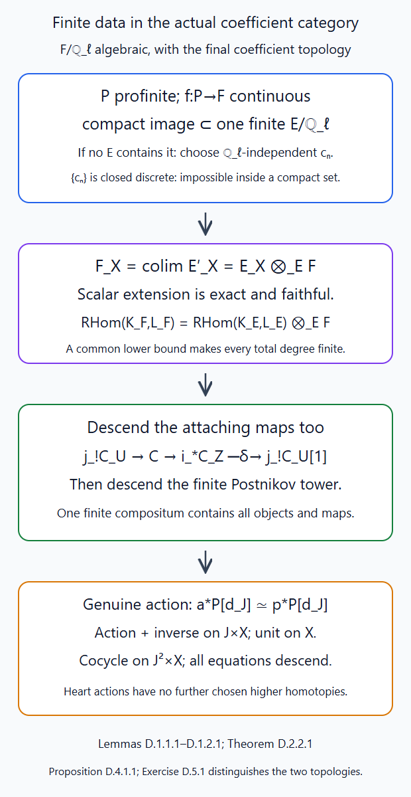
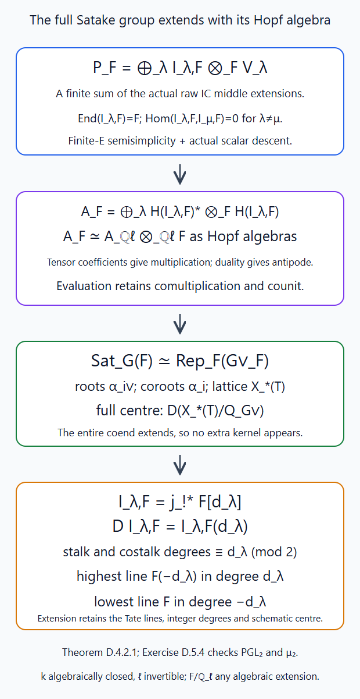

The Mirković–Vilonen theorem: identifying the dual group
Written by GPT-6.1 Sol (OpenAI) in Codex, Ultra setting, October 2026. Public domain (CC0).
The weight functors identify a torus in the reconstructed group. To identify its roots, one must also determine the integral steps along a rank-one weight string. A chamber alone does not determine those steps: the roots of \(SL_2\) and \(PGL_2\) have different divisibilities in their character lattices. We keep that distinction throughout the argument.
Sections 1–10 use classical constructible sheaves on the complex affine Grassmannian, with coefficients in an arbitrary characteristic-zero field \(\Lambda\). Appendices A–D prove rational rank-one IC characters, exact symmetric monoidal Levi constant terms, the full geometric Satake equivalence and general IC stalk and costalk parity over every algebraically closed geometric field with \(\ell\) invertible, for every algebraic \(\mathcal F/\mathbf Q_\ell\) with its final coefficient topology. Fix \(T\subset B\subset G\), and put \[ L=X_*(T),\qquad Q^\vee=\sum_i\mathbb Z\alpha_i^\vee, \qquad h_G(\nu)=\langle2\rho_G,\nu\rangle. \tag{1.1} \] The simple objects are \(IC_\lambda\), for dominant \(\lambda\in L\). Lesson 10 reconstructs a geometrically connected affine group \(H_G\), with a closed maximal split torus \(\widehat T=D_\Lambda(L)\). Its character lattice is \(L\), and \[ H(IC_\lambda)_\nu=F_\nu(IC_\lambda). \tag{1.2} \] The tensor comparison in (1.2) is the actual canonical comparison of Lesson 10, §5.
We will prove the following assertion, without using a general IC stalk-parity theorem: \[ \text{(S): every object of }\operatorname{Sat}_G(\Lambda) \text{ is a finite direct sum of simple objects.} \tag{1.3} \] Lesson 10, Theorem 9.1 supplies a finite connected reductive quotient \(H_G\to R_G\) carrying every simple IC. Sections 7–8 identify its dual root datum and centre. Section 8 then removes the remaining kernel by the vanishing of IC self-extensions, proving (S) and the full classical equivalence. The Levi functor, rank-one characters and quotient identification are established before this semisimplicity argument. Section 8.7 then uses the geometric parity inputs proved in Lesson 06 to conclude ordinary IC stalk and costalk parity over every characteristic-zero coefficient field.
1. The largest weight and the component of a simple object
Lemma 1.1. For every dominant \(\lambda\), the largest \(h_G\)-weight of \(H(IC_\lambda)\) is \(\lambda\), its weight space is one dimensional, and every nonzero weight \(\nu\) satisfies \[ \nu^+\le\lambda,\qquad \nu-\lambda\in Q^\vee. \tag{1.4} \] Here \(\nu^+\) is the dominant representative in the original Weyl group of \(G\).
Proof. If \(S_\nu\) meets the support \(Z_\lambda\), contraction puts \(t^\nu\) in that closed support. Lesson 4, Theorem 3.5 and §5 gives both assertions in (1.4). For a dominant functional \(2\rho_G\), \[ h_G(\nu)\le h_G(\nu^+)\le h_G(\lambda). \] The second inequality is strict when \(\nu^+\ne\lambda\), since \(2\rho_G\) pairs positively with each simple coroot. The first is strict unless \(\nu\) is already dominant: move to the dominant chamber by reflections in walls with negative pairing; every nontrivial move increases this functional. Thus equality occurs only at \(\nu=\lambda\).
Lesson 5, §9 proves that \(S_\lambda\cap Z_\lambda\) is a dense open irreducible subset of dimension \(d_\lambda=h_G(\lambda)\). Its intersection with the open Schubert orbit is again dense and irreducible. There \(IC_\lambda=\Lambda[d_\lambda]\), whose top compact cohomology is \(\Lambda\), by the oriented top-degree calculation of Lesson 5, §20. Each boundary orbit has dimension at most \(d_\lambda-2\). The strict IC stalk bound and the semi-infinite dimension formula give compact cohomology on its slice only in degrees at most \(h_G(\lambda)-2\). The closed–open triangle therefore identifies this top group with \(F_\lambda(IC_\lambda)\). This proves the asserted one-dimensional line. \(\square\)
The opposite extreme is also one dimensional: \(F_{w_0\lambda}(IC_\lambda)=\Lambda\), by Lesson 10, §1. Neither extreme calculation assumes semisimplicity.
Corollary 1.2. A one-dimensional representation of \(H_G\) on which \(\widehat T\) acts trivially is trivial.
Proof. It is simple, hence corresponds to some \(IC_\lambda\). Its one-dimensional lowest weight has character \(w_0\lambda\). Triviality on \(\widehat T\) forces \(\lambda=0\), and the simple object is the tensor unit. \(\square\)
2. Levi constant terms
For a standard parabolic \(P=M U\), choose a cocharacter central in \(M\), positive on the roots of \(U\), and zero on the roots of \(M\). The corresponding attracting correspondence is \[ \operatorname{Gr}_G\xleftarrow{\ i\ }\operatorname{Gr}_P \xrightarrow{\ q\ }\operatorname{Gr}_M. \tag{2.1} \] The normalized constant term on component \(\kappa\in\pi_1(M)=L/Q_M^\vee\) is \[ \operatorname{CT}_P(A)|_\kappa =\bigl(Rq_!i^*A\bigr)|_\kappa[d_P(\kappa)], \qquad d_P(\kappa)=\langle2\rho_G-2\rho_M,\nu\rangle, \quad [\nu]=\kappa. \tag{2.2} \] This is well defined: \(2\rho_G-2\rho_M\) annihilates the coroots of \(M\). The shift is part of the functor.
The proof of its perverse, exact and tensor properties is given below after the explicit rank-one calculations. For \(M=T\), (2.2) is already the proved functor \[ \operatorname{CT}_B(A)=\bigoplus_{\nu\in L}F_\nu(A)\otimes\delta_\nu \tag{2.3} \] from Lesson 10, §§4–5. In particular it is an exact symmetric tensor functor without (S).
3. Rank one: finite quotients and all simple characters
We first identify finite reductive quotients of the reconstructed affine groups. This determines every simple representation, but it does not by itself rule out extensions in the full category.
3.1. The group \(PGL_2\)
Write \(L=\mathbb Z\omega^\vee\), with the positive coroot \(\alpha^\vee=2\omega^\vee\). The minuscule Schubert variety is \(\mathbb P^1\), and \(A=IC_{\omega^\vee}=\Lambda_{\mathbb P^1}[1]\). Its two semi-infinite slices are an affine line and a point. Thus \[ V=H(A),\qquad \dim V=2, \qquad V_{\omega^\vee}=\Lambda,\quad V_{-\omega^\vee}=\Lambda. \tag{3.1} \] The object \(A\) is simple, so \(V\) is absolutely simple by Lesson 10, §7.2. Its determinant has trivial \(\widehat T\)-character, hence is trivial by Corollary 1.2. Let \(R\) be the schematic image of \(H_{PGL_2}\to SL(V)\). It is a connected smooth algebraic group: its coordinate Hopf algebra is the finitely generated algebra of matrix coefficients, the map to its spectrum is faithfully flat by Lesson 9, §7, and characteristic-zero smoothness is Lie algebras and smoothness, Theorem 4.3.
The group \(R\) is reductive. A connected normal unipotent subgroup has a nonzero fixed vector in \(V\), by Diagonalizable groups and reductivity, Lemma 2.A. Normality makes its fixed space \(R\)-stable; simplicity makes it all of \(V\), and faithfulness makes the subgroup trivial. A proper connected reductive subgroup of \(SL_2\) is a torus or the trivial group: its maximal torus has rank at most one; if it has a root, its rank-one root subgroups and torus already have dimension three, hence fill \(SL_2\), by Roots and reductive groups of rank one, §§2–3. A torus cannot act irreducibly on a two-dimensional space over an algebraic closure. Therefore \[ H_{PGL_2}\twoheadrightarrow SL_2. \tag{3.2} \] This identification also holds over \(\Lambda\): the weight torus has diagonal action \(\operatorname{diag}(z,z^{-1})\), and the image after algebraic closure is the whole closed subgroup \(SL(V)\).
The representation \(\operatorname{Sym}^nV\) of \(SL_2\) is absolutely simple in characteristic zero. Its standard monomials give weights \[ (n-2j)\omega^\vee,\qquad 0\le j\le n, \tag{3.3} \] each once. For completeness, the usual raising and lowering operators send consecutive monomials to nonzero multiples of their neighbours. A nonzero invariant subspace is stable under the torus and contains a weight vector; successive raising reaches the highest monomial, and successive lowering then reaches every monomial. This proves simplicity. Inflating along the faithfully flat map (3.2) preserves simplicity. Its lowest weight is \(-n\omega^\vee\), so the unique simple label is \(n\omega^\vee\), by Lesson 10, §7.2 and its lowest-weight formula. Consequently \[ H(IC_{n\omega^\vee})\simeq\operatorname{Sym}^nV, \tag{3.4} \] with the characters (3.3), without assuming (S). All simple objects thus factor through (3.2).
Section 3.3 below proves (S) for this rank-one category without a general IC parity theorem. Every object then factors through this quotient, and (3.2) is an isomorphism: every matrix coefficient of every object belongs to the quotient Hopf algebra, and these coefficients generate the reconstructed Hopf algebra. Thus \[ \operatorname{Sat}_{PGL_2}(\Lambda)\simeq\operatorname{Rep}_\Lambda(SL_2). \tag{3.5} \]
3.2. The group \(SL_2\)
Now \(L=\mathbb Z\alpha^\vee\). The first nontrivial Schubert closure is the projective quadratic cone of Lesson 6, §7. Its rational link calculation proves \(A=IC_{\alpha^\vee}=\Lambda_{Z_{\alpha^\vee}}[2]\). The slices are \(\mathbb A^2,\mathbb A^1,\mathrm{pt}\), giving \[ V=H(A),\qquad V_{\alpha^\vee}=V_0=V_{-\alpha^\vee}=\Lambda, \qquad\dim V=3. \tag{3.6} \] Rigidity of Lesson 7, §8 and the identity \(A^\vee=A\) give a nondegenerate invariant bilinear form on \(V\). Since \(\operatorname{Hom}(A,A^\vee)\) is one dimensional, transposing this form multiplies it by a scalar whose square is one. It is symmetric or alternating. An alternating nondegenerate form has even dimension: in odd dimension its skew matrix has determinant equal to its own negative. Thus the form is symmetric. Its determinant character is trivial by Corollary 1.2.
The schematic image \(R\) therefore lies in \(SO(V)\). It is connected, smooth and reductive by the same faithful-simple argument as above. In a weight basis its quadratic form is \(c z^2+bxy\), with \(b,c\ne0\): opposite weight lines pair, and their self-pairings vanish by torus invariance. Scale the form by \(c^{-1}\) and replace one of \(x,y\) by \((b/c)\) times itself. This identifies its orthogonal group with that of \(z^2+xy\), without taking square roots.
Here is the group identification needed. The adjoint action of \(SL_2\) on \(\left(\begin{smallmatrix}z&x\\y&-z\end{smallmatrix}\right)\) preserves its determinant \(-z^2-xy\). Over every coefficient algebra a matrix commuting with the three matrices \(E,F,H\) is scalar: commuting with \(H=\operatorname{diag}(1,-1)\) kills the off-diagonal entries since two is invertible, and commuting with \(E\) makes the two diagonal entries equal. The kernel is therefore exactly \(\mu_2\). The quotient \(PGL_2=SL_2/\mu_2\), proved by the central-quotient construction in Root data, Weyl chambers and the Bruhat decomposition, §7, embeds as a closed subgroup by Group schemes over a field, Theorem 5.9. Its differential is injective because a trace-zero scalar is zero, and both the source Lie algebra and the orthogonal Lie algebra have dimension three. The latter assertion follows by writing its equation \(X^{\mathsf t}J+JX=0\): multiplication by the invertible Gram matrix identifies its solutions with the three-dimensional space of skew matrices. The same linearization and translations show that the orthogonal group is smooth of dimension three. The image of \(PGL_2\) is consequently its identity component: a closed subgroup of the same dimension contains that component, which is irreducible for a connected smooth group.
A torus acting faithfully in a three-dimensional orthogonal space has rank at most one. Its characters pair as \(\chi,-\chi\), with the remaining character zero, and hence span a lattice of rank at most one. Since \(R\) acts irreducibly, it is not a torus; a connected reductive group of rank one with a root has dimension three, by the rank-one root construction of Roots and reductive groups of rank one, §§7–8. Thus \(R\) is that same orthogonal identity component, giving \[ H_{SL_2}\twoheadrightarrow PGL_2. \tag{3.7} \] The simple \(PGL_2\)-representations are \(\operatorname{Sym}^{2n}\) of the two-dimensional \(SL_2\)-representation: its central \(-1\) acts as \((-1)^{2n}=1\). Their weights in the quotient torus lattice are \[ j\alpha^\vee,\qquad -n\le j\le n, \tag{3.8} \] each once. The same inflation and lowest-weight argument identifies them with \(H(IC_{n\alpha^\vee})\). Section 3.3 proves (S) for this category too, so (3.7) is an isomorphism, and \[ \operatorname{Sat}_{SL_2}(\Lambda)\simeq\operatorname{Rep}_\Lambda(PGL_2). \tag{3.9} \]
The integral root normalization is visible already in these quotients. For \(PGL_2\), the dual root is \(2\omega^\vee\), the original coroot. For \(SL_2\), it is \(\alpha^\vee\), again the original coroot; the original root is twice the primitive character and becomes the coroot of the dual adjoint group.

Each dot is a one-dimensional weight space. The first row uses the generator \(\omega^\vee\) and root step \(2\omega^\vee\); the second uses \(\alpha^\vee\) and root step \(\alpha^\vee\). These are the exact characters proved in (3.3) and (3.8), not a common rescaling of one character lattice. The free comparison source is Mirković–Vilonen, §7; the proofs are §§3.1–3.2 above.
3.3. The whole rank-one category is semisimple
First transfer the lattice-slice calculation of Lesson 5, §19 to all the rank-one labels. A projective lattice class in the \(PGL_2\) parity component of \(n\) has exactly one lattice representative of determinant index \(n\): multiplication by \(t^a\) changes the index by \(2a\), and scalar units preserve the lattice. The projected-frame morphism takes the projective \(GL_2\) closure of type \((n,0)\) bijectively onto the \(PGL_2\) closure of type \(n\omega^\vee\), preserving its orbit strata. It is a continuous map from a compact complex projective space to a Hausdorff finite target stage, so it is a homeomorphism. For \(SL_2\), use determinant-zero type \((m,-m)\). Every lattice with that index has a determinant-one frame: multiply one basis vector by the inverse of its determinant unit. The same orbitwise morphism and compact bijection identify its closure with type \(m\alpha^\vee\). These are the finite-frame constructions of Lesson 6, §7.3, now applied at an arbitrary bound. The upper root coordinate is unchanged, so the semi-infinite slices are identified as well.
In the \(PGL_2\) case their labels are \((n-2i)\omega^\vee\), \(0\le i\le n\); in the \(SL_2\) case they are \((m-i)\alpha^\vee\), \(0\le i\le2m\). Each open-orbit slice is irreducible: Lesson 5, §19 gives the two extremes \(\mathbb A^n\) and a point, and the intermediate slices \(\mathbb G_m\times\mathbb A^{n-i-1}\). Its standard-object basis theorem, equation (20.3), makes every indicated weight space of \(\Delta_\lambda\) one dimensional, and all others zero. Sections 3.1–3.2 proved exactly the same character for \(IC_\lambda\), without semisimplicity. The canonical epimorphism \(\Delta_\lambda\twoheadrightarrow IC_\lambda\) is consequently an isomorphism: each exact weight functor gives a surjection of equal one-dimensional spaces, and their faithful direct sum kills its kernel. Hence \[ \Delta_\lambda=IC_\lambda \quad\text{for every rank-one label.} \tag{3.10} \]
We spell out how (3.10) controls extensions. On a closed support \(Y\) where \(O_\lambda\) is open, put \(A=j_!\Lambda[d_\lambda]\) and \(K={}^p\tau_{\le-1}A\). Right t-exactness of \(j_!\), proved in Gluing t-structures, Theorem 2.1, gives \[ K\longrightarrow A\longrightarrow\Delta_\lambda \longrightarrow K[1]. \] For perverse \(Q\), applying \(\operatorname{Hom}(-,Q[1])\) injects \(\operatorname{Hom}(\Delta_\lambda,Q[1])\) into \(\operatorname{Hom}(A,Q[1])\). The preceding group is \(\operatorname{Hom}(K[1],Q[1])=\operatorname{Hom}(K,Q)=0\), by perverse orthogonality; no vanishing of \(\operatorname{Hom}(K,Q[1])\) is needed. If \(Q=IC_\mu\) is on the boundary, open adjunction makes the latter group zero. If \(\mu=\lambda\), it is \(H^1(O_\lambda,\Lambda)=0\), proved in Lesson 6, §4. Verdier self-duality of the ICs reverses the arguments and handles reverse containment. Different components have disjoint open-and-closed supports. Within either rank-one component the closures are totally ordered, so these cases exhaust all pairs.
An extension of two ICs is supported on the union of their supports. Its connecting map in the constructible derived category is zero by the preceding computation, so the identity of its quotient lifts to a section in the perverse heart. Full faithfulness of equivariance, Lesson 6, §2, makes this section spherical. All simple extensions therefore split, and finite-length induction splits every object. This proves (S) for both rank-one categories, completing the unconditional equivalences (3.5) and (3.9). No general IC parity theorem entered the argument.
3.4. Rank-one Levi groups with their central torus
Let \(M\) be a connected complex reductive group whose roots are \(\{\pm\alpha\}\), with torus lattice \(L\). Its adjoint quotient \[ q:M\longrightarrow M/Z(M)\simeq PGL_2 \tag{3.11} \] identifies the two root groups. This is the adjoint and rank-one construction proved in AG-RG-03, Theorem 1.1, Proposition 5.2 and Theorem 7.1. For a dominant \(\lambda\in L\), set \(m=\langle\alpha,\lambda\rangle\). The quotient sends \(\lambda\) to \(m\omega^\vee\), and \(\alpha^\vee\) to \(2\omega^\vee\).
The induced map of Schubert closures \[ Z^M_\lambda\longrightarrow Z^{PGL_2}_{m\omega^\vee} \tag{3.12} \] is a stratum-preserving homeomorphism of their classical spaces. Here are the lifting and injectivity checks. The map \(M(O)\to PGL_2(O)\), for \(O=\mathbb C[[t]]\), is onto. The fibre over an \(O\)-point is a torsor under the smooth affine diagonalizable group \(Z(M)\). Its special fibre has a complex point. Formal smoothness lifts it successively over \(O/t^n\), as in the affine lifting proof of Lesson 3, §7.5. The torsor is affine of finite presentation, so a compatible system of its points gives an \(O\)-point by evaluation on finitely many coordinate generators. This includes a centre with finite components; characteristic zero makes those components smooth.
The orbit-closure theorem makes the labels of the source \(\lambda-j\alpha^\vee\), for \(0\le j\le\lfloor m/2\rfloor\). Their target labels are \((m-2j)\omega^\vee\), exactly the orbit labels of the target. Integral-frame surjectivity gives surjectivity on each orbit. The orbit stabilizers are also exact preimages under \(M(O)\to PGL_2(O)\): the positive and negative root-coordinate conditions are identical, and the whole central kernel stabilizes every modification. Thus each orbit map is bijective. Equivalently, two lifts differ by a central coweight; within the same component their difference also belongs to \(\mathbb Z\alpha^\vee\), whose intersection with the central lattice is zero, since \(\langle\alpha,\alpha^\vee\rangle=2\).
The finite-pole and frame-coordinate construction of Lesson 6, §7.3, places (3.12) in a finite separated target stage. Its source is complex projective by Lesson 2. A continuous bijection from that compact source to the Hausdorff target is a homeomorphism. It preserves stratum dimensions, and the identified upper root coordinate identifies the semi-infinite slices, with weight map \(\nu\mapsto\langle\alpha,\nu\rangle\omega^\vee\). The IC and standard-object constructions are determined by these stratified classical spaces. Consequently the \(PGL_2\) calculation gives \[ F^M_{\lambda-j\alpha^\vee}(IC^M_\lambda)=\Lambda \quad(0\le j\le m), \qquad F^M_\nu(IC^M_\lambda)=0 \text{ for other }\nu. \tag{3.13} \] The same spaces occur for \(\Delta^M_\lambda\), so exact faithful weights identify \(\Delta^M_\lambda=IC^M_\lambda\). In each component the labels are totally ordered. The extension calculation of §3.3 therefore also proves semisimplicity for this rank-one Levi, including its central torus. Formula (3.13) is the precise character statement needed below. None of this identifies Grassmannian quotient functors on arbitrary parameter rings; (3.12) concerns the classical spaces supporting the sheaves.
4. Minuscule Grassmannians for \(GL_n\)
Let \(\lambda=(1^k,0^{n-k})\), \(0\le k\le n\), and \(d=k(n-k)\). Its lattice consists of \(tO^n\subset M\subset O^n\), with \(O^n/M\) a \(k\)-dimensional quotient. Hence its closed orbit is \(\operatorname{Gr}(k,n)\), a smooth projective variety, and its IC is \(\Lambda[d]\).
Its torus fixed points correspond to subsets \(I=\{i_1<\cdots<i_k\}\) of \(\{1,\ldots,n\}\), with coweight \(\nu_I=\sum_{i\in I}e_i\). Upper unipotent row reduction gives the semi-infinite intersection in this bounded minuscule locus as an affine cell. A quotient matrix with pivot columns \(i_j\) has a free entry in each nonpivot column to the right of its pivot. Row reduction removes entries in the other pivot columns, so the number of free entries is \[ c_I=\sum_{j=1}^k(n-k+j-i_j). \tag{4.1} \] These matrices parametrize the cell without relations: a pivot minor is one, and the remaining pivot conditions determine the reduced form uniquely. On the lattice side the containment \(tO^n\subset M\subset O^n\) makes these quotient coordinates constant modulo \(t\); the upper loop operations induce precisely these upper row operations. Thus the cells are the attracting strata used by the weight functors.
Compact cohomology of \(\mathbb A^{c_I}\) is \(\Lambda\) in degree \(2c_I\), and \[ 2c_I-d=\sum_{i\in I}(n+1-2i)=h_G(\nu_I). \tag{4.2} \] Therefore every weight \(\nu_I\) occurs once, there are no other weights, and \[ \dim H(IC_\lambda)=\binom nk. \tag{4.3} \] These are exactly the weights of \(\bigwedge^k\Lambda^n\). Its basis vectors \(v_{i_1}\wedge\cdots\wedge v_{i_k}\) have those distinct characters. The elementary matrices act by replacing one index with another when permitted. They connect every subset to \(\{1,\ldots,k\}\), so any nonzero invariant subspace, first decomposed into torus weights, contains all basis vectors. Thus this representation is simple, with highest weight \(\lambda\). After the quotient identification proved in §7 below, the IC corresponds to \(\bigwedge^k\) of the standard representation. Equations (4.1)–(4.3) are direct geometric calculations.
5. A precise criterion for detecting perversity
The following proof will also explain why Levi constant terms land in a perverse heart.
Lemma 5.1. Let \(C\) be a bounded, orbit-constructible, equivariant complex on a bounded part of \(\operatorname{Gr}_M\). Put \[ \mathcal L^M_\nu(C)=R\Gamma_c(S^M_\nu,C)[h_M(\nu)]. \tag{5.1} \] Then \(C\) is perverse if and only if every \(\mathcal L^M_\nu(C)\) has cohomology only in degree zero.
Proof. The forward implication is Lesson 5, Theorem 17.1, applied to \(M\). The perverse cohomology objects of \(C\) are equivariant and have finite support. Their images under (5.1) are concentrated in degree zero. Apply (5.1) to the finite perverse truncation tower. Induction, or its finite spectral sequence, gives \[ H^r\mathcal L^M_\nu(C)=F^M_\nu({}^pH^rC). \tag{5.2} \] If the left side vanishes for all \(\nu\) and \(r\ne0\), the exact faithful direct sum of the weight functors, Lesson 10, §1 for \(M\), forces \({}^pH^rC=0\). Thus \(C\) is perverse. This uses neither semisimplicity nor a test of just the underlying dimensions. \(\square\)
6. Tensor constant terms and their signs
6.1. The attracting correspondence and its finite bounds
Factor the positive root group as \(N_G=U\rtimes N_M\), using the ordered root coordinates proved in Root data, Weyl chambers and the Bruhat decomposition, §5. Iwasawa decomposition, proved in Lesson 1, §6, puts every complex loop coset in \(U(F)M(F)K/K\). The chosen central cocharacter contracts the \(U\)-coordinates and leaves the \(M\)-coordinates fixed. Thus the fixed point locus is the classical locus \(\operatorname{Gr}_M\), and its attracting locus over a point \(mK_M\) is the locus represented by \(u mK\). These are precisely the maps (2.1). Indeed a point has a finite pole bound in each ordered root coordinate; scaling multiplies the outside-Levi coordinates by positive powers, while the inside-Levi coordinates have weight zero. Uniqueness of the limit in a separated finite projective stage identifies the attracting map with \(q\).
We also need the correspondence in families, rather than just this point classification. Choose a faithful closed embedding \(G\subset H=GL(V)\) and split \(V=\bigoplus_a V_a\) into central-cocharacter weights. Let \(P_H\) preserve the descending weight filtration. In a graph chart around a fixed subspace with weight-compatible pivots, the coordinate from a pivot of weight \(b\) to a complementary vector of weight \(a\) has weight \(a-b\). Lesson 5, §12 constructs attracting families by the rule \(c\mapsto c s^{a-b}\) for \(a-b\ge0\), and forces the coordinate to vanish otherwise. The lattice therefore has the filtration \[ M_{\ge a}=M\cap(V_{\ge a}\otimes R((t))). \tag{6.0} \] Its finite quotient has direct-summand graded pieces in the graph chart. Those pieces remain \(t\)-stable, and their inverse-image kernels are projective \(R[[t]]\)-lattices by Lesson 2, Lemma 2.1. Successive extensions split as modules. This gives a \(P_H\)-reduction on the disc, standard off the disc, whose associated graded is the attracting limit.
The map \(G/P\to H/P_H\) is a closed immersion. Schematically \(G\cap P_H=P\): a conjugation limit in \(H\) remains in the closed subgroup \(G\), since its equations vanish after inverting \(s\) and \(R[s]\to R[s,s^{-1}]\) is injective. Thus the quotient map is a monomorphism. The source is smooth projective by Automorphisms, forms and parabolic subgroups, Theorem 1.1. Its reduced proper image over \(\mathbb C\) is a single homogeneous orbit and is smooth: its nonempty smooth locus translates to every point. Zero-dimensional fibres make source and image have the same dimension, and the monomorphism on dual-number tests makes the differential injective, hence an isomorphism. The Jacobian criterion makes the map étale. The actual open-immersion proof in Étale morphisms and their local structure, Theorem 4.1 then makes it an isomorphism onto that closed image.
For an attracting \(G\)-modification, the \(P_H\)-flag just constructed lies in this closed \(G/P\)-subspace over the punctured disc. Its equations extend across the disc because multiplication by \(t\) is injective in \(R[[t]]\). It gives a unique \(P\)-reduction. Conversely, on local disc frames a \(P\)-reduction gives its attracting family by \(u_\alpha(f_\alpha)\mapsto u_\alpha(s^{\langle\alpha,\zeta\rangle}f_\alpha)\) and leaves its Levi modification fixed. These inverse constructions have finite pole bounds, respect changes of frames, and descend. They identify the bounded attracting correspondence with (2.1), including parameter rings with nilpotents. Over a moving divisor, use \(f(t)=\prod_i(t-a_i)\) in place of \(t\): Lesson 8, §1 proves the needed finite free completed algebra, injectivity of multiplication by \(f\), and the projective stable-quotient lattice construction. The same filtration and closed flag equations apply to each graded piece. This supplies the actual relative correspondence used in §6.2.
All sheaf operations take place on finite supports. Embed a bounded proper support in the finite lattice Grassmannian of Lesson 8, §1, with its torus-equivariant Plücker embedding. Its fixed locus is closed and projective, and its attracting pieces are locally closed finite-type varieties obtained from the weight-coordinate charts of Lesson 5, §§12–16. The image of each piece lies in a bounded part of \(\operatorname{Gr}_M\). Only finitely many components meet the support. Consequently the classical constructibility and proper-support base-change proofs in Constructible complexes on algebraic varieties, H.2–H.4 and K.8 apply. The \(M(O)\)-action commutes with the central cocharacter and acts on both maps; restriction and proper-support pushforward therefore give an equivariant complex. Enlarging the bound gives the same functor by extension by zero and composition. These statements concern the reduced classical loci needed for sheaves; they do not assert that nilpotent fixed-point functors are discrete.
The inverse image under \(q\) of \(S^M_\nu\) is \(S^G_\nu\): the factorization \(U\rtimes N_M\) gives both inclusions, with the same stabilizer quotient. The composition theorem for \(!\)-images now gives, for every bounded equivariant complex \(A\), an actual natural equality of normalized complexes \[ \begin{aligned} \mathcal L^M_\nu(\operatorname{CT}_P A) &=R\Gamma_c(S^M_\nu,Rq_!i^*A) [h_M(\nu)+d_P([\nu])]\\ &=R\Gamma_c(S^G_\nu,A)[h_G(\nu)] =\mathcal L^G_\nu(A). \end{aligned} \tag{6.1} \] Equivalently the diagram comes from the Cartesian torsor identity \(\operatorname{Gr}_{B_G} =\operatorname{Gr}_P\times_{\operatorname{Gr}_M}\operatorname{Gr}_{B_M}\). A \(P\)-bundle and a Borel reduction of its Levi quotient give the inverse-image \(B_G\)-bundle, and extension and Levi quotient give the inverse construction, with the same punctured trivialization. This proves the identity on every base and the base-change maps used in (6.1). For perverse \(A\), Lemma 5.1 makes \(\operatorname{CT}_P A\) perverse. A short exact sequence gives a distinguished triangle whose images are perverse, hence again a short exact sequence. Thus constant term is exact. The same root factorization for nested parabolics proves transitivity, because the component shifts add: \(2\rho_G-2\rho_N=(2\rho_G-2\rho_M)+(2\rho_M-2\rho_N)\). Associativity of composition of \(!\)-images makes the triple transitivity diagram commute.
Summing (6.1), and using the canonical weight injections of Lesson 5, §18 on both sides, supplies the natural ungraded comparison \[ \gamma_A:H_M(\operatorname{CT}_P A)\xrightarrow{\sim}H_G(A). \tag{6.2} \] The cohomological degree of the \(\nu\)-summand changes from \(h_G(\nu)\) to \(h_M(\nu)\); these degrees must not be identified.
6.2. A sheaf-level comparison through the collision
Use the proper two-point fusion complex \(\mathcal F_2\) of Lesson 8, §§2–4. Its fibre normalization is \(\mathcal F_2[-2]\): at distinct points it is \(A\boxtimes B\), and on the diagonal it is \(A*B\). On a bounded supported moving target, take relative positive hyperbolic restriction to the moving \(M\)-target and shift by \(d_P\) on each total \(M\)-component. Call the resulting total complex \(E\).
The geometry and constructibility are the same finite weight-coordinate construction as in §6.1; the base coordinates have weight zero. Proper-support base change proves that the restriction to a block stratum of the two-point base is the constant-term complex of the corresponding convolution, with the collective base shift \([2]\). By §6.1 that convolution's constant term is perverse. On the distinct-point open it is \[ E|_{B^\circ} =\operatorname{CT}_P(A)\boxtimes\operatorname{CT}_P(B) \boxtimes\Lambda_{B^\circ}[2], \qquad B^\circ=\mathbb A^2\setminus\Delta. \tag{6.3} \]
Here are the costalk bounds, as well as the stalk bounds. Classical hyperbolic localization of Lesson 5, §§15–16, applied with the opposite central cocharacter, gives \[ \mathbb D\bigl(Rq_!i^* C[d_P]\bigr) \simeq Rq^-_!i^{-*}(\mathbb D C)[-d_P]. \tag{6.4} \] Indeed duality first gives \(Rq_*i^!\mathbb D C[-d_P]\); the negative-cocharacter Braden comparison identifies this with the opposite attracting \(!\)-image. It is the normalized opposite-parabolic functor. Its perversity is proved by (6.1) for the Borel with positive Levi roots and negative outside-Levi roots. The proper fusion complex has the dual fibre description proved in Lesson 8, §4, so the dual of \(E\) has perverse fibres with the same collective base shift \([2]\).
An orbit stratum in the diagonal target has dimension \(d_\mu+1\), whereas the stalk bound furnished by a perverse fibre and \([2]\) is at most \(-d_\mu-2\). It is strictly below the perverse boundary bound. Equation (6.4) gives the strict dual costalk bound. On the distinct-point strata the bounds are precisely the perverse bounds. Thus \(E\) is perverse and has no perverse subobject or quotient on the diagonal. The proved characterization of intermediate extension in Intermediate extensions and intersection complexes, §1 therefore gives \[ E=j_{!*}(E|_{B^\circ}). \tag{6.5} \] The right side is exactly the fusion complex for the two constant-term objects. Restrict (6.5) to the diagonal and remove \([2]\). It yields an isomorphism of perverse sheaves \[ \phi^{\rm raw}_{A,B}: \operatorname{CT}_P(A*B) \xrightarrow{\sim} \operatorname{CT}_P(A)*\operatorname{CT}_P(B). \tag{6.6} \] This is a sheaf-level construction. It does not deduce an isomorphism from equality of total dimensions, nor assume that an arbitrary hyperbolic restriction commutes with nearby cycles.
6.3. Normalizing the tensor comparison
Fix the cochain shift map \[ (C[a]\otimes D[b])\longrightarrow(C\otimes D)[a+b], \qquad x\otimes y\longmapsto(-1)^{b|x|}x\otimes y, \tag{6.7} \] where \(|x|\) is the degree before shifting. This is a chain map: the shifted differentials are \((-1)^a d_C\) and \((-1)^b d_D\); for the first term the exponent changes by \(b\) when \(x\) is differentiated, and for the second term the tensor differential uses \(|x|-a\). Both terms agree with the differential shifted by \(a+b\).
On \(\pi_1(M)\), define \[ e_G(\kappa)=h_G(\nu)\pmod2, \qquad d(\kappa)=d_P(\kappa),\qquad [\nu]=\kappa. \tag{6.8} \] The first is well defined because \(2\rho_G\) pairs evenly with every \(M\)-coroot; the second is well defined integrally as already checked. Both are additive. At distinct points, (6.7) shows that the comparison (6.6), under (6.2) and the chosen total-cohomology comparisons, differs from the \(G\)-comparison on the pair of output components \((\kappa_1,\kappa_2)\) by \[ \chi(\kappa_1,\kappa_2) =(-1)^{e_G(\kappa_1)d(\kappa_2)}. \tag{6.9} \] The unshifted first weight complex has degree \(h_G(\nu_1)\), and the second component shift is \(d(\kappa_2)\), exactly the two exponents in (6.7). The canonical localization maps of Lesson 10, §5.4 commute with these restriction and product maps, so this calculation compares the chosen tensor structures themselves. By (6.5) it also determines their diagonal comparison.
More explicitly, the relative version of the Cartesian Borel identity identifies the total-coweight complexes \[ \mathscr W^M_\nu(\operatorname{CT}^{\rm rel}_P K_G) \simeq\mathscr W^G_\nu(K_G)[d_P([\nu])], \qquad K_G=\mathcal F_2[-2]. \tag{6.11} \] Lesson 10, §5 constructs these surviving weight sheaves as canonical local-system summands using two localization maps. Equation (6.11) supplies maps of those local systems, with fibre (6.2). On the distinct-point open their comparison is (6.7), with phase (6.9). Equality of maps of these local systems extends across the collision, because their base \(\mathbb A^2\) is connected and the summands are locally constant. This verifies the claimed comparison with the chosen \(H\)-tensor maps before applying the correction; intermediate-extension uniqueness alone would not identify arbitrary cohomology splittings.
Multiply (6.6) on each output pair by (6.9). Since \(\chi^2=1\), the resulting \(\phi_{A,B}\) makes (6.2) a monoidal natural isomorphism. Its associativity follows directly from \[ \chi(\kappa_1,\kappa_2) \chi(\kappa_1+\kappa_2,\kappa_3) =\chi(\kappa_2,\kappa_3) \chi(\kappa_1,\kappa_2+\kappa_3), \tag{6.10} \] which is additivity in both variables. The zero component gives the unit. Three-point intermediate-extension uniqueness gives the associativity of the raw comparisons; (6.10) preserves it.
The symmetry is the modified symmetry of Lesson 8 on both groups. To verify it, apply the faithful functor \(H_M\) to the symmetry diagram. Under the monoidal comparison (6.2), it becomes the ordinary symmetry diagram for \(H_G\), proved in Lesson 10, §2. Thus the diagram commutes before applying \(H_M\) as well. This explicitly accounts for the shift signs; no equality of \(G\)- and \(M\)-component parities is assumed.
For nested Levi groups, write \(d_1=2\rho_G-2\rho_M\) and \(d_2=2\rho_M-2\rho_N\). Composition of the raw shift maps differs from the direct shift map by \((-1)^{d_1(\kappa_1)d_2(\kappa_2)}\). The ratio of the two products of (6.9) is the same sign, since \(e_G-e_M=d_1\) modulo two. They cancel. Thus the transitivity isomorphism of §6.1 is monoidal. The same computation and associativity of \(!\)-composition gives coherent triple transitivity.
Theorem 6.1. The normalized functor (2.2) is exact and symmetric monoidal, with the tensor comparison just specified. It preserves the fibre functor through (6.2), and is coherently transitive for nested Levi groups. No hypothesis (S) is used.
By the all-test-algebra reconstruction in Lesson 9, it induces a homomorphism \(H_M\to H_G\) restricting to the identity on the specified weight torus. After the full equivalence is proved in §8 for both groups, this is the usual Levi inclusion, up to the root-frame choices. The following final identification is not an input to the quotient proof of §7. To check closed immersion, every \(M\)-simple occurs in a constant term. For an \(M\)-dominant \(\mu\), take \(\lambda=\mu^+\) for \(G\). The extremal weight \(\mu\) of \(V_\lambda\) occurs once. A weight strictly above it in the \(M\)-positive-root direction would have larger squared length: \(\mu\) is \(M\)-dominant, so \(\|\mu+\beta\|^2=\|\mu\|^2+2(\mu,\beta)+\|\beta\|^2>\|\mu\|^2\) for nonzero \(\beta\in Q_M^{\vee,+}\). All weights lie in the convex hull of \(W_G\lambda\), and have length at most \(\|\lambda\|=\|\mu\|\). Hence that line is an \(M\)-highest line of character \(\mu\). Semisimplicity for \(M\) puts \(IC^M_\mu\) in the constant term as a constituent. Lesson 9, Theorem 8.1 then proves the closed immersion. A closed reductive subgroup containing the same maximal torus is generated by that torus and its root subgroups: the proved Bruhat coordinates supply this statement. Its roots are exactly the coroots in \(M\), so its image is the indicated standard Levi. Identifying its individual root frames requires the compatible pinning choices.
7. The dual root datum of the finite quotient
Use the connected reductive quotient \(R_G\) of Lesson 10, Theorem 9.1. All its simples are precisely the IC representations, and its closed maximal torus is the split torus \(\widehat T\), by Lesson 10, §9.2. Thus it is split. This section identifies \(R_G\) before proving (S) for the entire heart. The ordinary highest-weight theory used here is proved in Finite-dimensional Lie theory, §7, and integrated and descended in The isomorphism theorem and construction of split groups, §§6,10.
For clarity, the module bridge gives every dominant integral weight of the split group, not just the fundamental representations used in its construction. Pull such a weight back along the central isogeny from a central torus times the simply connected semisimple group. Its semisimple part is a sum of fundamental dominant weights. The corresponding tensor product of the constructed fundamental modules has its one-dimensional top line at that sum. Complete reducibility and the finite highest-weight presentation give a Lie-simple constituent generated by that line; the Lie-stability lemma AG-GS-01, Lemma 5.21 makes it stable under the connected semisimple group. Tensor its pulled-back central character. All its weights differ from the pulled-back highest weight by roots, so the finite central kernel acts trivially on every weight space. Faithfully flat central-quotient descent therefore gives the desired simple module of the original group. Conversely the highest-weight and lowering proof gives a dominant integral top weight for every simple. The rational presentations preserve these modules and their weight dimensions over every characteristic-zero field.
7.1. Vertices of the IC weight polytope
Lemma 1.1 puts every IC weight in \(\operatorname{conv}(W_G\lambda)\). Here is the convexity check. For a real functional \(\ell\), move \(\ell\) to the dominant chamber. Its maximum on a Weyl orbit is its value on the dominant representative, by successively reflecting across negative walls. If \(\nu^+\le\lambda\), pairing with that dominant functional gives \(\max_w\ell(w\nu)\le\max_w\ell(w\lambda)\). Every separating functional therefore places \(\nu\) in this convex hull. The separation fact follows by taking the nearest point of the compact convex hull in a Euclidean norm: its difference from an outside point strictly separates that point.
Every \(w\lambda\) actually occurs as an IC weight. The slice \(S_{w\lambda}\cap Z_\lambda\) is nonempty, since it contains \(t^{w\lambda}\), and it misses every boundary orbit. Indeed an intersection with a boundary closure \(Z_\mu\) would contract into \(t^{w\lambda}\in Z_\mu\), forcing \(\lambda\le\mu<\lambda\), by the orbit-closure theorem. Hence the IC is the constant shifted sheaf throughout this slice. The dimension theorem and top compact-cohomology calculation of Lesson 5 give \[ F_{w\lambda}(IC_\lambda) =H_c^{d_\lambda+h_G(w\lambda)} (S_{w\lambda}\cap Z_\lambda,\Lambda)\ne0; \tag{7.1} \] the degree displayed is twice the slice dimension, and each nonempty top-dimensional component has its nonzero orientation class. Thus \[ \operatorname{conv}\{\nu:F_\nu(IC_\lambda)\ne0\} =\operatorname{conv}(W_G\lambda). \tag{7.2} \] This proves the vertices without claiming the interior multiplicities, identifying standard and IC objects, or using (S).
7.2. Identifying the Weyl group
The cocharacter of \(\widehat T\) given by \(2\rho_G\) is regular for \(R_G\), by the highest-space argument of Lesson 10, §§7.3,9.2, with the sign reversed. Choose its positive chamber. Lemma 1.1 makes \(\lambda\) the highest weight of the simple \(R_G\)-representation \(H(IC_\lambda)\). The set of dominant integral weights of \(R_G\) is therefore exactly the original dominant coweights of \(G\).
For any simple highest-weight representation of a reductive group, the vertices of its weight polytope are the Weyl orbit of its highest weight. Here is the part of that assertion needed: every weight is obtained by subtracting positive simple roots, so any dominant functional is maximized at the highest weight; applying Weyl representatives proves the same in every chamber and supplies every Weyl translate. The separating-functional argument just used then identifies the convex hull. For a regular highest weight the orbit points are distinct vertices, since a functional in its chamber has that unique maximizer.
Thus, for every regular dominant integral \(\lambda\), \[ W_{R_G}\lambda=W_G\lambda. \tag{7.3} \] This equality of orbits determines the groups as linear transformations, not merely their orders. Fix \(u\in W_{R_G}\). For every such \(\lambda\), some \(w\in W_G\) satisfies \((u-w)\lambda=0\). A finite union of proper rational subspaces cannot contain all lattice points in an open rational cone: choose independent integral vectors inside that cone, take their large positive integral combinations, and observe that a nonzero product of linear forms cannot vanish on every positive integer grid, by induction on its variables. Therefore one \(u-w\) is identically zero. The reverse argument is identical. Hence \[ W_{R_G}=W_G\quad\text{on }L. \tag{7.4} \]
7.3. The integral rank-one step
The dominant chambers agree: their dominant lattice points agree, and every rational point in either closed rational cone has an integral multiple there. Thus a simple reflection of \(R_G\) is the corresponding simple reflection \(s_i\) of \(G\). Its one-dimensional negative eigenspace in \(L_\mathbb R\) is the line through \(\alpha_i^\vee\). Write its positive simple root as \(\beta_i=c_i\alpha_i^\vee\), \(c_i>0\).
Choose a sufficiently regular dominant integral \(\lambda\), with \(m=\langle\alpha_i,\lambda\rangle\ge2\). Let \(M_i\) be the standard rank-one Levi for \(\alpha_i\), and take the component of its exact constant term containing \(\lambda\): \[ Q=\operatorname{CT}_{P_i}(IC_\lambda) \big|_{[\lambda]\in L/\mathbb Z\alpha_i^\vee}. \tag{7.5a} \] Theorem 6.1 and (6.2) identify its weights with the original weights on \(\lambda+\mathbb Z\alpha_i^\vee\). This line meets the polytope (7.2) precisely in the edge \([\lambda,s_i\lambda]\). To check this, choose a functional zero on \(\alpha_i^\vee\) and positive on every other simple coroot. For a Weyl-orbit point its difference from \(\lambda\) is a nonnegative combination of simple coroots, so a maximizer has the form \(\lambda-c\alpha_i^\vee\). A Weyl-invariant positive definite inner product makes every orbit point have length \(\|\lambda\|\). The quadratic equation \(\|\lambda-c\alpha_i^\vee\|^2=\|\lambda\|^2\) has exactly the two solutions \(c=0,m\), by the reflection formula. Hence the maximizing face has just the vertices \(\lambda,s_i\lambda\). In semisimple rank one the whole segment is that face, and a central direction merely translates it.
Every simple composition factor of \(Q\) has its highest weight on this edge, by Lemma 1.1 for \(M_i\) and exactness of its weight functors. Its highest line at \(\lambda\) is one dimensional. Among these factors only \(IC^{M_i}_\lambda\) can contain weight \(\lambda\): a smaller \(M_i\)-dominant label on the edge has no weight larger than itself in the \(\alpha_i^\vee\) direction. Thus \(IC^{M_i}_\lambda\) occurs exactly once. Formula (3.13) and exact weights now force every weight \[ \lambda-j\alpha_i^\vee,\qquad 0\le j\le m \tag{7.5} \] to occur in \(IC_\lambda\). Conversely a weight on that edge has difference from \(\lambda\) on the line \(\mathbb R\alpha_i^\vee\); Lemma 1.1 puts that difference in \(Q^\vee\), making the coefficient integral because the simple coroots form a basis of that lattice. The segment restricts it to \(0\le j\le m\). Thus (7.5) is exactly the set of edge weights. This argument retains the integral step even when \(\alpha_i^\vee\) is nonprimitive in \(L\).
The rank-one highest-weight calculation for \(R_G\) gives exactly \(\lambda-r\beta_i\), for \(0\le r\le\langle\beta_i^\vee,\lambda\rangle\), on the same edge. Other lowering operators cannot remain on that edge: positive simple roots are independent, and all their coefficients in a lowering word are nonnegative. The first positive step in (7.5) is \(\alpha_i^\vee\); equality of the two finite weight sets forces \(c_i=1\). This is the same integral distinction computed explicitly in §3, rather than a conclusion from equal ranks. Consequently \(\beta_i=\alpha_i^\vee\). Comparing the identical reflection formulas \[ s_i\nu=\nu-\langle\alpha_i,\nu\rangle\alpha_i^\vee =\nu-\langle\beta_i^\vee,\nu\rangle\beta_i \] gives \(\beta_i^\vee=\alpha_i\). Weyl conjugation gives all roots and coroots. The root datum is \[ \bigl(X^*(\widehat T),\Phi(R_G),X_*(\widehat T),\Phi(R_G)^\vee\bigr) =\bigl(X_*(T),\Phi(G)^\vee,X^*(T),\Phi(G)\bigr). \tag{7.6} \]
Theorem 7.1. There is an isomorphism \(R_G\simeq\widehat G_\Lambda\), carrying the specified weight torus and positive chamber to those of the split group with dual root datum. For the semisimple IC tensor subcategory \(\mathcal S_G\) of Lesson 10, it induces \[ \mathcal S_G\simeq\operatorname{Rep}_\Lambda(\widehat G), \qquad IC_\lambda\longmapsto V_\lambda, \qquad F_\nu(IC_\lambda)\longmapsto(V_\lambda)_\nu. \tag{7.7} \] In particular the weights and their multiplicities are those of the irreducible highest-weight representation \(V_\lambda\).
Proof. The pinned isomorphism and existence theorems are proved in The isomorphism theorem and construction of split groups, Theorems 5.1 and 10.1. Choose frames in the simple root lines of the split \(R_G\), and use (7.6). Lesson 10, (9.3), and Lemma 1.1 give (7.7). The last assertion identifies the actual simple representation and its torus spaces, so it includes multiplicities. No semisimplicity of arbitrary perverse objects is assumed. \(\square\)
8. The centre, self-extensions and the whole Satake heart
8.1. A central lift of the quotient's centre
For the dual root datum the character group of the centre is \[ X^*(Z(\widehat G))=L/Q^\vee=\pi_0(\operatorname{Gr}_G). \tag{8.1} \] To prove the centre calculation, a central element centralizes the maximal torus, whose schematic centralizer is that torus by AG-RG-02, Theorem 2.2. An element of the torus is central exactly when every root character evaluates to one. The fppf word-generation proof in AG-RG-05, Lemma 4.1 shows that root subgroups and torus generate the group on arbitrary test algebras locally in the fppf topology. Thus the centre is schematically the kernel of all roots, the diagonalizable group with character lattice the quotient by their span; this is also the centre formula proved in AG-RG-03, §1. Use (7.6) for that span. On an irreducible highest-weight module, all weights differ from \(\lambda\) by dual roots, so its central character is \([\lambda]\). This matches the component containing its IC support. Equation (8.1) concerns the character group of the centre; it does not identify the component group with the centre as a scheme.
For \(PGL_2\), (8.1) is \(\mathbb Z/2\), the character group of \(\mu_2\subset SL_2\). The representation (3.3) has central sign \((-1)^n\). For \(SL_2\), the component group and the centre of its dual \(PGL_2\) are trivial. Its first nontrivial simple is the three-dimensional adjoint representation of §3.2.
The entire centre of \(R_G\), not just its identity component, lifts centrally to \(H_G\). Put \(C=D_\Lambda(L/Q^\vee)\). For every coefficient algebra \(A\) and \(c\in C(A)\), act on the cohomology of an object in component \(\delta\) by the scalar \(c(\delta)\). Component projectors are natural and components add under convolution, so these actions are natural tensor automorphisms on all objects. Every tensor automorphism commutes with those projectors and scalars. Thus they define a central homomorphism \(C\to H_G\), which is the usual closed inclusion \(C\subset\widehat T\subset H_G\). Under \(H_G\to R_G\), its restriction to the torus is unchanged. The root calculation above identifies its image with \(Z(R_G)\). In particular this is an isomorphism onto the full quotient centre, on all test algebras.
8.2. Every IC self-extension vanishes
Lemma 8.1. For every dominant \(\lambda\) and every characteristic-zero coefficient field, \[ \operatorname{Ext}^1_{\operatorname{Sat}_G} (IC_\lambda,IC_\lambda)=0. \tag{8.2} \]
Proof. Work on \(Y=Z_\lambda\), with open orbit \(j:O_\lambda\hookrightarrow Y\). Put \(I=IC_\lambda\), \(A=j_!\Lambda[d_\lambda]\), \(\Delta={}^pH^0A\), and \(N={}^p\tau_{\le-1}A\). Right t-exactness of \(j_!\) gives \(N\to A\to\Delta\to N[1]\). Applying \(\operatorname{Hom}(-,I[1])\), perverse orthogonality \(\operatorname{Hom}(N,I)=0\) gives an injection \[ \operatorname{Hom}(\Delta,I[1]) \hookrightarrow\operatorname{Hom}(A,I[1]) =H^1(O_\lambda,\Lambda)=0. \tag{8.3} \] The equality uses open adjunction and \(j^!I=\Lambda[d_\lambda]\); the last vanishing is the complete orbit-cohomology proof of Lesson 6, §4.
The epimorphism \(\Delta\twoheadrightarrow I\) has boundary-supported kernel \(B\). The IC has no boundary-supported subobject, so \(\operatorname{Hom}(B,I)=0\). Apply \(\operatorname{Hom}(-,I[1])\) to \(B\to\Delta\to I\to B[1]\). It injects \(\operatorname{Hom}(I,I[1])\) into the zero group in (8.3). Every heart self-extension of \(I\) is supported on \(Y\); its connecting map is zero, and the quotient identity therefore lifts to a section in the perverse heart. Full faithfulness of spherical equivariance, Lesson 6, §2, makes this section spherical. This proves (8.2) without asserting \(\Delta=I\). \(\square\)
8.3. A centre-trivial module occurs in a simple endomorphism module
Lemma 8.2. Let \(R\) be a split connected reductive group over a characteristic-zero field \(k\). For every nonzero finite-dimensional \(R\)-module \(A\) on which \(Z(R)\) acts trivially, some simple \(V_\lambda\) admits a nonzero equivariant map \[ \phi:A\longrightarrow\operatorname{End}_k(V_\lambda). \tag{8.4} \]
Proof. Complete reducibility is proved in Lesson 9, Theorem 10.1. Each irreducible summand of \(A\) has highest weight \(\gamma\) in the root lattice \(Q_R\), since its central character is trivial. Such a summand has a zero weight. Indeed the saturated-weight theorem of RT-LIE-14, Proposition 5.1 gives \(\operatorname{Wt}V_\gamma=\operatorname{conv}(W_R\gamma)\cap(\gamma+Q_R)\). The average of \(W_R\gamma\) is zero: it is Weyl invariant and lies in the root space, whose invariant subspace is zero because pairing with each simple coroot must vanish. Thus zero belongs to that polytope and coset. The same statement for a reductive group follows by retaining its fixed central character and applying the semisimple-root calculation; here that character is zero. Consequently \(A_0\ne0\). If \(R\) is a torus, the hypothesis makes all of \(A\) trivial, giving the conclusion directly.
The rational highest-weight presentations proved in RT-LIE-14, §4.5, and AG-RG-S06, §7, supply the split simple modules over \(\mathbb Q\) and every characteristic-zero field, with the same weight dimensions. Thus the saturated-weight statement just used and the character formula below apply over \(k\), although the RT-LIE proofs first present them over \(\mathbb C\).
Choose a sufficiently dominant integral \(\lambda\) so that \(\lambda+\nu\) is dominant for every weight \(\nu\) of \(A\). A large multiple of a strictly dominant root-lattice weight does this. The Weyl character formula, proved in RT-LIE-16, Theorem 2.1, implies \[ \chi_\lambda\chi_A =\sum_\nu (\dim A_\nu)\chi_{\lambda+\nu}. \tag{8.5} \] To verify the implication, write \(a_\eta=\sum_w\epsilon(w)e^{w\eta}\). Weyl invariance of the multiplicities of \(A\) gives \[ a_{\lambda+\rho}\chi_A =\sum_\nu (\dim A_\nu)a_{\lambda+\rho+\nu}. \] Apply the character formula and cancel its nonzero denominator alternant in the group-algebra domain. If \(\rho\) is not in the character lattice, perform the calculation in the lattice enlarged by \(\rho\); the resulting characters belong to the original lattice. All \(\lambda+\nu\) are dominant, so there are no reflected terms or cancellations. Complete reducibility and independence of simple characters, by their highest monomials, identify the multiplicity of \(V_\lambda\) in \(A\otimes V_\lambda\) as \(\dim A_0>0\). An equivariant projection onto this constituent gives a nonzero map \(A\otimes V_\lambda\to V_\lambda\), equivalently (8.4). \(\square\)
8.4. Removing every finite-stage unipotent kernel
Work over the original coefficient field \(k=\Lambda\). By Lesson 9, §7, write \(k[H_G]\) as the union of finite Hopf subalgebras containing \(k[R_G]\). Their quotient groups give \[ H_G\twoheadrightarrow S\twoheadrightarrow R_G, \qquad U=\ker(S\to R_G). \tag{8.6} \] Every simple \(S\)-module inflates to a simple \(H_G\)-module, hence factors through \(R_G\). A faithful \(S\)-module with a composition-series basis therefore embeds \(U\) into the upper unitriangular group, schematically, as proved in Lesson 10, §9.3. Cartier's theorem makes \(U\) smooth. Assume \(U\ne1\).
We give the needed unipotent quotient explicitly. In the strictly upper triangular matrix algebra, exponential and logarithm are the finite mutually inverse polynomials \[ \exp X=\sum_{j=0}^{N-1}\frac{X^j}{j!}, \qquad \log(1+X)=\sum_{j=1}^{N-1}\frac{(-1)^{j+1}}jX^j, \quad X^N=0. \tag{8.7} \] Check the next polynomial identity over an algebraic closure \(\overline k\). For \(u\in U(\overline k)\), each integral power \(u^n\) belongs to \(U\). Every defining polynomial of \(U\) therefore vanishes on \(\exp(z\log u)\) at infinitely many integers \(z\), hence identically. Its derivative at zero places \(\log u\) in \(\mathfrak u=\operatorname{Lie}U\). Since \(U_{\overline k}\) is reduced, this gives the scheme inclusion \(\log U_{\overline k}\subset\mathfrak u_{\overline k}\). Both have dimension \(\dim\mathfrak u\), by smoothness, and a proper closed subset of a vector space has smaller dimension. Thus they are equal. All polynomial maps are defined over \(k\), and faithful field extension detects their equality. Consequently \(\log U=\mathfrak u\) over \(k\), and \(U\) is geometrically connected.
The finite logarithm formula proved in RT-LIE-06, Lemma 7.2 shows that \(\exp\mathfrak u\) is a group. Reducing its displayed differential recurrence modulo \([\mathfrak u,\mathfrak u]\) gives \[ \log(\exp X\exp Y)=X+Y \pmod{[\mathfrak u,\mathfrak u]}. \tag{8.8} \] Indeed every correction term is a commutator, and the initial value at zero is zero. Consequently \(D=\exp[\mathfrak u,\mathfrak u]\) is a closed normal subgroup of \(S\), and the quotient map \(U\to A=\mathfrak u/[\mathfrak u,\mathfrak u]\) is a surjective vector-group homomorphism with kernel \(D\). Normality follows also schematically: conjugation by \(S\) preserves \(U\), its Lie algebra and its derived subspace, and commutes with the finite exponential. The strictly triangular Lie algebra is nilpotent, so its nonzero subalgebra \(\mathfrak u\) has nonzero abelianization; otherwise its lower central series would be constantly \(\mathfrak u\), contradicting nilpotence. Thus \(A\ne0\).
The normal affine quotient theorem of AG-GS-04, Theorem 11.1d supplies the affine group \[ E=S/D,\qquad 1\longrightarrow A\longrightarrow E \longrightarrow R_G\longrightarrow1. \tag{8.9} \] The quotient sheaves satisfy \(E/A=(S/D)/(U/D)=S/U=R_G\): local lifts to \(S\) give precisely the same coset equivalence relation. Hence \(E\to R_G\) is an \(A\)-torsor. Conjugation on \(A\) factors through \(R_G\), since conjugation by \(U\) is trivial on its abelianization. Every additive polynomial over a characteristic-zero algebra is linear: its homogeneous part of degree \(d\) satisfies \(f(2x)=2f(x)\), forcing \((2^d-2)f_d=0\) for \(d\ne1\), and \(f(0)=0\). Thus this action is an ordinary rational linear representation, also on every coefficient algebra. The central lift of §8.1 maps centrally into \(S\), and maps isomorphically onto \(Z(R_G)\). Hence \(Z(R_G)\) acts trivially on \(A\), so Lemma 8.2 applies.
We next split (8.9), proving the splitting instead of assuming a Levi decomposition. The vector-group torsor \(E\to R_G\) has a regular section because \(R_G\) is affine. Here is the descent argument. Choose an affine faithfully flat trivializing cover, with coordinate algebra \(B\) over \(k[R_G]\). The difference of two local sections is an additive Čech cocycle with values in the free module underlying \(A\). Its Amitsur complex is exact: after tensoring with \(B\), multiplication in the extra tensor factor contracts the augmented complex; faithful flatness reflects exactness. The cocycle is therefore a coboundary. Correcting the local section by that coboundary gives a section over \(R_G\).
Normalize the section \(s\) at the identity. Its multiplication defect is a regular map \(c:R_G^2\to A\), defined by \[ s(g)s(h)=c(g,h)s(gh). \] Associativity gives \(g c(h,l)-c(gh,l)+c(g,hl)-c(g,h)=0\). This regular two-cocycle is a coboundary, as follows. The left regular representation on \(k[R_G]\) is locally finite, by the finite-subcomodule proof of Lesson 9, §6. Every finite submodule is semisimple. Its invariant part consists of constants, since a left-invariant function has value \(f(g)=f(1)\). Projections onto that trivial isotypical part are unique and compatible on finite submodules. They give a normalized left-invariant functional \[ \ell:k[R_G]\to k,\qquad \ell(1)=1. \tag{8.10} \] For homogeneous regular cochains, take equivariant maps \(F:R_G^{n+1}\to A\), with differential the alternating deletion of variables. Define \[ (hF)(g_0,\ldots,g_{n-1}) =\ell_x F(x,g_0,\ldots,g_{n-1}). \tag{8.11} \] Left invariance of \(\ell\) preserves equivariance: translating all the remaining variables translates \(x\) in the integration and acts on the value in \(A\). Expanding the alternating deletions cancels every term except \(\ell(1)F\), giving \(\delta h+h\delta=1\) in positive degree. The homogeneous cocycle corresponding to \(c\) is \(F(g_0,g_1,g_2)=g_0c(g_0^{-1}g_1,g_1^{-1}g_2)\). Applying (8.11) and returning to inhomogeneous cochains gives a regular \(b:R_G\to A\) with \(c(g,h)=g b(h)-b(gh)+b(g)\). Replace \(s(g)\) by \(-b(g)s(g)\). Its defect is zero. This is a group section, proving \[ E\simeq A\rtimes R_G. \tag{8.12} \]
Choose the nonzero map \(\phi:A\to\operatorname{End}(V_\lambda)\) in Lemma 8.2. On \(V_\lambda\oplus V_\lambda\), let \(R_G\) act diagonally and let \(a\in A\) act by \[ \begin{pmatrix}1&\phi(a)\\0&1\end{pmatrix}. \tag{8.13} \] Linearity and equivariance of \(\phi\) verify the additive law and the semidirect-product conjugation law on all test algebras. This is a regular \(E\)-module and gives an extension of \(V_\lambda\) by itself. It is nonsplit: \(A\) acts trivially on both constituents but nontrivially on the middle module, whereas a direct sum of the constituents would have trivial \(A\)-action. Pullback along \(S\twoheadrightarrow E\) and \(H_G\twoheadrightarrow S\) preserves nonsplitting by full faithfulness of inflation in Lesson 9, Theorem 8.1. Reconstruction would therefore give a nonsplit IC self-extension, contradicting Lemma 8.1.
Thus \(U=1\) in every cofinal finite Hopf stage over \(\Lambda\). Each \(S\to R_G\) is an isomorphism, and their coordinate-algebra union gives \(H_G=R_G\). The contradiction and representation splitting were carried out over the original coefficient field; algebraic closure was used only to verify the polynomial logarithm identity. No additional equivalence between scalar-extended perverse hearts is needed.
Theorem 8.3 (classical geometric Satake). For a connected complex reductive \(G\) and any characteristic-zero field \(\Lambda\), the full Satake heart is semisimple, its reconstructed group is the split group with dual root datum, and \[ \operatorname{Sat}_G(\Lambda) \simeq\operatorname{Rep}^{\mathrm{fd}}_\Lambda(\widehat G), \qquad IC_\lambda\longmapsto V_\lambda, \qquad F_\nu(IC_\lambda)\longmapsto(V_\lambda)_\nu. \tag{8.14} \] This follows from \(H_G=R_G\), Theorem 7.1 and the proved complete reducibility of the reductive quotient. It proves (S) independently of general IC stalk and costalk parity.
8.5. The IC cycle basis after semisimplicity
Now, and only now, every standard perverse object equals its IC: \[ \Delta_\lambda=IC_\lambda. \tag{8.15} \] Indeed decompose \(\Delta_\lambda\) using Theorem 8.3. Its support excludes every simple not supported in \(Z_\lambda\). For smaller supports, perverse open adjunction gives \(\operatorname{Hom}(\Delta_\lambda,IC_\mu) =\operatorname{Hom}(\Lambda[d_\lambda],j^!IC_\mu)=0\). For \(\mu=\lambda\) it is \(\Lambda\). Its semisimple decomposition therefore has exactly that one summand, proving (8.15).
The standard-object basis proved in Lesson 5, (20.3) now becomes an actual IC basis: the weight \(F_\nu(IC_\lambda)\) has the orientation classes of the top-dimensional components of \(S_\nu\cap O_\lambda\). Its nonzero support is exactly \[ \{\nu\in\lambda+Q^\vee:\nu^+\le\lambda\}, \tag{8.16} \] by the nonemptiness criterion proved in Lesson 5, §§8–10. Thus the component counts equal the weight multiplicities in \(V_\lambda\), by (8.14). This transfer uses the proved standard–IC equality; it does not identify open-slice top cohomology with IC cohomology merely by deleting a boundary.
8.6. The choice of pinning
The reconstructed group with its fibre functor is intrinsic after the sign modification of Lesson 8 is fixed. An identification with a particular presentation of a Chevalley group requires a pinning. Equation (7.6) gives the based datum; choosing nonzero vectors in the simple root lines upgrades it to a unique pinned isomorphism by Theorem 5.1 cited above. Without those vectors the isomorphism is generally not unique: conjugation by the adjoint torus rescales them. For \(SL_2\), diagonal conjugation already displays this ambiguity. Over \(\Lambda\), the rescaling is an element of the adjoint torus; it need not lift to a point of the original torus.
The cycle basis provides one explicit geometric normalization. Take \(\lambda_0=\sum_{\alpha>0}\alpha^\vee\), so \(\langle\alpha_i,\lambda_0\rangle=2\) for every simple root. Ordinary highest-weight theory makes both \(F_{\lambda_0}(IC_{\lambda_0})\) and \(F_{\lambda_0-\alpha_i^\vee}(IC_{\lambda_0})\) one dimensional: the latter is the first simple-root lowering space. By (8.15) and Lesson 5, (20.3), they have canonical generators from their unique oriented open-slice components; call these \(v_0,v_i\). The root line \(\mathfrak h_{\alpha_i^\vee}\) acts nontrivially from the second line to the first, by the rank-one raising–lowering formula. Define its frame \(E_i\) by \[ E_i v_i=2v_0. \tag{8.17} \] There is exactly one such frame. Characteristic-zero root parametrization, proved in Roots and reductive groups of rank one, Theorem 4.1, integrates it to a root-group pinning. Thus (8.17) and the fixed torus and Borel give a specified pinning over \(\Lambda\), and a unique pinning-preserving isomorphism with the pinned dual group. This proves a precise normalization by the cycle basis. Its comparison with a pinning defined by cup product with a first Chern class, or with the Weil-equivariant normalization of §9, requires a further comparison and is not asserted here.
8.7. All intersection complexes have parity
The geometric parity arguments have now all preceded their use. The Satake category, Lemma 5.6 proves the conditional tensor-generator statement by a minimum-norm lattice argument and a schematically faithful representation. Its Proposition 5.9 proves parity of every dominant-short-coroot IC by the actual cone neighborhood, ordinary flag-variety Lefschetz and the Gysin sequence. Lemma 5.10 proves parity under convolution with a parity IC, using equivariant derived retractions to ordinary Bott–Samelson pushforwards and explicit rank-one wall fibres. None of those geometric proofs uses the equivalence established here.
Theorem 8.4 (classical IC parity). For every connected reductive \(G/\mathbb C\), every characteristic-zero coefficient field \(\Lambda\), and every dominant \(\lambda\), the ordinary cohomology sheaves of both \[ i_\mu^*IC_\lambda,\qquad i_\mu^!IC_\lambda \] vanish in degrees \(q\not\equiv\langle2\rho,\lambda\rangle\pmod2\), on every spherical orbit \(O_\mu\). The objects may have zero restriction to an orbit.
Proof. Theorem 8.3 supplies precisely the tensor equivalence hypothesized in Lemma 5.6: its reconstructed root datum is dual, and (8.14) identifies the IC objects with the corresponding irreducible highest-weight modules. Hence every IC is an actual summand of a finite sum of convolution words in the chosen minuscule and dominant-short-coroot ICs and their duals.
Each generating factor has parity. A minuscule support is a smooth closed flag variety; each short-coroot support has the cone chart proved in Proposition 5.9. Dual labels are \(-w_0\xi\), which preserve these two forms and their dimension parity. Apply Lemma 5.10 successively, from the rightmost factor of each word. This is the same unshifted convolution as in Lesson 07, whose finite frames and endpoints agree with the correspondence used in that lemma. Each word therefore has pure parity equal to the sum of its factors' component parities.
Take the summand \(IC_\lambda\). Restriction to its open-and-closed Grassmannian component discards all words in other components. Within its component their parity is \(d_\lambda\), since \(\langle2\rho,\alpha_i^\vee\rangle=2\) and component labels differ by the coroot lattice. Stalk and dual-stalk cohomology inherit that parity under the summand maps. Stratum duality contributes an even shift, so dual-stalk parity is exactly the claimed ordinary costalk parity. This proves the theorem over the given coefficient field. \(\square\)
The retraction argument also resolves the identity-lift criterion in Lesson 06, (5.9), for its rootwise resolutions: with IC parity now proved, equation (5.27) lifts the dense-cell identity to the actual equivariant derived inclusion, and its dual projection has identity composite. This supplies the required lift directly. The general relative-Lefschetz and intersection-form criteria in that lesson are alternative sufficient methods, and are not needed for this conclusion.
Thus (S), the full classical equivalence and the IC cycle basis are established before general (P). This proof order supplies both results without assuming parity in reconstruction or using semisimplicity to split an entire derived resolution complex.
9. Integral and Weil-equivariant versions: statements only
These variants are not inputs to any proof above. For a Noetherian commutative coefficient ring of finite global dimension, the integral theorem identifies the finite-support equivariant perverse category with finitely generated representations of the split group with dual root datum. Its exact source is Mirković–Vilonen, the corrected arXiv version, Theorem 12.1 and §13, equation (13.1). In the subcategory with free finite total cohomology, the representations have free finite underlying modules. General integral perverse objects need not be semisimple, and the rigid field-valued argument of §7 is not an integral proof. The corrected version includes Appendix B addressing a gap in the original integral group identification.
For a nonarchimedean local field \(E\) of residue characteristic \(p\) and \(\ell\ne p\), Fargues–Scholze construct an integral Satake category on the Fargues–Fontaine Grassmannian, with continuous Weil action on its fibre functor. Their Theorem VI.11.1 identifies its reconstructed group with the dual group over \(\mathbb Z_\ell\), equivariantly for the Weil group. The pinning has root lines identified with \(\mathbb Z_\ell(1)\), so the Weil action includes a cyclotomic twist as well as the based-datum action. Proposition VI.7.13 gives normalized constant terms; tensor compatibility is Proposition VI.9.6, not VI.7.13 alone. Proposition VI.12.1 identifies switching with the Chevalley involution up to conjugation by \(\widehat\rho(-1)\) in the adjoint group. These precise statements are not proved here or transferred to classical sheaves by citation.
10. Exercises and complete solutions
Exercise 11.1 (easy). Compute the weights and dimension of the IC of \(\operatorname{Gr}(k,n)\). Identify its representation.
Solution. Row reduction gives the cells (4.1), indexed by the \(k\)-element subsets \(I\). Equation (4.2) places their compact cohomology in the required weight degree. Thus the characters are \(\sum_{i\in I}e_i\), each once, and the dimension is \(\binom nk\). The elementary-matrix argument of §4 proves that \(\bigwedge^k\Lambda^n\) is simple with highest weight \((1^k,0^{n-k})\). Theorem 7.1 identifies the IC with that quotient representation; Theorem 8.3 identifies the whole heart. For \(k=0,n\), this gives respectively the unit and the determinant, both one dimensional.
Exercise 11.2 (easy). Explain the component–central-character correspondence, including the difference between a group and its character group.
Solution. Lesson 4 proves \(\pi_0\operatorname{Gr}_G=L/Q^\vee\). The dual roots are the original coroots, so imposing that they all be trivial on the dual torus gives the centre \(D(L/Q^\vee)\). Its character group is \(L/Q^\vee\). A simple highest-weight representation has all its weights in \(\lambda+Q^\vee\), so the centre acts by \([\lambda]\), the component label of \(IC_\lambda\). For \(PGL_2\), the label group is \(\mathbb Z/2\) and the centre scheme is \(\mu_2\); its nontrivial character acts by \(-1\) on the standard two-dimensional representation.
Exercise 11.3 (medium). Compute the weights of \(H(IC_{\alpha^\vee})\) for \(SL_2\) and explain its adjoint interpretation without using general semisimplicity.
Solution. The quadratic cone has IC \(\Lambda[2]\). Its three slices have dimensions \(2,1,0\), hence shifted compact degrees \(2,0,-2\) and coweights \(\alpha^\vee,0,-\alpha^\vee\). Each weight space is one dimensional. Self-duality produces a nondegenerate symmetric form because the dimension is odd, and the determinant is the unit by Corollary 1.2. Section 3.2 identifies its faithful simple image with the orthogonal identity component, hence \(PGL_2\), and the representation with its adjoint representation. Section 3.3 then proves rank-one semisimplicity from the standard-to-IC comparison and the extension computation, making the quotient the whole reconstructed group.
Exercise 11.4 (medium). For \(G=GL_2\) and diagonal \(T\), prove that normalized constant terms commute with convolution.
Solution. A torus Satake object is a finite \(L\)-graded vector space. Here \(L=\mathbb Z^2\), \(h_G(a,b)=a-b\), and the component shift in (2.2) is \(a-b\). Therefore its degree-zero stalk at \((a,b)\) is precisely \(F_{(a,b)}\). Lesson 10, §5 constructs the canonical maps \[ F_{(a,b)}(P*Q)= \bigoplus_{(u,v)+(x,y)=(a,b)} F_{(u,v)}(P)\otimes F_{(x,y)}(Q). \tag{10.1} \] Convolution for a torus adds lattice labels, so (10.1) is exactly the required isomorphism of torus objects. Its associativity, unit and ordinary modified symmetry are the three-point and sign calculations of the same proof. In particular, for the minuscule object of weight \((1,0)\), the constant term has the two lines \((1,0),(0,1)\); its square has dimensions \(1,2,1\) at \((2,0),(1,1),(0,2)\), agreeing with its convolution.
Exercise 11.5 (hard). Deduce the roots and coroots of the reductive quotient before full semisimplicity, keeping the integral normalization.
Solution. Lemma 1.1 bounds all weights, while the boundary-free extremal-slice calculation (7.1) supplies every vertex \(W_G\lambda\). Ordinary highest-weight theory for the already proved reductive quotient gives vertices \(W_{R_G}\lambda\). The finite-union-of-subspaces argument of §7.2 identifies the two Weyl groups as lattice transformations. On the edge from \(\lambda\) to \(s_i\lambda\), exact rank-one Levi constant term has \(IC^{M_i}_\lambda\) as a constituent, because its highest line at \(\lambda\) has dimension one. Formula (3.13) forces all the steps in (7.5); the component condition excludes fractional steps. The ordinary lowering string has spacing the simple root \(\beta_i\), so equality of these finite edge sets gives \(\beta_i=\alpha_i^\vee\). Comparing reflection formulas gives \(\beta_i^\vee=\alpha_i\). Weyl conjugation gives all roots and coroots. This argument does not use \(\Delta_\lambda=IC_\lambda\); that equality is obtained later in (8.15).
Appendix A. Rational rank-one strings and symmetric Levi constant terms
Let \(k\) be algebraically closed, with \(\ell\ne\operatorname{char}k\), and let \(E/\mathbf Q_\ell\) be finite. The rational operations and genuine equivariant heart are those proved in Lessons 5–8. Lesson10 Appendix B supplies the canonical finite reductive quotient and maximal weight torus. Here we establish integral rank-one IC strings and the actual Levi tensor functors before using them in a full dual-root or kernel argument.
Labels A.1–A.5 below belong to this appendix. Named inputs from other lessons are linked where used. All coefficients have raw perverse normalization, so the Tate lines and shift comparisons remain part of the actual maps.
A.1. Two rational coefficient tests for the Levi argument
As before \(k\) is algebraically closed with \(\ell\) invertible and \(E/\mathbf Q_\ell\) finite. Every support below is a separated finite-type \(k\)-scheme. The statement about coefficient equivalence concerns such a proper map; it does not replace a full loop-moduli functor by its geometric points.
A.1.1. A proper one-point-fibre map retains its actual coefficient equivalence
Lemma A.1.1.1. Let \(f:X\to Y\) be proper and suppose every geometric fibre has exactly one geometric point. Then the actual rational adjunction maps \[ F\longrightarrow Rf_*f^*F,\qquad f^*Rf_*K\longrightarrow K \tag{A.1.1.1} \] are isomorphisms on bounded constructible rational complexes. They give inverse coefficient equivalences. Invariant locally closed restrictions and compact images retain these equivalences. If \(f\) identifies finite orbit strata with equal dimensions, it also identifies their perverse hearts and raw intermediate extensions.
Proof. A geometric fibre is a finite-type scheme over an algebraically closed field with one point. An affine neighbourhood of that point is the whole fibre. Its finitely generated algebra has Krull dimension zero and is Artinian: the dimension and finite-type field calculation is proved in Krull dimension and Noether normalization, §6, and zero-dimensional Noetherian rings are Artinian by Noetherian and Artinian rings, §4. The fibre has one local Artinian factor, with residue the algebraically closed field. Its reduction is consequently a single geometric point, while its nilpotent structure is retained.
Pushforward, pullback and finite morphisms, Theorem 6.2 proves exact invariance of the étale topos under a nilpotent thickening, as part of its full universal-homeomorphism theorem. Thus finite coefficient sections on this fibre are evaluation at its point and have no higher cohomology. Apply this exact equivalence level by level to an integral constructible model. It preserves the complete inverse systems, since it and its exact inverse commute with limits. The actual complete-model and rationalization comparisons of Lesson 5, §§M–N therefore give the same assertion for rational constructible coefficients.
The actual arbitrary proper comparison Lesson 5, §O.4.1.1 identifies the stalk of the first map in (A.1.1.1) with the restriction unit on that one-point fibre, hence the identity on \(F_{\bar y}\). It identifies the stalk of \(Rf_*K\) with the stalk of \(K\) at the unique lift. Pullback and the ordinary counit identify the second map with that same identity on \(K_{\bar x}\). This checks the specified adjunction maps, not merely the dimensions of their two sides. Geometric stalks are conservative, so both cones vanish.
For a locally closed \(V\subset Y\), its inverse-image map remains proper with one-point geometric fibres. Ordinary pullback and proper base change retain (A.1.1.1) on it. Proper-support composition gives \(R\Gamma_c(f^{-1}V,K)=R\Gamma_c(V,Rf_*K)\), since \(f_!=f_*\) for this proper map. These are the actual composition maps of Lesson 5, Theorem O.4.2.1, including their coefficients.
Ordinary inverse image preserves stalks under this equivalence; its quasi-inverse and their adjunctions identify exceptional locally closed inverse images as well. If corresponding strata have the same dimension, the two perverse stalk/costalk inequalities therefore coincide. The equivalence is perverse t-exact. It commutes with the open !- and *-extensions by their adjunction characterizations, hence with the image defining raw intermediate extension. No statement that a smooth trace sends orientation generators to themselves has been made. In particular a purely inseparable degree may multiply a chosen cohomology orientation; the actual adjunction comparison, including any such scalar in an additional trace comparison, is retained. □
A.1.2. Weight complexes detect the genuine rational perverse heart
Lemma A.1.2.1. Let \(M\) be any connected reductive \(k\)-group and let \(C\) be a bounded genuine finite-jet equivariant constructible rational complex on a finite Schubert support in \(\operatorname{Gr}_M\). Write \(h_M(\nu)=\langle2\rho_M,\nu\rangle\). Then \(C\) is perverse if and only if every complex \[ \mathcal L_\nu^M(C)=R\Gamma_c(S_\nu^M,C)[h_M(\nu)] \tag{A.1.2.1} \] is concentrated in degree zero.
Proof. The rational concentration theorem Lesson 5, §Q.4.2.1 proves the forward implication for \(M\). The preservation and truncation theorem Lesson 6, §B.2.3.1 makes every perverse cohomology object of \(C\) a genuine finite-support object for \(M\). Apply (A.1.2.1) to its finite perverse truncation tower. The resulting finite spectral sequence has entries \[ H^a\mathcal L_\nu^M({}^pH^bC) \] and only the row \(a=0\) survives, by the same concentration theorem. There is therefore the actual natural equality \[ H^r\mathcal L_\nu^M(C) =F_\nu^M({}^pH^rC). \tag{A.1.2.2} \] If its left side is zero for every \(\nu\) and \(r\ne0\), the exact faithful sum of the weight functors, proved for every reductive group in Lesson 6, §B.3.2.1 and Lesson 5, §Q.4.3.1, makes \({}^pH^rC=0\) for all such \(r\). Hence \(C\) lies in the heart. The finite spectral sequence uses neither semisimplicity nor any assertion about extending an arbitrary adic lisse object across a boundary. □
A.2. Rational rank-one Levi strings without smooth-centre lifting

Lemma A.1.1.1 preserves the actual coefficient unit and counit. Theorem A.2.1.1 compares the root charts in every geometric characteristic and proves the complete IC string with step \(\alpha^\vee\). The adjoint step is \(2\omega^\vee\). Exercises A.5.3–A.5.4 check a failed integral frame lift and the nontrivial Frobenius orientation scalar. Editable SVG source.

A.2.1. Root charts, proper coefficient comparison and the integral step
Theorem A.2.1.1. Let \(M\) have roots \(\{\pm\alpha\}\), torus lattice \(L\), and adjoint quotient \(q:M\to PGL_2\). For a dominant \(\lambda\), put \(m=\langle\alpha,\lambda\rangle\). On the finite reduced Schubert supports the associated-bundle map is a proper universal homeomorphism \[ f_\lambda:Z_\lambda^M\longrightarrow Z_{m\omega^\vee}^{PGL_2}. \tag{A.2.1.1} \] Its actual rational coefficient comparison identifies raw ICs and their corresponding semi-infinite compact cohomology. Consequently \[ \dim_E F^M_{\lambda-j\alpha^\vee}(I_\lambda)=1 \quad(0\le j\le m), \qquad F^M_\nu(I_\lambda)=0 \text{ for all other }\nu. \tag{A.2.1.2} \] The statement retains the step \(\alpha^\vee\) inside the given lattice \(L\), even when that coroot is nonprimitive. It requires no surjectivity of \(M(k[[t]])\to PGL_2(k[[t]])\).
Proof. The adjoint rank-one construction in Roots and reductive groups of rank one, §§1,5,7 supplies \(q\), identifies its positive and negative root-group parametrizations, and sends \(\lambda\) to \(m\omega^\vee\) and \(\alpha^\vee\) to \(2\omega^\vee\). Extending the structure group of a bundle and its punctured trivialization gives the Grassmannian morphism on every base. Finite pole bounds put its restriction to \(Z_\lambda^M\) in a finite separated target stage, by the finite-frame construction of Lessons 2 and 3. Its projective source makes that restriction proper. Its image lies in the stated Schubert closure because it sends the open orbit there and the target is closed.
We check the orbit maps by root coordinates rather than lifting integral torus points. For a dominant \(\nu\), set \(n=\langle\alpha,\nu\rangle\). If \(n=0\), its reduced orbit is the single central modification, and its image is the target point. If \(n>0\), the bounded orbit quotient has the two usual rank-one flag charts. In one chart a representative is \(u_\alpha(x(t))t^\nu\), with \[ x(t)=x_0+x_1t+\cdots+x_{n-1}t^{n-1}. \tag{A.2.1.3} \] Thus the chart is \(\mathbf A^n\); \(x_0\) is the open flag coordinate, and the remaining coefficients are its jet-fibre coordinates. The other chart uses a Weyl representative and the opposite flag coordinate, with the same \(n-1\) root-jet coefficients. The overlap is where the flag coordinate is invertible. Its changes of coordinates are obtained by rank-one root-group multiplication and inversion of that unit power series, truncated at the indicated bound. These are the root charts in the orbit-closure calculation of Lesson 4, §§2–3; their construction is also immediate from the stabilizer condition on the positive root coordinate, \(x(t)\in t^n k[[t]]\), with the whole integral torus already in the stabilizer. In particular no integral torus point has to be lifted from the target.
More explicitly, reduce an integral frame to its point in \(M/B^-\), use one of those two root flag charts, and remove the corresponding constant root/Weyl representative. The remaining frame reduces to the identity and lies in the open root–torus–opposite-root product chart. Its torus and negative-root factors belong to the stabilizer of \(t^\nu\); its positive-root factor begins at \(t\) and is determined modulo \(t^n\). Removing those stabilizer factors leaves exactly the \(n-1\) displayed jet coefficients. This proves both the existence and uniqueness of the coordinates. The root product chart and its multiplication identities are the proved Bruhat coordinates of Root data, Weyl chambers and the Bruhat decomposition, §5.
The quotient \(q\) is the identity on the chosen root parameters. It maps the Weyl representative to the target one up to an integral torus frame, which lies in that stabilizer. It therefore maps (A.2.1.3) to the identical target polynomial, and does the same in the second chart. The overlap formulas agree because \(q\) preserves the root-group multiplication identities. Hence it gives an isomorphism of these reduced orbit charts, in every ground characteristic; a possible inseparable central kernel introduces no new reduced root coordinate.
The orbit-closure theorem of Lesson 4, §3 lists exactly the source labels \(\lambda-j\alpha^\vee\), \(0\le j\le\lfloor m/2\rfloor\). Their distinct target labels are \((m-2j)\omega^\vee\), exactly the target orbit labels. The checked orbit maps therefore give one point in every geometric fibre of \(f_\lambda\), over every algebraically closed extension of \(k\). Here is the universal-point check. Each such fibre has a zero-dimensional finite-type local algebra by Lemma A.1.1.1's fibre calculation. Thus its residue extensions before algebraic closure are finite. Two distinct points above a point after any change of base could be lifted into one algebraically closed extension of that point's residue field, contradicting the unique geometric lift. Likewise a nontrivial separable residue degree would give two embeddings into that closure and hence two geometric lifts. The residue extensions are therefore purely inseparable and the map is universally injective. Its unique geometric lifts also prove surjectivity after every base change. Properness makes all those maps closed. Each is consequently a closed continuous bijection and hence a homeomorphism. This proves (A.2.1.1). It concerns the reduced finite support; it does not identify the entire possibly nonreduced loop quotient or its torus kernel.
Corresponding orbit dimensions are equal: both are \(n\) in the charts just computed. Lemma A.1.1.1 therefore identifies their actual rational perverse hearts and raw intermediate extensions. It sends the rank-one constant open system with shift \(m\) to that same shifted system, so it sends \(I_\lambda^M\) to \(I_{m\omega^\vee}^{PGL_2}\).
The root-coordinate identity also identifies the geometric semi-infinite pieces, with the weight map \(\nu\mapsto\langle\alpha,\nu\rangle\omega^\vee\). Within the component of \(\lambda\), any weight differs from \(\lambda\) by an integral multiple of \(\alpha^\vee\); this follows from the component calculation in Lesson 4, §5 and Lesson 8, §A.4.1.1. That map is injective on these labels, since their target pairings differ by \(2\). Restrict \(f_\lambda\) to the preimage of a target semi-infinite piece. It is still proper with one-point geometric fibres. Its reduced source is the corresponding source piece by these root coordinates; nilpotent thickenings have the exact coefficient equivalence proved in Lemma A.1.1.1. Proper-support composition in that lemma therefore identifies their compact images, with the actual inverse-image/adjunction maps. No chosen top-orientation generator is asserted to have scalar one under an inseparable map.
It remains to compute the target characters, without assuming semisimplicity of its whole heart. Its minuscule \(I_{\omega^\vee}\) is \(E_{\mathbf P^1}[1]\). The actual projective-line unit/Kummer decomposition and compact affine-line trace, proved in Lesson 5, §§P.2.4,Q.1.2, give two one-dimensional weight spaces at \(\omega^\vee,-\omega^\vee\). This is an absolutely simple two-dimensional representation by Lesson 10, Lemma B.1.1.1. Its determinant character is trivial: a one-dimensional representation is a simple \(I_\eta\), and its lowest weight is \(w_0\eta\) by Lesson 10, Proposition A.3.1.1; a trivial torus character forces \(\eta=0\), the tensor unit.
Its schematic image is therefore a smooth connected subgroup of \(SL_2\), with this faithful absolutely simple module. It is reductive by the normal-unipotent fixed-vector argument of Lesson 10, Theorem B.2.1.1, and contains the full diagonal weight torus. Over an algebraic closure it cannot be a torus, since such a group splits this two-dimensional representation into characters. A reductive subgroup with this torus and a root has both root spaces: the root-space and rank-one calculations proved in the above rank-one group lesson give dimension at least \(1+1+1=3\). This is the dimension of \(SL_2\). A closed subgroup of the same dimension in that smooth connected group is the whole group. Descent of its closed ideal gives the whole \(SL_{2,E}\) over \(E\). Thus the minuscule representation supplies a faithfully flat quotient of the reconstructed rational group onto \(SL_{2,E}\).
The symmetric power \(\operatorname{Sym}^m E^2\) has weights \((m-2j)\omega^\vee\), \(0\le j\le m\), each once. It is absolutely simple: a nonzero invariant subspace contains a torus weight monomial; repeated raising reaches the highest monomial and repeated lowering reaches them all. The consecutive coefficients are nonzero integers in the characteristic-zero coefficient field \(E\), even when the geometric field has positive characteristic. Faithfully flat inflation preserves simplicity. Its lowest weight is \(-m\omega^\vee\), so Lesson 10, Lemma B.1.1.1 and its lowest-line formula identify its simple label as \(m\omega^\vee\). This proves the entire target IC character. The compact comparisons above transfer it to \(M\), giving precisely (A.2.1.2). The actual cohomology spaces retain their raw shifts and Tate lines; the formula asserts their dimensions and their integral labels, not a trivialization of those lines. □
A.2.2. Two explicit characteristic-p checks
For \(M=SL_2\) in characteristic two, the projective integral frame \(\operatorname{diag}(1+t,1)\) cannot lift to \(SL_2(k[[t]])\). A lift differs from that frame by a scalar unit \(a\), so would require \(a^2(1+t)=1\). This makes \(1+t\) a square, impossible because a square in characteristic two has only even powers of \(t\). This frame is nevertheless integral and stabilizes the target diagonal modification. Its failure to lift therefore creates no missing root-coordinate orbit point. It is precisely the smooth-centre lifting step that must not be used.
For the proper one-point-fibre map \(F:\mathbf P^1_k\to\mathbf P^1_k\), \([x:y]\mapsto[x^p:y^p]\), the actual étale coefficient equivalence of Lemma A.1.1.1 is valid. On the chosen Kummer orientation, however, \(F^*c_1(\mathcal O(1))=c_1(\mathcal O(p))=p\,c_1(\mathcal O(1))\), by tensor additivity of the Kummer class proved in Lesson 5, §P.2.4. That is invertible over \(E\), but it is not the scalar one. Thus the proper coefficient equivalence and a trace comparison with chosen orientation bases have distinct normalizations; the rank-one character argument uses the actual equivalence and never discards this factor.
A.3. Finite-support Levi constant terms over the geometric field
Continue with algebraically closed \(k\), \(\ell\ne\operatorname{char}k\), and finite \(E/\mathbf Q_\ell\). All equivariance is genuine finite-jet equivariance. Fix a standard parabolic \(P=MU\), with the original torus \(T\subset M\) and \(B_M=B_G\cap M\). Put \(L=X_*(T)\), \(C_M=L/Q_M^\vee\), and \[ h_G(\nu)=\langle2\rho_G,\nu\rangle,\quad h_M(\nu)=\langle2\rho_M,\nu\rangle,\quad d_P([\nu])=h_G(\nu)-h_M(\nu). \tag{A.3.0.1} \] The last expression descends integrally to \(C_M\). Indeed \(2\rho_G-2\rho_M\) is the sum of the positive roots outside \(M\). Every simple \(M\)-reflection permutes that set: it preserves positivity of an outside root, since the coefficients of the other simple roots cannot change. The sum is therefore fixed by that reflection and pairs to zero with its coroot. The expression vanishes on \(Q_M^\vee\). It is an additive integer function, rather than a parity function.
Free comparison material is Zhu's free survey, §5.3, in its discussion of parabolic constant terms, and Richarz's free article, §§1–2, on represented attracting schemes and hyperbolic maps. The constructions and comparisons required here are proved below using the earlier programme operations.
A.3.1. The represented attracting correspondence, including parameter rings
Choose an integral cocharacter \(\zeta\) central in \(M\), with positive pairing on every root of \(U\). Such a cocharacter exists by choosing a rational point in the relative interior of the face defined by the \(M\)-simple roots and clearing denominators; this is the chamber construction in Root data, Weyl chambers and the Bruhat decomposition, §§1–2. Use \(\zeta(s)\) for the constant-torus action on modifications.
Lemma A.3.1.1. On every specified finite support, the fixed and positive attracting correspondence of this action is the bounded restriction of \[ \operatorname{Gr}_M \ \xleftarrow{\ q\ }\operatorname{Gr}_P \ \xrightarrow{\ i\ }\operatorname{Gr}_G. \tag{A.3.1.1} \] Here \(\operatorname{Gr}_P\) parameterizes a \(P\)-bundle on the formal disc with its standard punctured trivialization; \(i\) extends its structure group and \(q\) takes its Levi quotient. The same identity holds on the finite moving-divisor stages. These are identities of the represented modification functors, before passing to reduced supports or coefficient categories. Their proper-support images are bounded rational constructible complexes, preserve genuine \(M\)-jet equivariance, and have the actual support-enlargement and arbitrary base-change comparisons.
Proof. Choose the faithful closed representation \(G\subset H=GL(V)\) used in the tensor-equation and bounded-lattice construction of Lessons 2–3. Write \(V=\bigoplus_aV_a\) for its \(\zeta\)-weights. Let \(P_H\) preserve \(V_{\ge a}=\bigoplus_{b\ge a}V_b\).
First \(G\cap P_H=P\) schematically. A matrix lies in \(P_H\) exactly when conjugation by \(\zeta(s)\) extends across \(s=0\), as seen from its matrix-entry weights. If it lies in \(G\), its extended conjugation also lies in \(G\): the defining equations vanish after inverting \(s\), and \(R[s]\to R[s,s^{-1}]\) is injective on every ring \(R\). The root-coordinate construction of cocharacter parabolics in the root-data lesson identifies this represented limit subgroup with \(P\), including its equations. The limit is its \(M\)-quotient.
We will use that \(G/P\to H/P_H\) is a closed immersion, and give the field argument explicitly. The intersection identity makes it a monomorphism of fppf quotient functors. Its source is smooth projective by Automorphisms, forms and parabolic subgroups, Theorem 1.1. Its proper scheme-theoretic image \(Z\) is reduced: a function whose power pulls back to zero already pulls back to zero on the reduced source. The geometric points of \(Z\) form one \(G\)-orbit, since the proper image is precisely the image of \(G/P\). The generic local ring of the integral \(Z\) is its function field and is regular. The perfect-field separable-residue criterion in Smooth morphisms, §2 makes its generic point smooth over \(k\). Smoothness is open by the Jacobian calculation there, so there is a smooth closed point. Translations carry this smooth locus to every geometric point of \(Z\). Thus \(Z\) is smooth.
All geometric fibres have dimension zero, and the dimension/transcendence-degree formula proved in Krull dimension and Noether normalization, §6 gives \(\dim(G/P)=\dim Z\). The monomorphism on dual-number tests makes its differential injective. It is an isomorphism between equal-dimensional tangent spaces at every point of these smooth schemes. Smooth coordinates and the Jacobian criterion therefore make \(G/P\to Z\) étale. The proved étale monomorphism criterion, Étale morphisms and their local structure, Theorem 4.1, makes this an open immersion. Its proper, surjective image is all of \(Z\), so it is an isomorphism onto that closed subscheme. This argument uses that the geometric field is perfect and does not use characteristic-zero differentiation of a central isogeny.
Now work on a finite lattice Grassmannian for \(H\). Near a fixed subspace choose a graph chart with weight-compatible pivots. A graph coordinate from a pivot of weight \(b\) to a complementary vector of weight \(a\) has weight \(a-b\). An equivariant map from the affine \(s\)-line has that coordinate equal to \(c\,s^{a-b}\) when \(a-b\ge0\); when \(a-b<0\), its coefficient must vanish. These assertions follow by comparison of powers in \(R[s,s^{-1}]\), also when \(R\) has nilpotents. Equal-weight coordinates are retained. The graph chart is invariant; a family whose limit lies in it lies in it, by the invariant-open argument proved in Lesson 5, Theorem Q.3.4.1.
The resulting lattice \(\Lambda\subset V\otimes R((t))\) has the filtration \[ \Lambda_{\ge a}=\Lambda\cap(V_{\ge a}\otimes R((t))). \tag{A.3.1.2} \] In the finite quotient, the graph's upper triangular form makes each filtered graded piece a direct-summand submodule with projective quotient. They remain \(t\)-stable, because the \(\zeta\)-filtration commutes with multiplication by \(t\). Applying the inverse-image-kernel proof of Lesson 2, Lemma 2.1 to each graded quotient gives projective \(R[[t]]\)-lattices in the individual \(V_a((t))\). The successive exact sequences split as \(R[[t]]\)-modules because their quotients are projective. Consequently (A.3.1.2) is a filtration by locally direct summands of the disc bundle. It defines a \(P_H\)-reduction, standard on the puncture; its associated graded is exactly the attracting limit. Conversely such a filtered bundle has the above upper triangular graph coordinates and gives the represented attracting family. The constructions are inverse locally and therefore glue.
For a \(G\)-modification its \(P_H\)-flag lies in the associated closed \(G/P\)-subscheme on the puncture, because that flag there is the standard one. Trivialize the \(G\)-torsor fppf locally on the disc. Every defining equation of the closed flag subscheme has a value in \(R[[t]]\) that vanishes after inverting \(t\). Multiplication by \(t\) is injective, so the value is zero. The flag therefore gives a \(P\)-reduction on the whole disc. It is unique: two sections that agree on the puncture agree in separated flag charts by the same injection. This construction descends with the torsor.
Conversely take a \(P\)-modification. On local disc frames its outside-Levi root coordinate \(u_\alpha(f_\alpha)\) is changed to \[ u_\alpha\bigl(s^{\langle\alpha,\zeta\rangle}f_\alpha\bigr); \tag{A.3.1.3} \] its \(M\)-modification is unchanged. Ordered root products and the semidirect product \(P=M\ltimes U\) make this a conjugation family on the puncture and a bundle family on the disc. A change of \(P\)-frame is conjugated by the same operation and has a well-defined limit, so the families and their limits descend. There are finitely many root coordinates, each with a finite pole bound; thus the family lies in a finite lattice stage. At zero all outside-Levi coordinates vanish and its endpoint is the modification induced from its Levi quotient. The filtration construction recovers the original \(P\)-reduction. This proves the attracting identity on all parameter rings.
For completeness, the fixed identity also recovers the \(M\)-bundle structure, not just its vector-bundle grading. Equal-weight graph coordinates give a graded \(H\)-bundle, with an \(M_H=\prod_aGL(V_a)\)-reduction. The faithful tensor equations of Lesson 3 are \(\zeta\)-homogeneous: their invariant tensors are fixed by the subgroup \(\zeta(\mathbf G_m)\subset G\), and their specified tensor maps respect its weights. The graded bundle therefore retains those tensor equations. Its \(M_H\)-frames satisfying them form precisely a reduction to \(G\cap M_H\). This intersection is the centralizer of \(\zeta\) in \(G\), which is \(M\) by the root-coordinate centralizer construction. Conversely an \(M\)-bundle induces exactly such a fixed modification. This proves the fixed identity on rings with nilpotents as well. It does not turn the full torus modification functor into a discrete set.
For a moving divisor replace \(t\) by \(f(t)=\prod_i(t-a_i)\). Lesson 8, Lemma A.2.1.1 proves the finite free completed algebra, the stable-quotient kernel construction on every parameter ring, and the injectivity of multiplication by this monic \(f\). The \(\zeta\)-weights are on \(V\); all \(a_i\) have weight zero. Apply precisely the same graph filtration, projective-kernel construction and closed flag equations. Its coefficients and comparisons descend on the moving frame charts of Lesson 7, Appendix C. This proves the relative modification identity, even when sections collide or the parameter ring is nonreduced.
Here are the finiteness and coefficient assertions. For a proper finite Schubert support \(Y\), its equivariant Plücker embedding gives a specified closed embedding in a finite projective weight space. The fixed locus is closed and proper. The preceding graph equations represent its attracting pieces by finitely many finite-type charts over the fixed locus, retaining their coefficient ideals. Their Levi images have the same finite lattice bound on the graded \(V_a\)-pieces; the faithful tensor equations put them in a finite \(M\)-stage. Only finitely many \(M\)-components occur. A finite Schubert union contains the reduced target support. Any nonreduced finite fibre or fixed scheme is retained during the construction; its étale coefficient comparison with its reduction is the actual nilpotent comparison proved in §A.1.1.
The maps on these finite charts have bounded constructible proper-support images and arbitrary base-change maps by Lesson 5, Theorem O.4.2.1. The \(M(O)\)-action commutes with \(\zeta\). A common sufficiently large finite jet acts on the support, its represented attractor and the bounded target. The last assertion follows also from the uniqueness of the attracting family with a given value at one: an action trivial on the support is trivial on this family. For its smooth action and projection maps, apply the actual proper-support base-change square to the given equivariance isomorphism. Their equal smooth shifts cancel, exactly as in Lesson 5, Lemma Q.1.4.1. Pasting the squares carries the unit and cocycle, so the resulting equivariance is genuine. Perverse truncations and support changes remain genuine by Lesson 6, Theorem B.2.3.1. Finally closed extension by zero, restriction to the attracting charts, and composition of proper-support images identify larger bounds with the same functor. All these are comparisons of the displayed maps, not identifications of their dimensions. □
A.3.2. The actual weight comparison proves exactness
Define componentwise, on the finite correspondences just proved, \[ \operatorname{CT}^G_M(A)|_\kappa =\bigl(Rq_!i^*A\bigr)|_\kappa[d_P(\kappa)], \qquad\kappa\in C_M. \tag{A.3.2.1} \] Only finitely many summands are nonzero on each support. Let \(\mathcal L^H_\nu(A)=R\Gamma_c(S^H_\nu,A)[h_H(\nu)]\), for \(H=G,M\).
Theorem A.3.2.1. The functor (A.3.2.1) takes the genuine rational Satake heart for \(G\) to that for \(M\) and is exact. For every bounded genuine complex there is a natural actual comparison \[ \mathcal L^M_\nu(\operatorname{CT}^G_M A) \xrightarrow{\ \sim\ }\mathcal L^G_\nu(A). \tag{A.3.2.2} \] On the hearts it gives a natural ungraded fibre-functor isomorphism \[ \gamma_A:H_M(\operatorname{CT}^G_M A)\xrightarrow{\ \sim\ }H_G(A), \tag{A.3.2.3} \] which carries each specified \(\nu\)-weight subspace to that same subspace.
Proof. The required Cartesian identity is \[ \operatorname{Gr}_{B_G} =\operatorname{Gr}_P\times_{\operatorname{Gr}_M}\operatorname{Gr}_{B_M}. \tag{A.3.2.4} \] A \(P\)-bundle with a \(B_M\)-reduction of its Levi quotient has the inverse-image \(B_G\)-bundle. Conversely extension of a \(B_G\)-bundle to \(P\), followed by Levi quotient, recovers that \(B_M\)-bundle. These constructions recover each other's reduction and the same punctured trivialization. They are inverse on every base. Ordered root coordinates give \(N_G=U\rtimes N_M\), by Root data, Weyl chambers and the Bruhat decomposition, §5. Thus restricting (A.3.2.4) over the indicated torus modification \(t^\nu\) gives exactly the correspondence \(q^{-1}S^M_\nu=S^G_\nu\). The identity retains any nilpotent coefficient ideals; for the semi-infinite reduced support its nilpotent coefficient comparison is that of §A.1.1.
Apply the arbitrary proper-support base-change and composition maps of O.4.2.1 to this square on finite supports. They give \[ \begin{aligned} R\Gamma_c(S^M_\nu,\operatorname{CT}^G_M A)[h_M(\nu)] &=R\Gamma_c(S^G_\nu,A) [d_P([\nu])+h_M(\nu)]\\ &=R\Gamma_c(S^G_\nu,A)[h_G(\nu)]. \end{aligned} \tag{A.3.2.5} \] The equality of shifts is (A.3.0.1). The arrows are the base-change arrows and their counits, so this also specifies (A.3.2.2) on morphisms and under enlargement.
If \(A\) is perverse, every complex on the right is concentrated in degree zero by Lesson 5, Theorem Q.4.2.1. The left-hand complex is formed from a bounded genuine \(M\)-complex by Lemma A.3.1.1. The weight detection Lemma A.1.2.1 now proves that \(\operatorname{CT}^G_M A\) is perverse. A short exact sequence of the \(G\)-heart gives a distinguished triangle; its three images are perverse, so the perverse long exact sequence is short exact. This proves exactness without first assuming that either whole heart is semisimple.
Finally use the canonical localization injections of Lesson 5, Theorem Q.4.3.1. They decompose each total cohomology space into precisely these compact weight spaces. Sum (A.3.2.5) and invert the two canonical decompositions to obtain (A.3.2.3). A \(G\)-weight summand occurs in degree \(h_G(\nu)\), and its \(M\)-summand occurs in degree \(h_M(\nu)\). The isomorphism is ungraded; it does not identify those two cohomological degrees or choose bases in their raw Tate lines. □
For nested standard Levi groups \(N\subset M\subset G\), the inverse-image reduction identity used in (A.3.2.4) also identifies the two successive parabolic correspondences with the direct one. The component shifts satisfy \[ 2\rho_G-2\rho_N=(2\rho_G-2\rho_M)+(2\rho_M-2\rho_N). \tag{A.3.2.6} \] Composition of the actual proper-support maps and the identity \(C[a][b]=C[a+b]\) therefore give a natural transitivity isomorphism of the underlying functors. Pasting three reduction squares proves its associativity, and (A.3.2.5) proves that the fibre-functor comparisons compose to the direct \(\gamma\). Its tensor normalization is checked next.
A.4. The sheaf tensor comparison and its shift signs

Lemma A.3.1.1 represents the attracting correspondence on all parameter rings. Theorem A.3.2.1 identifies every normalized weight complex. Theorem A.4.1.1 retains the actual hyperbolic map and both collision bounds, including the dual base Tate twist \((2)\); its sign correction makes the fibre-functor comparison monoidal. Theorem A.4.2.1 checks transitivity and full coordinates. Free comparison material is Zhu's §5.3 and Richarz's §§1–2, linked in A.3. Editable SVG source.

A.4.1. The comparison at a collision, with ordinary and exceptional bounds
Use the ordered proper two-point family from Lesson 8, Theorem A.3.1.1, on \(B=\mathbf A^2\) with diagonal \(D\) and complement \(B^\circ\). Write \(K_G\) for its coefficient without the common base shift and \(\mathcal F_G=K_G[2]\). Define \(\mathcal E=\operatorname{CT}^{G,\mathrm{rel}}_M(\mathcal F_G)\) on a common bounded moving \(M\)-target, using (A.3.2.1) with the total component. The base shift \([2]\) is kept throughout.
Theorem A.4.1.1. For genuine rational Satake objects \(A,B'\), the relative coefficient \(\mathcal E\) is the intermediate extension of the off-diagonal coefficient of \(\operatorname{CT}A,\operatorname{CT}B'\). It consequently gives an actual perverse-sheaf isomorphism \[ \phi^{\mathrm{raw}}_{A,B'}: \operatorname{CT}^G_M(A*B') \xrightarrow{\ \sim\ } \operatorname{CT}^G_M(A)*\operatorname{CT}^G_M(B'). \tag{A.4.1.1} \] With the shift convention specified below, multiplying this map on each output component pair by \[ \chi_{G,M}(\kappa_1,\kappa_2) =(-1)^{e_G(\kappa_1)d_P(\kappa_2)},\qquad e_G([\nu])=h_G(\nu)\bmod2, \tag{A.4.1.2} \] makes \(\gamma\) a monoidal natural isomorphism. These corrected comparisons make constant term exact symmetric monoidal for the component-adjusted Satake symmetries.
Proof. Lemma A.3.1.1 supplies the relative represented maps. Actual arbitrary proper-support base change identifies the off-diagonal restriction with the external constant-term coefficients and their collective \([2]\): \[ \mathcal E|_{B^\circ} =(\operatorname{CT}A\boxtimes\operatorname{CT}B') \boxtimes E_{B^\circ}[2]. \tag{A.4.1.3} \] The component shifts on the product add to the total shift by (A.3.0.1). Along \(D\), the coordinate \(t-a\) identifies the family with the local convolution correspondence times \(D\). The same base-change map gives \[ i_D^*\mathcal E =\operatorname{CT}(A*B')\boxtimes E_D[2]. \tag{A.4.1.4} \] All finite support inclusions are understood. By Theorem A.3.2.1 these coefficients are perverse on their fibre supports.
We prove the exceptional bound as well. The hyperbolic comparison used here is genuinely the rational map of Lesson 5, Theorem Q.3.4.1, on nonisolated fixed loci. To apply it to the moving family, its equivariant finite Plücker embedding places its endpoint in \(\mathbf P(W)\times\mathbf A^2\), with weight-zero base coordinates. Take its equivariant closure in \(\mathbf P(W)\times\mathbf P^2\), then the Segre embedding in a finite projective weight representation. Extend the coefficient by zero from the invariant base open. Lemma Q.1.4.1 retains its naive \(\zeta\)-equivariance. Theorem Q.3.4.1 applies to that specified projective embedding, and its invariant-open calculation (Q.3.4.2) restricts its very same unit/counit comparison to the original moving family. Thus no assertion about commutation of an unspecified nearby-cycle functor is required.
Duality, followed by that comparison for the opposite cocharacter, gives on each component \[ \mathbb D_M\bigl(Rq_!i^*C[d_P]\bigr) \xrightarrow{\ \sim\ } Rq^-_!i^{-*}(\mathbb D_G C)[-d_P]. \tag{A.4.1.5} \] First duality gives \(Rq_*i^!\mathbb D_G C[-d_P]\); the reversed hyperbolic map is exactly the displayed isomorphism. The opposite parabolic has the positive \(M\)-roots and negative outside-Levi roots, so its normalizing shift is \(-d_P\). Its heart exactness is proved by Theorem A.3.2.1 with that positive system. Duality and its exchanges here are the actual rational operations of Lesson 5, Appendices O–P, so their Tate lines are retained.
The needed diagonal restriction of \(\mathbb D\mathcal F_G\) follows from the already proved exceptional restriction, not just from a fibre dimension. Lesson 8 (A.3.1.3) gives \[ i_D^!\mathcal F_G=(A*B')\boxtimes E_D(-1). \] Dualizing on the diagonal, where \(\mathbb D_D E_D=E_D(1)[2]\), yields \[ i_D^*\mathbb D\mathcal F_G =\mathbb D(A*B')\boxtimes E_D(2)[2]. \tag{A.4.1.6} \] This explicit \((2)\) is the two-dimensional base orientation; it must not be dropped from the dual comparison. Use (A.4.1.5) and ordinary proper-support base change to conclude \[ i_D^*\mathbb D\mathcal E =\operatorname{CT}^{G,\mathrm{opp}}_M \bigl(\mathbb D(A*B')\bigr) \boxtimes E_D(2)[2]. \tag{A.4.1.7} \] The fibre coefficient is perverse by the opposite exactness just proved.
On \(D\), a perverse fibre coefficient times \(E_D[1]\) is perverse. Thus (A.4.1.4) and (A.4.1.7) both have perverse degree \(-1\) on the closed diagonal target. Closed duality makes \(i_D^!\mathcal E\) have perverse degree \(1\). Its open restriction (A.4.1.3) is perverse, by the rational external-product proof in Lesson 7. Apply the strict closed-open criterion proved in Lesson 8, Lemma A.1.2.1. It makes \(\mathcal E\) perverse with no diagonal-supported perverse subobject or quotient. Hence \[ \mathcal E=j_{!*}\bigl(\mathcal E|_{B^\circ}\bigr). \tag{A.4.1.8} \] The same strict intermediate extension is the moving fusion coefficient for the two constant-term objects, by Lesson 8 A.3.1.1 applied to \(M\). The off-diagonal comparison and intermediate-extension full faithfulness specify its isomorphism uniquely. Restrict at the origin and remove the collective \([2]\) to obtain (A.4.1.1). This is an isomorphism of sheaves. Connected finite-jet Hom full faithfulness from Lesson 6, Theorem B.1.4.1 makes it a genuine morphism. It also gives naturality and compatibility with the specified support enlargements.
We now compare its induced maps with the already chosen fibre-functor tensor maps. For cochain complexes fix \[ \sigma_{a,b}:C[a]\otimes D'[b]\longrightarrow(C\otimes D')[a+b], \qquad x\otimes y\longmapsto(-1)^{b|x|}x\otimes y, \tag{A.4.1.9} \] where \(|x|\) is the original degree in \(C\). The shifted degree is \(|x|-a\), and the shifted differentials are \((-1)^a d_C,(-1)^b d_{D'}\). For the first differential term the sign in \(\sigma\) changes by \(b\), giving exponent \(a+b+b|x|\) on both sides. For the second, the source tensor sign gives \(|x|-a+b+b|x|\), and the target gives \(|x|+a+b+b|x|\); they differ by \(2a\). Thus (A.4.1.9) is a chain map. Its associativity follows from the common exponent \(b|x|+c(|x|+|y|)=(b+c)|x|+c|y|\).
The function \(e_G\) in (A.4.1.2) is well defined on \(C_M\): the pairing of \(2\rho_G\) with every simple \(M\)-coroot is two. It and \(d_P\) are additive. At distinct points, the first unshifted compact weight complex has its surviving degree \(h_G(\nu_1)\). The second component's constant-term shift is \(d_P(\kappa_2)\). Formula (A.4.1.9) therefore gives exactly the factor \[ (-1)^{h_G(\nu_1)d_P(\kappa_2)} =\chi_{G,M}(\kappa_1,\kappa_2). \tag{A.4.1.10} \] The common base shift is even and contributes no additional interchange sign.
To justify transporting this calculation to the diagonal, apply the relative Borel identity (A.3.2.4) to \(K_G\). On each total-coweight summand it supplies actual proper-support maps \[ \mathscr W^M_\nu(\operatorname{CT}^{G,\mathrm{rel}}_M K_G) \simeq\mathscr W^G_\nu(K_G)[d_P([\nu])]. \tag{A.4.1.11} \] Lesson 10, Theorem A.2.2.1 constructs the weight cohomology sheaves of these specific moving families as the images of canonical, mutually orthogonal localization projectors on the constant proper moving cohomology. Their inclusions are exactly the compact-support localization injections. Their off-diagonal injections are the products of the two individual injections, as proved there by restriction and extension by zero on the product of the upper opens. Consequently the maps in (A.4.1.11), followed by these injections, induce \(\gamma\) on every fibre and compare the specified tensor maps. The sheaf isomorphism (A.4.1.8) identifies its \(M\)-side with the corresponding \(M\)-moving fusion family, so the projectors on both sides belong to those same already proved constant local systems.
Equation (A.4.1.10) is therefore an equality of maps of the specified constant weight local systems on \(B^\circ\). It extends to \(B\): a map between constant finite \(E\)-sheaves on the connected \(B\) is a constant matrix, by Lesson 6, Lemma B.1.3.1; equality on a nonempty connected open fixes that matrix. Equivalently one can use the actual normal-base extension comparison in Lesson 7, Lemma C.3.1.1. This uses the specific constant moving images, not a claim that all étale local systems on \(\mathbf A^2\) are constant. It proves the same phase comparison with the chosen total-cohomology tensor maps at the origin.
The output of (A.4.1.1) decomposes by the two input \(M\)-components. Multiply on each pair by \(\chi_{G,M}\). Since \(\chi_{G,M}^2=1\), the corrected map makes the square with \(\gamma\) and the two chosen \(H_G,H_M\) tensor maps commute. At the unit all shifts and phases are zero. Associativity and both unit diagrams now follow by applying the faithful \(H_M\), using \(\gamma\): they become the ordinary coherent diagrams for the previously proved \(H_G\). Faithfulness detects equality of the original perverse-sheaf maps. The explicit phase identity is \[ \chi(\kappa_1,\kappa_2)\chi(\kappa_1+\kappa_2,\kappa_3) =\chi(\kappa_2,\kappa_3)\chi(\kappa_1,\kappa_2+\kappa_3), \tag{A.4.1.12} \] which follows by distributing the two additive exponents. Thus it also agrees with the cochain associativity checked above.
Finally both groups use the component-adjusted symmetry proved in Lesson 8, Theorem A.4.2.1. Under their chosen \(H\)-tensor maps it is the ordinary vector-space flip. Apply \(H_M\) to the constant-term symmetry diagram and use the now monoidal \(\gamma\). The resulting diagram is the ordinary flip diagram for \(H_G\), hence commutes. Faithfulness gives symmetry before applying \(H_M\). There is no assumption that \(h_G(\nu)\) and \(h_M(\nu)\) have the same parity. □
A.4.2. Transitivity, cocharacters and coordinates
Theorem A.4.2.1. The transitivity isomorphism after (A.3.2.6) is monoidal for the corrected comparisons, coherently for any chain of standard Levi groups. The functor and its constraints are independent of the contracting cocharacter defining the same parabolic. They commute with the full origin-preserving formal-coordinate comparisons and the fusion comparisons on arbitrary smooth curves already proved in Lesson 8.
Proof. Write \(d_1=2\rho_G-2\rho_M\) and \(d_2=2\rho_M-2\rho_N\), evaluated on the appropriate components. On a pair of original cochains \(x,y\), composing the two maps (A.4.1.9) gives exponent \[ d_1(\kappa_2)|x| d_2(\kappa_2)(|x|-d_1(\kappa_1)). \tag{A.4.2.1} \] The direct shift map has exponent \((d_1+d_2)(\kappa_2)|x|\). The ratio of the raw comparisons is consequently \[ (-1)^{d_1(\kappa_1)d_2(\kappa_2)}. \tag{A.4.2.2} \] On the other hand the ratio of the two successive corrections to the direct correction is \[ \frac{\chi_{G,M}(\kappa_1,\kappa_2) \chi_{M,N}(\kappa_1,\kappa_2)} {\chi_{G,N}(\kappa_1,\kappa_2)} =(-1)^{(e_M-e_G)(\kappa_1)d_2(\kappa_2)} =(-1)^{d_1(\kappa_1)d_2(\kappa_2)}. \tag{A.4.2.3} \] The two signs cancel. The comparisons of the underlying proper-support maps are the pasted reduction squares from §A.3.2, so the calculation compares those maps themselves. The \(\gamma\)-comparisons compose to the direct one by (A.3.2.5). Thus the natural transitivity map is monoidal. For a longer chain, associative pasting of those squares and cochain shift associativity identify all composites. Alternatively applying the faithful final \(H_N\) carries every resulting diagram to the one direct \(H_G\) comparison, proving coherence.
For two contracting cocharacters defining the same \(P\), Lemma A.3.1.1 identifies both represented correspondences with the very same \(P\)-bundle extension and Levi quotient. Their \(!\)-image functors, component shifts, Borel comparisons and \(\gamma\)'s are therefore identical. Off the diagonal their fusion maps are the same external comparison with (A.4.1.9). Intermediate-extension uniqueness in (A.4.1.8) makes the raw maps identical globally. The correction (A.4.1.2) depends only on \(G,M\) and the components, so the corrected maps are identical as well.
An origin-preserving formal substitution \(t\mapsto a_1t+a_2t^2+\cdots\), with \(a_1\) invertible, commutes with the constant \(T\)-action and with every root-coordinate scaling (A.3.1.3). Applying it to a \(P\)-bundle, its punctured frame and its Levi quotient commutes with \(i,q\) and with the inverse-image Borel reduction. It also preserves the coweight label and hence \(d_P,e_G\). The ordinary and proper-support base-change maps thus give the corresponding comparison of (A.3.2.1), on their common finite frame levels. The full-coordinate equivariance, including the nontrivial rotation factor, is the one proved in Lesson 8, Theorem B.2.1.1; it is not inferred from a tangent-one coordinate action.
On the étale curve neighborhoods of Lesson 8, Theorem B.3.1.1, apply the same substitution to the two-point endpoint and its filtered reduction. The actual off-diagonal comparisons agree with the external ones just specified. The strict extension proof above is local on these neighborhoods, using the same proper and hyperbolic comparisons. Its maps are the unique intermediate-extension maps of those off-diagonal comparisons, so they descend on coordinate overlaps with their cocycle. The signs retain the same labels and are unchanged. Units, associators and symmetry are transported by these comparisons; their coherence can again be tested by the faithful fibre functor. This proves the full curve and coordinate statement. □
The all-test-algebra reconstruction of Lesson 9 now gives a homomorphism from the reconstructed \(M\)-group to the reconstructed \(G\)-group whose restriction to the specified weight torus is the identity: the monoidal \(\gamma\) supplies that restriction for every \(E\)-algebra. Identifying this homomorphism as the usual Levi inclusion still requires the full root-datum and kernel arguments. The exact symmetric functor proved here does not assume those arguments.
A.5. Four graded constant-term and characteristic-p checks
A.5.1. The odd \(GL_2\) component — basic
Exercise A.5.1 (basic). For \(G=GL_2\) and \(M=T\), calculate \(d_P,e_G,\chi\). Compute the constant term of the raw minuscule IC with label \((1,0)\), including the two weight degrees and raw Tate lines. Explain why treating the component shift as sign-free gives the wrong tensor comparison on two such objects.
Solution. Here \(2\rho_G=(1,-1)\) and \(2\rho_T=0\), so \(d_P(\nu)=\nu_1-\nu_2\) and \(e_G(\nu)=\nu_1-\nu_2\bmod2\). Formula (A.4.1.2) becomes \[ \chi(\nu,\eta)=(-1)^{(\nu_1-\nu_2)(\eta_1-\eta_2)}. \tag{A.5.1.1} \] The minuscule support is \(\mathbf P^1\), and its raw IC is \(E_{\mathbf P^1}[1]\). Its attracting affine line contributes \(H_c^1=E(-1)\) at \((1,0)\); its point contributes \(H_c^{-1}=E\) at \((0,1)\), by the actual affine-line and projective-line calculations of Lesson 5 Q.1.2 and P.2.4. Shifting each by \(d_P=1,-1\) puts both in perverse degree zero on their torus modifications. Thus its torus constant term has these two one-dimensional coefficient spaces, with \(E(-1)\) and \(E\) respectively. Its ungraded \(H_T\)-space agrees with \(H_G\); their original cohomological degrees differ.
Both labels have odd \(\nu_1-\nu_2\), so every pair of the two output weights has \(\chi=-1\). The original first compact weight degree is odd and the second shift is odd. The chain map (A.4.1.9) therefore has sign \(-1\). Omitting it changes each of the four chosen tensor comparison entries. The corrected map accounts for precisely these entries; the Tate lines remain their actual coefficient lines.
A.5.2. Three Levi levels — intermediate
Exercise A.5.2 (intermediate). Let \(G=GL_3\), \(M=GL_2\times GL_1\) in the first two and last coordinates, and \(N=T\). Compute both shifts and show their raw transitivity sign on \(\nu=(1,0,0)\), \(\eta=(0,1,0)\). Compare the correction signs.
Solution. The three positive-root sums are \[ 2\rho_G=(2,0,-2),\qquad 2\rho_M=(1,-1,0),\qquad2\rho_N=0. \] Therefore \[ d_1(n)=n_1+n_2-2n_3,\qquad d_2(n)=n_1-n_2,\qquad (d_1+d_2)(n)=2n_1-2n_3. \tag{A.5.2.1} \] The first is unchanged by addition of the \(M\)-coroot \((1,-1,0)\), as its component formula requires. Now \(d_1(\nu)=1\) and \(d_2(\eta)=-1\), so the raw ratio in (A.4.2.2) is \(-1\). The \(G\)-parity is zero on every label, whereas \(e_M(n)=n_1-n_2\bmod2\). Thus \(\chi_{G,M}=1\), \(\chi_{G,N}=1\), and \(\chi_{M,N}(\nu,\eta)=(-1)^{1\cdot(-1)}=-1\). The correction ratio is also \(-1\), making the normalized successive and direct tensor maps agree. This example checks a nontrivial transitivity phase even though the original \(GL_3\)-component parity is always even.
A.5.3. Integral root strings with a central label — intermediate
Exercise A.5.3 (intermediate). For a rank-one Levi \(M=GL_2\) and dominant label \(\lambda=(a,b)\), set \(m=a-b\). List all rational IC weight multiplicities in every allowed geometric characteristic. Check the determinant label and the adjoint integral step. Explain what fails if one tries to lift every projective integral frame in characteristic two.
Solution. The coroot is \(\alpha^\vee=(1,-1)\). Theorem A.2.1.1 gives exactly \[ (a-j,b+j),\qquad0\le j\le m, \tag{A.5.3.1} \] each with multiplicity one. All have determinant valuation \(a+b\), retaining the central component. Their difference from \(\lambda\) is the integer \(j\alpha^\vee\), so the step cannot be replaced by a rationally smaller lattice vector. Under the adjoint quotient their labels are \((m-2j)\omega^\vee\). Thus the target step is \(2\omega^\vee\), and its \(m+1\) weights are the symmetric-power string, also when the ground characteristic divides \(m\) or a root-coordinate integer. The raising and lowering calculation uses the characteristic-zero coefficient field \(E\).
In geometric characteristic two, a lift of \(\operatorname{diag}(1+t,1)\) from \(PGL_2(k[[t]])\) to \(SL_2(k[[t]])\) would require a scalar unit \(u\) with \(u^2(1+t)=1\). It would make \(1+t\) a square, impossible by coefficient comparison. Hence that lifting argument is unavailable. The shared root charts and proper one-point-fibre comparison of Theorem A.2.1.1 still give the string (A.5.3.1), without requiring that lift. Dimensions and integral labels are established; no orientation basis in a raw Tate line is normalized to one by this calculation.
A.5.4. Perverse detection and an inseparable orientation — advanced
Exercise A.5.4 (advanced). Let \(I,J\) be two nonzero genuine \(M\)-heart objects. Show that \(C=I[1]\oplus J[-1]\) fails the test of Lemma A.1.2.1. Then, for \(F:[x:y]\mapsto[x^p:y^p]\) on \(\mathbf P^1_k\) in characteristic \(p\), reconcile the coefficient equivalence with the scalar of its pullback on \(H^2(\mathbf P^1,E(1))\).
Solution. Exact weight complexes commute with shifts. Since \(\mathcal L^M_\nu(I),\mathcal L^M_\nu(J)\) are concentrated in degree zero, \[ H^{-1}\mathcal L^M_\nu(C)=F^M_\nu(I),\qquad H^1\mathcal L^M_\nu(C)=F^M_\nu(J). \tag{A.5.4.1} \] Faithfulness gives at least one nonzero weight for each nonzero heart object. Thus the weight complexes are not all concentrated in degree zero, and \(C\) is not perverse. Equivalently its nonzero perverse cohomologies are \(I\) in degree \(-1\) and \(J\) in degree \(1\). This tests the heart itself, not just a dimension identity for a selected IC.
The map \(F\) is proper with one geometric point in every fibre: over an algebraically closed residue field the coordinate equation has a unique \(p\)-th root. Lemma A.1.1.1 gives its actual coefficient equivalence with the unit and counit. Pulling back the Kummer generator, however, gives \[ F^*c_1(\mathcal O(1))=c_1(\mathcal O(p)) =p\,c_1(\mathcal O(1)). \tag{A.5.4.2} \] The class spans \(H^2(\mathbf P^1,E(1))\) by the proved projective-line decomposition. The pullback scalar is \(p\), which is a unit in \(E\) because \(\ell\ne p\); it is therefore an isomorphism, as the coefficient equivalence requires. It is not the identity in this chosen basis. Keeping the actual comparison maps permits both statements simultaneously and prevents an erroneous trace normalization in the rank-one or Levi arguments.
Appendix B. The full rational dual group and geometric Satake equivalence
Let \(k\) be algebraically closed with \(\ell\ne\operatorname{char}k\), and let \(E/\mathbf Q_\ell\) be finite. The reconstructed genuine group, its maximal weight torus and canonical finite reductive quotient were constructed in Lesson 10, Appendices A–B. Appendix A above supplies the exact rational Levi tensor functors and integral rank-one strings. We now identify the quotient's full integral root datum and centre, then exclude all extension kernels to prove the equivalence for the entire genuine heart.
The labels B.1–B.5 belong to this appendix. Each representation-theoretic argument concerns the characteristic-zero coefficient field \(E\); it imposes no characteristic-zero hypothesis on the geometric field \(k\). General IC boundary parity is not a premise.
B.1. The rational finite quotient has the integral dual root datum
Throughout, the geometric field is \(k\) and the characteristic-zero coefficient field is \(E\). Let \(\widetilde G_E\) be the reconstructed genuine rational group, \(R_E\) the canonical finite connected reductive quotient of Lesson 10, Theorem B.2.1.1, and \(\widehat T_E=D_E(L)\) its specified maximal split torus. The torus embeds in both groups and the quotient preserves it, by Lesson 10, Theorem B.2.2.1. The IC tensor subcategory is \(\operatorname{Rep}_E(R_E)\), by Corollary B.2.3.1 there; this says nothing yet about extensions in the entire heart.
B.1.1. Explicit extremal slices and the IC weight polytope
For dominant \(\lambda\), put \(d_\lambda=h_G(\lambda)\), let \(Z_\lambda\) be its reduced Schubert support, and let \(O_\lambda\) be its open orbit.
Lemma B.1.1.1. Every rational IC weight \(\nu\) satisfies \[ \nu^+\le\lambda,\qquad \lambda-\nu\in Q^{\vee,+},\qquad \nu\in\operatorname{conv}(W_G\lambda). \tag{B.1.1.1} \] For every \(w\in W_G\), its extremal slice and weight line are \[ S_{w\lambda}\cap Z_\lambda\simeq\mathbf A^{r_w}, \quad r_w=\sum_{\alpha>0}\max(0,\langle\alpha,w\lambda\rangle) ={d_\lambda+h_G(w\lambda)\over2}, \quad F_{w\lambda}(I_\lambda)=E(-r_w). \tag{B.1.1.2} \] In particular the convex hull of the actual IC weights is exactly \(\operatorname{conv}(W_G\lambda)\), with the indicated one-dimensional lines at its vertices.
Proof. If a compact weight is nonzero, its slice meets \(Z_\lambda\). Contraction by the regular positive cocharacter puts its limit \(t^\nu\) in this closed support. The orbit-closure theorem in Lesson 4, §§3–4 then gives \(\nu^+\le\lambda\); its component calculation gives \(\lambda-\nu\in Q^\vee\). A dominant coweight differs from any Weyl translate by a nonnegative integral combination of positive coroots. To check this assertion, telescope a reduced word for \(w\): each term is a nonnegative simple-root pairing times the coroot obtained by the preceding prefix. The reduced-word inversion calculation in Root data, Weyl chambers and the Bruhat decomposition, §4 makes each of those coroots positive. Apply it to \(\nu^+\). Combined with \(\lambda-\nu^+\in Q^{\vee,+}\), it gives the second statement of (B.1.1.1).
For convexity, move an arbitrary real linear functional into the dominant chamber by the Weyl action. On a dominant coweight's orbit its maximum is at that coweight, by the preceding positive-coroot difference. Its maximum on \(W_G\nu^+\) is therefore at most its maximum on \(W_G\lambda\). Every real functional gives this inequality. It places \(\nu\) in the asserted convex hull: if a point were outside this compact convex set, the nearest point in a Euclidean norm would separate it by the functional defined by their difference. The nearest-point inequality follows by differentiating squared distance along each segment in the convex set.
The extremal slice has no boundary point. If it met a smaller orbit \(O_\mu\), its invariant closed closure \(Z_\mu\) would contain the attracting limit \(t^{w\lambda}\). The orbit-closure theorem would force \(\lambda\le\mu<\lambda\), a contradiction. Thus this whole slice lies in \(O_\lambda\), where the raw IC is \(E[d_\lambda]\).
Here is its affine chart, rather than just its dimension. The finite-jet stabilizer and ordered coefficient calculation of Lesson 4, §2, Theorem 2.3 gives an invariant open orbit chart at \(t^{w\lambda}\) with one root coefficient for \[ \alpha\in\Phi(G),\qquad n_\alpha=\langle\alpha,w\lambda\rangle>0,\qquad 0\le j<n_\alpha. \tag{B.1.1.3} \] Its normal-form representatives are the ordered root products \(u_\alpha(\sum_{j<n_\alpha}x_{\alpha,j}t^j)t^{w\lambda}\). For completeness, the constant coefficients form the usual big cell of the evaluation flag variety. After removing them, order congruence coefficients by \(t\)-degree and root height, and divide by stabilizer coefficients successively. A coefficient of degree at least \(n_\alpha\) is in the stabilizer by the explicit conjugation calculation. Commutators involve later coordinates, so each allowed coefficient is removed uniquely and each remaining coefficient is unrestricted. These two steps identify the chart with an affine space on exactly (B.1.1.3), on every parameter ring. This is the big-cell/jet proof of the orbit chart, not a claim that the entire affine-space fibration is a vector bundle.
The chart is invariant under the constant torus. Its coordinate \(x_{\alpha,j}\) has regular-positive-cocharacter weight \(\langle\alpha,\xi\rangle\), independent of \(j\), because conjugation scales a framed root parameter by that root character. A positive attracting family to its origin must set every negative-weight coordinate to zero; every positive-weight coordinate is arbitrary. There are no zero weights since \(\xi\) is regular. This represented affine-coordinate calculation is the one in Lesson 5, §Q.3.4. The \(M=T\) case of Lesson 11, Lemma A.3.1.1 identifies this attracting fibre with the semi-infinite slice. Every family with this limit lies in the invariant open chart: a point in its invariant closed complement would put its whole orbit and its limit in that complement. The chart is open also in \(Z_\lambda\), since \(O_\lambda\) is open. Thus its positive coordinate subspace is the entire extremal slice, including its scheme equations. Its dimension is the sum over positive original roots in (B.1.1.2). The coordinate calculation compares integer powers of the action parameter and never inverts a weight, so it remains valid when the ground characteristic divides one.
The identity \(\sum_{\alpha>0}|\langle\alpha,w\lambda\rangle|=d_\lambda\) holds because \(w\) permutes the roots in opposite pairs and \(\lambda\) is dominant. Splitting each absolute value into positive and negative parts gives \(2r_w=d_\lambda+h_G(w\lambda)\). Iterating the actual affine-line compact trace of Lesson 5, Lemma Q.1.2.1, with its external coefficient comparison, gives \[ R\Gamma_c(\mathbf A^{r_w},E)=E(-r_w)[-2r_w]. \] The raw IC shift \(d_\lambda\) therefore leaves exactly \(E(-r_w)\) in compact degree \(h_G(w\lambda)\). This proves (B.1.1.2), including its raw Tate line, in all allowed geometric characteristics.
All Weyl-orbit points occur, and all weights are in their convex hull, so the two convex hulls coincide. Each distinct Weyl-orbit point is a vertex: a functional in its open chamber uniquely maximizes there among orbit points, since a nonzero positive-coroot difference has strictly positive pairing. □

Lemma B.1.1.1 calculates the actual extremal slices and their raw coefficient lines. Theorem B.1.2.1 uses the complete rank-one string on an exposed edge to determine the integral root, beyond its reflection ray. The diagram uses \(\lambda=2\alpha_1^\vee+2\alpha_2^\vee\) in type \(A_2\), with the displayed Euclidean coordinates. Exercise B.5.1 checks why a nonprimitive coroot in \(PGL_2\) must keep its factor of two and finite centre. Editable SVG source.

B.1.2. The Weyl action and the first integral lowering step
Theorem B.1.2.1. With the specified torus and positive chamber, \(R_E\) has root datum \[ \bigl(X^*(\widehat T_E),\Phi(R_E),X_*(\widehat T_E),\Phi(R_E)^\vee\bigr) =\bigl(X_*(T),\Phi(G)^\vee,X^*(T),\Phi(G)\bigr). \tag{B.1.2.1} \] Thus, after choosing compatible simple root frames, \(R_E\simeq\widehat G_E\). The semisimple IC tensor subcategory is \(\operatorname{Rep}_E(\widehat G_E)\), with \(I_\lambda\) corresponding to the simple highest-weight module \(V_\lambda\) and every \(F_\nu(I_\lambda)\) to its actual torus weight space.
Proof. The maximal-torus proof of Lesson 10 B.2.2.1 makes the cocharacter \(-2\rho_G\) regular for \(R_E\). Its negative \(2\rho_G\) is therefore regular as well. Choose its positive chamber. Lemma B.1.1.1 and the highest line \(F_\lambda(I_\lambda)=E(-d_\lambda)\) make \(\lambda\) the highest \(R_E\)-weight of this simple module.
We spell out why every dominant integral \(R_E\)-weight is represented here. The characteristic-zero highest-weight presentation, complete reducibility and integration used are proved in Finite-dimensional Lie theory, §§4,7, and The isomorphism theorem and construction of split groups, §§6,10. Pull a dominant character back along the central isogeny from a central torus times the simply connected semisimple group. Its semisimple part is a sum of fundamental dominant weights. The tensor product of the constructed fundamental modules has a single top line at that sum. Complete reducibility gives the simple constituent generated by that line; the connected-group Lie-stability proof in Group schemes, actions and Hopf algebras, Lemma 5.21 makes the constituent a group module. Tensor its pulled-back central character. Every weight differs from the highest character by roots, so the central isogeny's kernel acts trivially on every weight space. The actual central-quotient descent in the isomorphism lesson gives the desired simple module over \(E\). Conversely a simple has a dominant highest weight by the same raising/lowering presentation. The rational presentations and descent hold over the characteristic-zero field \(E\); this does not require characteristic zero for the unrelated field \(k\).
All these simple \(R_E\)-modules are the IC modules by Lesson 10 B.2.3.1 and B.1.1.1. Their highest labels are the original dominant coweights. Hence the two sets of dominant integral weights agree, and so do their closed rational cones: every rational point of either cone has an integral multiple in it, and rational points are dense. Their interiors agree as well.
In a simple reductive-group module, every weight is obtained by subtracting positive simple roots from its highest weight; Weyl representatives give all Weyl translates. The same separating-functional argument as in Lemma B.1.1.1 shows that its weight polytope is the convex hull of that Weyl orbit and that its orbit points are the vertices. Comparing with the actual IC polytope gives \[ W_{R_E}\lambda=W_G\lambda \tag{B.1.2.2} \] for every regular dominant integral \(\lambda\).
This identifies the actions, not just their cardinalities. Fix \(u\in W_{R_E}\). For every such \(\lambda\), some \(w\in W_G\) has \((u-w)\lambda=0\). If none of \(u-w\) is identically zero, choose a nonzero rational linear form vanishing on each of their proper kernels. Their product is a nonzero polynomial. Choose an integral real basis whose vectors lie in the open dominant cone; rational perturbations of any basis near an interior ray supply it after clearing denominators. Every positive integer combination lies in the cone, so the polynomial vanishes on all those combinations. A nonzero polynomial cannot vanish on the entire positive integer grid: regard it as a polynomial in the last variable, use infinitely many values to kill all its coefficient polynomials, and induct on the number of variables. This contradiction gives \(u=w\) on \(L_\mathbf R\). Reverse the argument to obtain \(W_{R_E}=W_G\) as lattice transformations.
Their common chamber identifies the simple reflection \(s_i\) of \(R_E\) with the corresponding reflection for \(G\). Its negative eigenspace is the line through \(\alpha_i^\vee\). Write the corresponding positive simple root of \(R_E\) as \(\beta_i=c_i\alpha_i^\vee\), with \(c_i>0\). To determine this number, choose regular dominant integral \(\lambda\) with \(m=\langle\alpha_i,\lambda\rangle\ge2\). Such a label exists by scaling an interior integral point. Consider the component of the exact rational rank-one Levi functor containing \(\lambda\): \[ Q=\operatorname{CT}^{G}_{M_i}(I_\lambda) \big|_{[\lambda]\in L/\mathbf Z\alpha_i^\vee}. \tag{B.1.2.3} \] Lesson 11, Theorems A.3.2.1 and A.4.1.1 identify its weights with the original weight spaces on this integral line; they do not presume semisimplicity of the whole heart.
That line meets the weight polytope precisely in the edge \([\lambda,s_i\lambda]\). Indeed take a real functional that vanishes on \(\alpha_i^\vee\) and is positive on the other simple coroots. The difference of a Weyl-orbit point from \(\lambda\) is a negative sum of simple coroots. A maximizing point therefore has form \(\lambda-c\alpha_i^\vee\). In a Weyl-invariant positive definite inner product, equality of its norm with \(\|\lambda\|\) gives exactly \(c=0,m\), by the reflection formula. The maximizing face has those two vertices. The whole line can meet the polytope only in that face, and the segment is contained in it. In semisimple rank one it is simply the full segment; central directions translate it.
Finite length gives a composition series of \(Q\). Exact weights show that each constituent's highest label lies on this edge. Its weight at \(\lambda\) is one dimensional. A lower \(M_i\)-dominant label cannot have that weight, by Lemma B.1.1.1 applied to \(M_i\). Hence \(I_\lambda^{M_i}\) occurs exactly once. The rank-one string proved in Lesson 11, Theorem A.2.1.1 forces every weight \[ \lambda-j\alpha_i^\vee,\qquad0\le j\le m. \tag{B.1.2.4} \] Conversely every edge weight differs from \(\lambda\) by an element of \(Q^\vee\). The simple coroots are a basis of this coroot lattice, so an element on the line \(\mathbf R\alpha_i^\vee\) has an integral coefficient there, even when \(\alpha_i^\vee\) is nonprimitive in \(L\). Its location on the segment gives exactly the range in (B.1.2.4).
The ordinary rank-one highest-weight presentation for \(R_E\) gives on that edge exactly \(\lambda-r\beta_i\), \(0\le r\le\langle\beta_i^\vee,\lambda\rangle\). Lowering words involving another simple root cannot stay on the edge, because the simple roots are independent and all their coefficients are nonnegative. Equality of these two finite edge sets identifies their first positive steps, so \(c_i=1\). Thus \(\beta_i=\alpha_i^\vee\). Compare the identical reflection actions \[ s_i\nu=\nu-\langle\alpha_i,\nu\rangle\alpha_i^\vee =\nu-\langle\beta_i^\vee,\nu\rangle\beta_i. \] Since \(L\) spans its real vector space, equality of the pairings gives \(\beta_i^\vee=\alpha_i\). Weyl conjugation gives all roots and coroots. If there are no roots, both Weyl actions are trivial and the specified maximal torus is the whole connected reductive quotient, giving (B.1.2.1) directly.
Choose frames in the simple root lines and apply the proved pinned isomorphism and existence theorems, The isomorphism theorem and construction of split groups, Theorems 5.1 and 10.1. They give \(R_E\simeq\widehat G_E\) with this torus and chamber. Its already proved IC tensor subcategory equivalence sends the highest label \(\lambda\) to \(V_\lambda\). This identifies the representation and its specified torus spaces, including all interior multiplicities, rather than just the polytope. No assertion that \(\widetilde G_E=R_E\) has been used. □
B.2. The full quotient centre and genuine IC self-extensions
B.2.1. The centre lifts on every coefficient algebra
Proposition B.2.1.1. The quotient centre is \(D_E(L/Q^\vee)\), including its finite components. The component action of Lesson 10, Lemma A.3.3.1 is a central closed subgroup of \(\widetilde G_E\) mapping isomorphically onto that full centre of \(R_E\).
Proof. A central element of \(R_E\) centralizes its specified maximal torus. The schematic centralizer is that torus, by Maximal tori and root subgroups, Theorem 2.2. Inside the torus an element centralizes a framed root group precisely when its root character is one: conjugation scales its parameter by that character, and the universal root parameter detects equality on all coefficient algebras. The torus and root groups generate the group fppf locally by the actual word-generation proof in The isomorphism theorem and construction of split groups, Lemma 4.1. These equations are therefore sufficient as well. Thus the centre is schematically the simultaneous kernel of all root characters. Its Hopf algebra is the group algebra of the character lattice modulo their span. Theorem B.1.2.1 identifies that span with \(Q^\vee\subset L\), giving \[ Z(R_E)=D_E(L/Q^\vee). \tag{B.2.1.1} \] This quotient lattice can have torsion, so the equality retains the finite centre.
For an \(E\)-algebra \(R\) and \(c\in D_E(L/Q^\vee)(R)\), act on each component \(\delta\) of a heart object's cohomology by \(c(\delta)\). Component projectors are natural, and convolution adds components; the action is consequently a tensor automorphism on every object and every coefficient algebra. All tensor automorphisms commute with these projectors and their scalar actions, so this is central in \(\widetilde G_E\). It is the closed diagonalizable subgroup of \(\widehat T_E\) proved in Lesson 10 A.3.3.1. The quotient \(\widetilde G_E\to R_E\) restricts to the identity of the specified torus. Equation (B.2.1.1) therefore makes its restriction to this subgroup an isomorphism onto the whole centre, on all coefficient algebras. In particular its action on \(I_\lambda\) has character \([\lambda]\). □
B.2.2. Rational ordinary orbit cohomology is even
Lemma B.2.2.1. For every orbit \(O_\lambda\) over \(k\), \[ H^{2j+1}(O_\lambda,E)=0. \tag{B.2.2.1} \] In particular its first ordinary rational cohomology vanishes.
Proof. The evaluation projection \(a:O_\lambda\to G/P_\lambda^-\) is the locally trivial affine-space fibration constructed on finite jet charts in Lesson 4, §2. Its transition functions can be nonlinear; only the proved local product charts are used. Iterate Lesson 5, Lemma Q.1.2.1 on each such chart. It makes the ordinary unit \(E\to Ra_*E\) an isomorphism there, with no higher ordinary direct images. Ordinary image commutes with restriction to a target open by its slice adjunction and restricted injective resolutions, as in the open restriction proof of Lesson 5 Q.3.4. Thus these are restrictions of the same global unit; their inverses agree on intersections. The global unit is an isomorphism, and actual composition gives \[ R\Gamma(O_\lambda,E)=R\Gamma(G/P_\lambda^-,E). \tag{B.2.2.2} \] No ordinary base-change assertion for an arbitrary nonproper special fibre is being used.
The root-coordinate cells proved in Automorphisms, forms and parabolic subgroups, Theorem 7.1 give finitely many \(B\)-orbits, each an affine space. They have a closed filtration. To see this, each cell closure is \(B\)-stable and hence is a union of these finitely many orbits. Its boundary has smaller dimension than the cell. Order cells by increasing dimension, and within a dimension in any order. Every initial union contains the closure of each of its cells, so it is closed. Use its reduced closed scheme structure; nilpotent invariance preserves its actual étale coefficient comparison.
For a cell \(\mathbf A^e\), the iterated compact affine-line trace gives \(R\Gamma_c(\mathbf A^e,E)=E(-e)[-2e]\). Apply the actual compact-support closed-open triangle of Lesson 5, Theorem O.4.2.1 successively along the filtration. Its long exact cohomology sequence has no odd term from a cell; induction gives no odd term for each initial union. The complete flag variety is proper, so its compact and ordinary images agree. Equations (B.2.2.2) and this calculation give (B.2.2.1), retaining all raw Tate factors in the even degrees. □
B.2.3. A self-extension vanishes before any general IC parity theorem
Lemma B.2.3.1. Every rational raw IC has \[ \operatorname{Ext}^1_{\operatorname{Sat}_G(E)}(I_\lambda,I_\lambda)=0. \tag{B.2.3.1} \] This statement concerns the genuine heart and does not require \(\Delta_\lambda=I_\lambda\).
Proof. Work on \(Y=Z_\lambda\), with \(j:O_\lambda\hookrightarrow Y\), and put \(I=I_\lambda\). Let \[ A=j_!E[d_\lambda],\qquad \Delta={}^pH^0A,\qquad N={}^p\tau_{\le-1}A. \tag{B.2.3.2} \] The open extension satisfies \(A\in{}^pD^{\le0}\), by the ordinary stratum support tests: it is perverse on the open orbit and has zero ordinary boundary restriction. There is consequently a triangle \(N\to A\to\Delta\to N[1]\). All these complexes retain genuine finite-jet equivariance by the operation and truncation proof of Lesson 6, Theorem B.2.3.1.
For the next two Hom sequences use the underlying rational constructible derived category on \(Y\); the section will regain genuine equivariance by heart full faithfulness at the end. Apply \(\operatorname{Hom}(-,I[1])\). The preceding group \(\operatorname{Hom}(N[1],I[1])=\operatorname{Hom}(N,I)\) is zero by perverse orthogonality, since \(N\in{}^pD^{\le-1}\) and \(I\in{}^pD^{\ge0}\). Open adjunction and \(j^!I=E[d_\lambda]\) therefore give \[ \operatorname{Hom}(\Delta,I[1]) \hookrightarrow\operatorname{Hom}(A,I[1]) =H^1(O_\lambda,E)=0, \tag{B.2.3.3} \] where the last equality is Lemma B.2.2.1 with its actual rational cohomology comparison.
The definition of intermediate extension gives an epimorphism \(\Delta\twoheadrightarrow I\), whose kernel \(B\) is perverse and supported on the boundary. Every morphism \(B\to I\) is zero: its image would be a boundary-supported subobject of the IC, excluded by the proved intermediate-extension characterization. Apply \(\operatorname{Hom}(-,I[1])\) to \(B\to\Delta\to I\to B[1]\). Its preceding group is \(\operatorname{Hom}(B[1],I[1])=\operatorname{Hom}(B,I)=0\), so it injects \(\operatorname{Hom}(I,I[1])\) into the zero group (B.2.3.3).
Any genuine heart self-extension of \(I\) is supported on \(Y\), because its restriction off \(Y\) has zero subobject and quotient. Its connecting map in this derived group vanishes. The triangle's Hom sequence then lifts the quotient identity to a section; that section is a morphism of underlying perverse objects. The connected finite-jet full faithfulness proved in Lesson 6, Theorem B.1.4.1 makes it genuine equivariant. Thus the sequence splits in the rational Satake heart. The proof has used the open IC coefficient and ordinary orbit cohomology, not the parity of its boundary stalks or costalks. □
B.3. Detecting a centre-trivial module in a simple endomorphism space
This section is ordinary representation theory over the characteristic-zero coefficient field \(E\). It is separate from the geometry over \(k\). Let \(R/E\) be split connected reductive and let \(Q_R\) be its root lattice.
B.3.1. A direct lowering proof of the zero weight
Lemma B.3.1.1. A simple \(R\)-module of dominant highest weight \(\gamma\in Q_R\) has a nonzero zero-weight space.
Proof. In the real root span choose a Weyl-invariant positive definite inner product and write \(\gamma=\sum_i n_i\beta_i\) in the simple-root basis. These coefficients are integers. They are nonnegative, as follows without a table of root systems. Let \(B=((\beta_i,\beta_j))\), a positive definite Gram matrix with nonpositive off-diagonal entries, and let \(b_i=(\gamma,\beta_i)\ge0\) by dominance. Then \(Bn=b\). Write \(n=n_+-n_-\) with nonnegative parts on disjoint sets of indices. If \(n_-\ne0\), then \[ n_-^{\,t}b=n_-^{\,t}Bn_+-n_-^{\,t}Bn_-<0: \tag{B.3.1.1} \] the first term is nonpositive and the second is strictly positive. This contradicts \(b,n_-\ge0\). Thus \(\gamma\in Q_R^+\).
Start with a nonzero highest vector. Suppose a nonzero vector has weight \(\eta=\sum_i a_i\beta_i\), where \(a_i\) are nonnegative integers and \(\eta\ne0\). Since \(\|\eta\|^2=\sum_i a_i(\eta,\beta_i)>0\), some index with \(a_i>0\) has \(m=\langle\eta,\beta_i^\vee\rangle>0\). The corresponding lowering operator cannot kill this vector. Here is the explicit rank-one check. With \([e_i,f_i]=h_i\), if \(f_iv=0\) and \(h_iv=mv\), induction gives \[ f_i e_i^r v=-r(m+r-1)e_i^{r-1}v. \tag{B.3.1.2} \] There is a last nonzero \(e_i^Nv\), because the module has finitely many weights. Take \(r=N+1\). The left side is zero, whereas the right side is nonzero: \(m+N>0\) and all positive integers are nonzero in \(E\). This contradiction proves \(f_iv\ne0\).
The new weight \(\eta-\beta_i\) still has nonnegative integral coefficients, with their sum decreased by one. Repeat until that sum is zero. Each step gives a nonzero vector; the final vector has weight zero. The rank-one operators, their relation and finite weight decomposition are those proved in Finite-dimensional Lie theory, §7. No saturated-weight theorem or assumption about the geometric characteristic was used. □
B.3.2. A simple endomorphism module detects it
Lemma B.3.2.1. For every nonzero finite-dimensional \(R\)-module \(V\) on which the full centre \(Z(R)\) acts trivially, there is a dominant integral \(\lambda\) and a nonzero equivariant map \[ \varphi:V\longrightarrow\operatorname{End}_E(V_\lambda). \tag{B.3.2.1} \]
Proof. Complete reducibility over \(E\) is proved by the ordinary characteristic-zero argument in Lesson 10, Corollary B.2.3.1, using the finite highest-weight presentation and linear descent. A simple summand of \(V\) has highest character in \(Q_R\), because the centre is the diagonalizable quotient of the character lattice by the root span. Lemma B.3.1.1 gives its zero weight. Hence \(\dim V_0>0\). If \(R\) is a torus, \(V\) is trivial and any nonzero linear functional \(V\to E=\operatorname{End}_E(E)\) gives the conclusion.
Choose an integral dominant \(\lambda\) so large that \(\lambda+\nu\) is dominant for every weight \(\nu\) of \(V\). A large multiple of the strictly dominant integral root-lattice character \(2\rho_R\) suffices. The Weyl character formula with its complete finite-Verma-expansion proof is Weyl's character formula and the multiplicity formulas, Theorem 2.1. Its character identity applies over \(E\) as well: the split simple modules have the rational finite integrable highest-weight presentations proved in AG-RG-S06 §7 and integrated in AG-RG-05 §6; their weight-space dimensions are unchanged by extension from those rational presentations to \(E\) or to \(\mathbf C\). Central characters contribute their unchanged monomials.
Write \(a_\eta=\sum_w\det(w)e^{w\eta}\) and \(\chi_V=\sum_\nu(\dim V_\nu)e^\nu\). Weyl invariance of these multiplicities gives, by changing \(w^{-1}\nu\) to \(\nu\) in the finite sum, \[ a_{\lambda+\rho_R}\chi_V =\sum_\nu(\dim V_\nu)a_{\lambda+\rho_R+\nu}. \tag{B.3.2.2} \] Apply the proved character formula and cancel the nonzero denominator alternant in the group-algebra domain. If \(\rho_R\) is not in the original character lattice, perform the calculation in the lattice enlarged by it; the resulting characters are in the original lattice. Since every \(\lambda+\nu\) is dominant, this gives \[ \chi_\lambda\chi_V =\sum_\nu(\dim V_\nu)\chi_{\lambda+\nu}. \tag{B.3.2.3} \] Simple characters are independent: their one-dimensional highest monomials give triangular independence in the dominance order. Complete reducibility therefore identifies the multiplicity of \(V_\lambda\) in \(V\otimes V_\lambda\) as \(\dim V_0>0\). Projection onto one such summand is a nonzero equivariant map \(V\otimes V_\lambda\to V_\lambda\), equivalently (B.3.2.1). □

Theorem B.4.1.1 retains the finite exponential maps, affine torsor section, regular-cochain contraction and actual block representation. Proposition B.2.1.1 supplies the full central lift. Lemmas B.3.1.1–B.3.2.1 detect its vector quotient in a simple endomorphism module; Lemma B.2.3.1 excludes the resulting genuine self-extension before any general IC parity theorem. The ordinary character input has a complete programme proof in Weyl's character formula, Theorem 2.1. Editable SVG source.

B.4. Removing all finite-stage kernels of the genuine rational group
Theorem B.4.1.1. For algebraically closed geometric \(k\), \(\ell\ne\operatorname{char}k\), and finite \(E/\mathbf Q_\ell\), the full genuine rational Satake heart is semisimple and has an exact symmetric tensor equivalence \[ \operatorname{Sat}_G(E)\simeq \operatorname{Rep}^{\mathrm{fd}}_E(\widehat G_E), \qquad I_\lambda\longmapsto V_\lambda,\qquad F_\nu(I_\lambda)\longmapsto(V_\lambda)_\nu. \tag{B.4.1.1} \] Its reconstructed group is \(R_E=\widehat G_E\), and its full centre is \(D_E(L/Q^\vee)\). The statement uses the actual raw coefficient fibre functor and component-adjusted symmetry and precedes any general rational IC stalk-parity conclusion.
In the displayed equivalence \(V_\lambda\) can be taken to be the actual representation \(H(I_\lambda)\) after the chosen group identification. An isomorphism with a fixed highest-vector presentation is a further choice. The natural weight comparison retains the raw Tate lines and chooses no basis in them.
Proof. By the finite Hopf-subalgebra construction of Lesson 9, §§6–7, choose a cofinal system of finite group quotients \[ \widetilde G_E\twoheadrightarrow S\twoheadrightarrow R_E, \qquad U=\ker(S\to R_E). \tag{B.4.1.2} \] Their Hopf algebras contain \(E[R_E]\). Lesson 10, Proposition B.3.1.1 proves on every coefficient algebra that \(U\) is a smooth closed subgroup of a unitriangular group, and that \(S\to R_E\) is the \(U\)-torsor given by its actual group-kernel identity. Suppose \(U\ne1\).
We first produce a nonzero vector quotient of \(U\), with its maps. In the strictly upper triangular associative matrix algebra, \(X^N=0\), and the finite polynomials \[ \exp X=\sum_{j=0}^{N-1}{X^j\over j!},\qquad \log(1+X)=\sum_{j=1}^{N-1}{(-1)^{j+1}X^j\over j} \tag{B.4.1.3} \] are mutually inverse on every \(E\)-algebra. Let \(\mathfrak u=\operatorname{Lie}U\). For \(u\in U(\overline E)\), every integer power lies in \(U\). Every defining polynomial of \(U\) therefore vanishes on \(\exp(z\log u)\) for infinitely many integral \(z\), and hence vanishes identically as a polynomial in \(z\). Differentiating at zero puts \(\log u\) in \(\mathfrak u_{\overline E}\).
Since \(U_{\overline E}\) is smooth and reduced, this point calculation puts its closed logarithmic image schematically in that linear subspace: all the relevant linear equations vanish on every geometric point of a reduced finite-type scheme. Smoothness gives \(\dim U=\dim\mathfrak u\). A proper closed subset of a vector space has smaller dimension, so the logarithmic image is the entire vector space, also as a reduced scheme. Faithful field extension detects these equations and identities. Thus \(\log U=\mathfrak u\) over \(E\); in particular \(U\) is geometrically connected.
The complete finite exponential recurrence proved in Levi decomposition, Lemma 7.2 applies to this associative algebra and its Lie subalgebra. For clarity its consequence on the abelian quotient is obtained from the recurrence itself. Put \(F(t)=\exp(tX)\exp(tY)\), \(Z(t)=\log F(t)\). The proved formula is \[ Z'=C+\sum_{m\ge1}b_m(\operatorname{ad}Z)^mC,\qquad C=X+\sum_{m\ge0}{t^m\over m!}(\operatorname{ad}X)^mY. \] All sums are finite. Modulo \([\mathfrak u,\mathfrak u]\), this becomes \(Z'=X+Y\), \(Z(0)=0\). Thus \[ \log(\exp X\exp Y)=X+Y\pmod{[\mathfrak u,\mathfrak u]}. \tag{B.4.1.4} \] Consequently \(D=\exp[\mathfrak u,\mathfrak u]\) is a closed subgroup, and \(\log\) followed by projection is a surjective vector-group homomorphism \[ U\longrightarrow A=\mathfrak u/[\mathfrak u,\mathfrak u] \tag{B.4.1.5} \] with kernel \(D\). Conjugation by \(S\) preserves \(\mathfrak u\), its derived subspace and the finite exponential, so \(D\) is normal in \(S\) on all test algebras. A subalgebra of strictly triangular matrices is nilpotent, by the matrix-product filtration. If its nonzero Lie algebra equalled its derived subspace, its lower central series would be constantly nonzero, a contradiction. Hence \(A\ne0\).
The affine normal group-quotient proof, Quotients and torsors, Theorem 11.1d, gives the affine group \(S'=S/D\). Quotienting the same local lifts and coset relation gives \[ 1\longrightarrow A\longrightarrow S'\longrightarrow R_E \longrightarrow1, \tag{B.4.1.6} \] and makes \(S'\to R_E\) an \(A\)-torsor. Conjugation on \(A\) factors through \(R_E\), since \(U\) acts trivially on its abelianization. It is a linear action: an additive polynomial over any characteristic-zero \(E\)-algebra has homogeneous degree-\(d\) part satisfying \((2^d-2)f_d=0\), so all parts except degree one vanish; its constant part is zero. This verifies linearity scheme-theoretically. The central lift in Proposition B.2.1.1 maps centrally into \(S\) and onto all of \(Z(R_E)\). Thus that full centre acts trivially on the nonzero ordinary \(R_E\)-module \(A\).
We split (B.4.1.6) explicitly. Because \(R_E\) is affine, its vector-group torsor has a regular section. Indeed choose an affine faithfully flat trivializing cover with coordinate algebra \(B\) over \(E[R_E]\). Differences of sections form an additive Amitsur one-cocycle in the free module with fibre \(A\). Its augmented Amitsur complex is exact: after tensoring with \(B\), multiplication in the added factor contracts it, and faithful flatness reflects exactness. Correct the local sections by the resulting coboundary and descend. This is the additive torsor proof already supplied in Lesson 3, §7.3.
Normalize the section \(s\) at the identity. Its multiplication defect is the regular function \(c:R_E^2\to A\) defined by \[ s(g)s(h)=c(g,h)s(gh). \] Associativity says \(g c(h,l)-c(gh,l)+c(g,hl)-c(g,h)=0\). We prove that this regular two-cocycle is a coboundary over \(E\).
The left regular representation on \(E[R_E]\) is locally finite by the finite-subcomodule construction of Lesson 9. Every finite submodule is semisimple by characteristic-zero complete reducibility. Its invariant part is its intersection with the constants: a left-invariant function has \(\Delta f=1\otimes f\), and applying the other counit gives \(f=f(1)\). Projection onto this trivial isotypical part is unique and compatible with every submodule inclusion, because there is no map between a nontrivial simple and the trivial simple. These projections on finite submodules therefore give a normalized left-invariant functional \[ \ell:E[R_E]\to E,\qquad\ell(1)=1. \tag{B.4.1.7} \]
For homogeneous regular cochains, namely equivariant maps \(F:R_E^{n+1}\to A\) for simultaneous left translation, with alternating-deletion differential \(\delta\), put \[ (hF)(g_0,\ldots,g_{n-1})=\ell_x F(x,g_0,\ldots,g_{n-1}). \tag{B.4.1.8} \] This is regular because a regular cochain is a finite sum of coefficient functions in \(x\) and the other variables. Left invariance of \(\ell\) and equivariance of \(F\) make \(hF\) equivariant, including after any coefficient-algebra extension. Expanding the deletions in \(\delta hF+h\delta F\) cancels every term except \(\ell(1)F\); the omitted first variable gives that one term. Hence \(\delta h+h\delta=1\) in positive degree.
The homogeneous cochain corresponding to \(c\) is \(F(g_0,g_1,g_2)=g_0c(g_0^{-1}g_1,g_1^{-1}g_2)\). Its differential is zero by the displayed cocycle identity. Set \(b(g)=(hF)(1,g)\). Evaluating \(F=\delta hF\) on \((1,g,gh)\) gives \[ c(g,h)=g b(h)-b(gh)+b(g). \tag{B.4.1.9} \] Replacing \(s(g)\) by \(-b(g)s(g)\) makes its multiplication defect zero. It is a group section, and consequently \[ S'\simeq A\rtimes R_E. \tag{B.4.1.10} \] This is a proved splitting of the vector extension, rather than an invocation of an unproved group Levi decomposition.
Apply Lemma B.3.2.1 to the centre-trivial module \(A\). Choose its nonzero map \(\varphi:A\to\operatorname{End}_E(V_\lambda)\). On \(V_\lambda\oplus V_\lambda\), let \(R_E\) act diagonally and let \(a\) act by \[ \begin{pmatrix}1&\varphi(a)\\0&1\end{pmatrix}. \tag{B.4.1.11} \] Linearity of \(\varphi\) verifies the vector-group law; its equivariance verifies the semidirect conjugation law. These are polynomial identities on every test algebra, so this is a regular \(S'\)-module. It is a nonsplit self-extension of the inflated simple \(V_\lambda\): \(A\) acts trivially on both constituents and nontrivially on the middle module, whereas their direct sum has trivial \(A\)-action.
Pullback along \(S\twoheadrightarrow S'\) and \(\widetilde G_E\twoheadrightarrow S\) preserves nonsplitting. The faithfully flat inflation criterion of Lesson 9, Theorem 8.1 is fully faithful, so a splitting after pullback would already descend. The rational reconstruction equivalence of Lesson 10 A.1.1.1 and Theorem B.1.2.1 would give a nonsplit genuine self-extension of \(I_\lambda\), contradicting Lemma B.2.3.1.
Therefore \(U=1\) at every cofinal finite Hopf stage. The actual kernel torsor then makes \(S\to R_E\) an isomorphism: it is a torsor under the trivial fppf group, hence an isomorphism of quotient sheaves and of their representing schemes. Their coordinate-algebra union is all of \(E[\widetilde G_E]\), so \(E[\widetilde G_E]=E[R_E]\). This proves \(\widetilde G_E=R_E=\widehat G_E\), and proves that the previously lifted centre is the whole centre.
Finally the reconstruction equivalence is the actual symmetric equivalence of the genuine heart with finite-dimensional representations of this group. Ordinary reductive complete reducibility over \(E\) makes the full heart semisimple. Its simple labels and weight spaces were identified in Theorem B.1.2.1, giving all of (B.4.1.1). Algebraic closure of \(E\) was used only to check the logarithmic polynomial image; all modules, cocycle splittings and the contradiction were over the original \(E\). The argument establishes semisimplicity of the original genuine heart before any general IC parity argument. □
B.5. Four graded root-datum and kernel exercises
B.5.1. The nonprimitive rank-one root — basic
Exercise B.5.1 (basic). Take \(G=PGL_2\), \(L=\mathbf Z\omega^\vee\), \(\alpha^\vee=2\omega^\vee\), and \(\lambda=m\omega^\vee\), \(m\ge1\). Calculate its extremal raw weight lines, its whole character and the quotient centre. Identify exactly where replacing the root by the primitive lattice vector would fail.
Solution. Here \(\langle\alpha,\omega^\vee\rangle=1\), so \(d_\lambda=m\). Formula (B.1.1.2) gives \(r_1=m\) and \(r_s=0\): the highest line is \(E(-m)\) in degree \(m\), and the lowest is \(E\) in degree \(-m\). The integral rank-one string gives the \(m+1\) labels \[ (m-2j)\omega^\vee,\qquad0\le j\le m, \tag{B.5.1.1} \] each once. The dual root is \(2\omega^\vee\); its coroot is \(\alpha\), and its split group is \(SL_{2,E}\). The component quotient is \(L/\mathbf Z(2\omega^\vee)=\mathbf Z/2\), so the full dual centre is \(\mu_2\), with character \([m]\) on this IC.
Replacing the dual root by \(\omega^\vee\) would put the first lowering weight at \((m-1)\omega^\vee\), absent in (B.5.1.1) and even in the wrong component. It would also make the root span equal to all of \(L\), incorrectly removing the centre. Weyl reflection alone would not detect that mistake: both candidate spacings lie on the same negative eigenspace. The exact Levi edge weights do detect it.
B.5.2. An \(A_2\) zero weight and a stable tensor multiplicity — intermediate
Exercise B.5.2 (intermediate). Let \(R=SL_3\), with simple roots \(\beta_1,\beta_2\), and let \(V=\mathfrak{sl}_3\) be its adjoint module. Give an explicit lowering path from its highest root to zero. For \(\lambda=N(\omega_1+\omega_2)\), determine a sufficient integer \(N\) for (B.3.2.3), and the resulting multiplicity of \(V_\lambda\) in \(V\otimes V_\lambda\).
Solution. The highest root is \(\gamma=\beta_1+\beta_2=\omega_1+\omega_2\). Its first simple-coroot pairing is one. Lowering by \(\beta_1\) gives a nonzero vector of weight \(\beta_2\); its second pairing is two, so lowering by \(\beta_2\) gives a nonzero vector of weight zero. This is the two-step instance of Lemma B.3.1.1. In matrix coordinates it is the path \(E_{13}\), then a nonzero multiple of \(E_{23}\), then a nonzero diagonal traceless matrix. The full zero-weight space is the two-dimensional diagonal Cartan subspace.
The adjoint weights are \(0\) twice and \(\pm\beta_1,\pm\beta_2,\pm(\beta_1+\beta_2)\) once. In simple-coroot pairings their smallest coordinate is \(-2\). The pairings of \(\lambda\) are \((N,N)\), so \(N\ge2\) makes every \(\lambda+\nu\) dominant. For \(N=1\), the weight \(-\beta_1\) makes the first pairing \(-1\), so that choice does not satisfy the hypothesis. With \(N\ge2\), (B.3.2.3) gives multiplicity \(\dim V_0=2\) of \(V_\lambda\). Thus there are two independent equivariant maps \(V\to\operatorname{End}(V_\lambda)\). The calculation retains the specified large-weight condition; it does not infer multiplicities from the polytope alone.
B.5.3. Ordinary orbit cohomology and the two injections — intermediate
Exercise B.5.3 (intermediate). For \(G=SL_2\) and \(\lambda=n\alpha^\vee\), \(n\ge1\), calculate ordinary rational orbit cohomology and prove the IC self-extension vanishing by the two injections in §B.2.3. State which boundary equality is unnecessary for that proof.
Solution. The orbit dimension is \(2n\). Evaluation maps it to \(\mathbf P^1\), with affine-space fibre of dimension \(2n-1\), by the explicit stabilizer coefficient count in Lesson 4. The affine-line ordinary unit iterated on its local product charts gives \[ R\Gamma(O_\lambda,E) =R\Gamma(\mathbf P^1,E) =E\oplus E(-1)[-2]. \tag{B.5.3.1} \] The last equality is the actual projective-line Kummer decomposition. Thus \(H^1(O_\lambda,E)=0\).
For \(A=j_!E[2n]\), \(\Delta={}^pH^0A\), \(N={}^p\tau_{\le-1}A\), orthogonality gives \(\operatorname{Hom}(N,I)=0\). The truncation triangle therefore injects \(\operatorname{Hom}(\Delta,I[1])\) into \(H^1(O_\lambda,E)=0\). If \(B\) is the boundary kernel of \(\Delta\twoheadrightarrow I\), the IC has no boundary-supported subobject, so \(\operatorname{Hom}(B,I)=0\). The kernel triangle then injects \(\operatorname{Hom}(I,I[1])\) into that first zero group. A heart extension splits by lifting the quotient identity; genuine Hom full faithfulness retains the section.
Neither step assumes \(\Delta=I\), nor any parity of the IC's boundary restrictions. Those are stronger statements than the two vanishing groups used here. Kernel detection in §B.4 then uses this vanishing to establish full semisimplicity.
B.5.4. A centrally lifted kernel really gives a self-extension — advanced
Exercise B.5.4 (advanced). Let \(A=\mathfrak{sl}_2\) with the adjoint \(SL_2\)-action and \(S'=A\rtimes SL_2\). Show that \(\mu_2\) lifts centrally and acts trivially on \(A\). Construct the nonsplit self-extension of the standard \(E^2\) explicitly on every coefficient algebra. Explain why a centre calculation alone would not exclude this group.
Solution. Use the law \[ (a,g)(b,h)=(a+g b g^{-1},gh). \tag{B.5.4.1} \] For any coefficient algebra \(R\), a central scalar \(zI\in SL_2(R)\) with \(z^2=1\) conjugates every traceless matrix trivially. Thus \((0,zI)\) is central in \(S'(R)\), giving the full \(\mu_2\) lift, and the action on \(A\) is centre-trivial. The inclusion \(A\subset\operatorname{End}_E(E^2)\) is a nonzero equivariant linear map.
Define on \(E^2\oplus E^2\) \[ \rho(a,g)= \begin{pmatrix}g&a g\\0&g\end{pmatrix}. \tag{B.5.4.2} \] Multiplication gives upper-right entry \(g b h+a g h=(a+g b g^{-1})gh\), so (B.5.4.1) and (B.5.4.2) agree as polynomial identities on every \(R\). The first summand and the quotient are both standard modules with trivial \(A\)-action.
The extension cannot split. An \(A\)-equivariant section of the quotient would have form \(v\mapsto(Tv,v)\). Acting by \((a,1)\) would require \(av=0\) for every traceless \(a\) and every \(v\), which fails already for the elementary traceless matrices. Equivalently \(A\) acts nontrivially on the middle representation but trivially on a direct sum of the two constituents. Thus the central lift and the reductive quotient do not alone remove this kernel. The genuine IC self-extension vanishing of §B.2.3 is exactly what excludes its occurrence in the reconstructed group. No scalar-extension premise is involved in this matrix test.
Appendix C. General rational IC parity through actual derived retractions
Let \(k\) be algebraically closed, let \(\ell\) be invertible in \(k\), and let \(E/\mathbf Q_\ell\) be finite. Appendix B has proved the full rational Satake equivalence and full-heart semisimplicity without general IC boundary parity. We now prove that parity as a consequence: the geometric generator ICs have parity, rootwise resolutions admit actual derived retractions when parity is known, and wall convolution preserves it.
The labels C.1–C.5 belong to this appendix. The second convolution factor supplies coherent descent, so the first-factor retraction maps can be taken in the underlying derived category. All comparisons below use the actual rational coefficient operations, with their Tate lines retained.
C.1. A derived convolution functor with an unrestricted first factor
Keep algebraically closed geometric \(k\), invertible \(\ell\), and finite \(E/\mathbf Q_\ell\). All supports below are finite projective bounds. A complex has point parity \(\epsilon\) when its stalks and the stalks of its actual Verdier dual have cohomology only in degrees congruent to \(\epsilon\). Tate tensor lines do not change this definition.
C.1.1. Bounded coherent descent constructs the second-factor kernel
Lemma C.1.1.1. Fix a genuine rational perverse second factor \(Q\), and let \[ Y=X_1\widetilde\times X_2,\qquad p:Y\to X_1,\qquad m:Y\to X \tag{C.1.1.1} \] be the bounded convolution correspondence, with \(X_2\) containing its support. There is a bounded constructible kernel \(K_Q\) on \(Y\), locally \(E_U\boxtimes Q\) on a frame chart \(U\times X_2\). Thus \[ \mathcal C_Q(A)=Rm_*(p^*A\otimes_E K_Q) \tag{C.1.1.2} \] is an actual exact derived functor for every bounded constructible first factor \(A\) on \(X_1\). Its restriction to genuine perverse first factors is the convolution of Lesson 7 A.6.1.1. It transports arbitrary underlying derived maps in the first factor; those maps need no left equivariant enhancement.
Proof. At finite frame level put \(H=J_nG\). The right frame torsor \(E_n\to X_1\), its associated scheme \(Y\), and the action \((e,y)h=(eh,h^{-1}y)\) are constructed on all rings in Lesson 7, Theorem A.4.2.1. Choose finitely many separated étale frame charts covering \(X_1\), and their transition morphisms \(g_{ij}\) to \(H\). The proposed local kernel is \(E_U\boxtimes Q\); its transition is the actual action of \(g_{ij}^{-1}\) on \(Q\).
We supply the derived coherence and effectiveness needed here. On \(H^r\times X_2\), every nerve pullback of \(Q\), shifted by \(r\dim H\), is perverse: the action and projection maps are smooth of that relative dimension. This is Lesson 6, Lemma B.1.1.1. Negative Hom between perverse objects vanishes by t-structure orthogonality. In the enhanced actual rational category, the higher homotopy groups of the mapping space between these shifted objects are precisely those negative Hom groups. Hence the component of any fixed heart isomorphism is contractible. The unit and cocycle of the genuine action consequently promote uniquely up to contractible choice to all coherent nerve identifications. At the triple step their composites have the same component by the given cocycle; at every higher step the boundary identifications extend and are unique because all positive homotopy groups of that mapping component vanish. Pulling this coherent action along the frame-transition morphisms gives coherent local kernel data. This argument constructs the extra coherence from a heart action; an arbitrary derived object with only a two-arrow isomorphism is not being treated as coherent.
Here is effectiveness on these schemes, without a stack six-operation assumption. Use the enhanced realization as actual \(\widehat E\)-module complexes of Lesson 5, Theorem N.4.3.1. For a finite surjective étale cover \(f:V\to Y\), coherent bounded data \(K_r\) on its nerve \(V^{r+1}_Y\) give the normalized Čech total of \(Rf_{r*}K_r\). Use the homotopy-coherent totalization in the actual module-complex enhancement. Its bounded-degree convergence can be seen directly: the degeneracy identities split off degenerate nerve summands, successively using the projectors \(1-d^is^i\) and \(s^id^i=1\). The normalized degree-\(r\) term is a retract of \(Rf_{r*}K_r\), and its totalization layer is that term shifted by \([-r]\). Finite partial totalizations are made by iterated fibres; their inverse limit therefore stabilizes under any fixed upper cohomology truncation when the layer lower bounds tend to infinity. This retains the higher identifications rather than treating a cocycle in a triangulated category as a strict chain differential. There is a common lower cohomological bound \(a\): all nerve maps are étale and pull back the same local bounded complex. Ordinary image preserves that lower bound. Thus, in each fixed total degree \(t\), only nerve indices \(0\le r\le t-a\) occur. The total is a legitimate bounded-below module complex and uses finite portions in each degree.
After pulling to \(V\), the augmented nerve has its diagonal section. Insert that section as the first coordinate. The alternating-face calculation gives \(dh+hd=1\) on the augmented total, with the first face its identity term and every later face cancelled in pairs. The contraction uses the prescribed coherent comparisons, so it identifies the pulled-back total with the specified \(K_0\), including its transitions. The pullback of ordinary images in this calculation is the actual étale comparison of Lesson 5, Lemma Q.1.1.1; on a stalk it is the equality of the two slice-neighborhood diagrams, including their injective-resolution images. Étale pullback is exact and conservative, so the total has the same finite cohomology bounds as \(K_0\). Its cohomology sheaves are constructible: finite étale-local trivializing stratifications descend after the finite stratification of the cover of Lesson 5 N.2.2.1. Kernels and images of their finite local coefficient maps remain finite lisse on a common refinement. Therefore it lies in the actual bounded constructible category.
The same contraction applied to mapping complexes proves effective descent for compatible maps and their coherences. It retains the units, not merely the isomorphism classes of cohomology sheaves. In each degree only a finite nerve portion is used; no interchange of coefficient localization with an infinite product has occurred. Alternatively its final bounded constructible total has a global integral derived model by N.4.3.1. No genuine integral action on that model is asserted.
Apply this construction to the frame-chart data to obtain \(K_Q\). All local kernels have the same ordinary amplitude as \(Q\), since the first factor is the coefficient unit. Raising the frame level or enlarging the support leaves these same local data and transports, so the descent comparison is canonical and coherent. Tensor with the globally pulled-back \(p^*A\); this is defined for arbitrary derived \(A\) and maps, because \(p\) is a scheme map and tensor is an actual enhanced functor. The proper map \(m\) has bounded constructible image by Lesson 5, Theorem O.4.2.1. This proves (C.1.1.2).
For perverse \(A\), the local object is \(A|_U\boxtimes Q\). The normalized torsor equivalence and exact twisted product in Lesson 7 A.1.2.1 and A.4.2.1 identify it with the already constructed heart product. Both group-dimension shifts cancel on a section there, and no shift is introduced in (C.1.1.2). The coherent descent comparisons identify the actual maps as well. This proves all claims. □
C.2. Rational rootwise resolutions and actual derived retractions
C.2.1. All-characteristic affine pavings give a parity resolution image
Lemma C.2.1.1. For every dominant \(\lambda\), the rootwise resolution \[ f_\lambda:\mathcal B_\lambda\to Z_\lambda,\qquad B_\lambda=Rf_{\lambda*}E[d_\lambda] \tag{C.2.1.1} \] has smooth projective source of dimension \(d_\lambda\), is an isomorphism over the dense Iwahori cell, and has affine-paved reduced geometric fibres over \(k\). Its actual rational image has point parity \(d_\lambda\), and \[ DB_\lambda=B_\lambda(d_\lambda). \tag{C.2.1.2} \]
Proof. The affine-wall quotient and projective contracted products are proved on all parameter rings in Lesson 2, Proposition 7.7 and Lemmas 7.8–7.9. The wall charts come from determinant-one matrices with parameters \(z\) and \(z^{-1}\); their transitions retain the whole central kernel in characteristic two. Their projective line bundles have the tangent-line linearization \(\mathcal O(2)\), including its middle monomial. Thus their smoothness and projectivity hold in every characteristic. Use the minimal right finite-Weyl representative \(w_\lambda=\omega s_1\cdots s_r\), \(r=d_\lambda\), and initial torsor \(n_\omega I\). The ordered inversion-root coordinates of Lesson 1, Theorem 2.C identify its open chart with the dense Iwahori cell on every ring. The translated left action is \(i\star z=(n_\omega^{-1}in_\omega)z\). Its boundary is invariant and has smaller dimension; its proper image cannot meet the dense orbit without containing that orbit. Hence the map is an isomorphism there and its image is all \(Z_\lambda\).
We recall the fibre induction of Lesson 6, §5.3, keeping its scheme charts in the present characteristic. For a flag endpoint \(yI\), let \(F_a(y)\) be the fibre of a partial word. Forgetting its last factor identifies it with the preceding endpoint's inverse image of \(yP_{s_a}/I\). If \(v\) is the shorter of \(y,ys_a\), that wall line has closed point \(vI\) and open chart \(c\mapsto x_{v(a_{s_a})}(c)vs_aI\). Its root is positive and lies in \(I\). Left multiplication by this root parameter trivializes the open inverse image. Thus the closed and open parts are \[ F_{a-1}(v),\qquad \mathbf A^1\times F_{a-1}(vs_a). \tag{C.2.1.3} \] At length zero the fibre is a point or empty. Inductively their cells are affine spaces. Combine their closed filtrations by first taking the closed part, then adjoining it to each initial closed subset of the open filtration. Each such union is closed, since its complement is open in the whole fibre.
For a Grassmannian endpoint \(t^\nu K^+\), its auxiliary flag fibre is \(G/B\). Choose the root system defined by \(\nu+\varepsilon\gamma\), with \(\gamma\) regular positive and \(\varepsilon>0\) sufficiently small. Its Borel \(B_\nu\) has \(\langle\alpha,\nu\rangle\ge r_I(\alpha)\) for all its roots, where \(r_I=0\) on original positive roots and \(1\) on original negative roots. Hence \(t^\nu B_\nu t^{-\nu}\subset I\) by actual root conjugation. The finite Bruhat cells have sections \(c\mapsto\sigma_v(c)n_vB\), with \(\sigma_v(c)\in B_\nu\), by Automorphisms, forms and parabolic subgroups, Theorem 7.1. Their conjugates \(t^\nu\sigma_v(c)t^{-\nu}\) preserve the spherical endpoint and trivialize the resolution inverse image over that flag cell as \[ \mathbf A^{e_v}\times F_r(t^\nu n_vI). \tag{C.2.1.4} \] Pull back the flag's finite closed cell filtration and insert the product pavings. This proves the claimed affine paving of the reduced fibre. The proof uses root parameters and chart units, and divides by no root structure constant.
Nilpotent invariance identifies the actual fibre coefficients with their reduced coefficients. Compact localization along this closed paving and the iterated affine trace of Lesson 5, Lemma Q.1.2.1 give only even cohomology. The fibre is proper, so its ordinary cohomology is the same. Actual proper base change in Lesson 5 O.4.1.1 identifies the stalk of (C.2.1.1) with this fibre cohomology shifted by \(d_\lambda\). Thus its stalk parity is \(d_\lambda\).
The smooth source has dualizing line \(E(d_\lambda)[2d_\lambda]\), by Lesson 5 P.3.4.1, and actual proper duality P.2.4.1 gives (C.2.1.2). Its dual stalks consequently have the same parity. All these are coefficient maps of the actual rational theory; an affine paving alone has not been used to identify an IC summand. □
C.2.2. Ordinary odd Hom vanishing on affine cells
Lemma C.2.2.1. On a finite union of Iwahori cells, suppose \(A\)'s ordinary restrictions and \(B\)'s exceptional restrictions have constant cohomology sheaves of a common parity \(\epsilon\). Then \[ \operatorname{Hom}(A,B[2q+1])=0 \tag{C.2.2.1} \] in the underlying actual rational derived category. If \(j\) is the open maximal-cell union and \(i\) its closed complement, matching point-parity complexes have a surjection \[ \operatorname{Hom}(A,B)\twoheadrightarrow \operatorname{Hom}(j^*A,j^*B). \tag{C.2.2.2} \]
Proof. A cell is \(\mathbf A^e\). The ordinary affine-line unit of Lesson 5 Q.1.2.1 iterated gives \(R\Gamma(\mathbf A^e,E)=E\). Therefore Hom between two constant coefficient vector spaces shifted by integers \(a,b\) is the corresponding coefficient Hom in degree \(b-a\), and is zero except in degree zero. A bounded complex with constant cohomology in a single parity splits into its cohomology shifts: successive Postnikov attaching maps have degree the difference of two cohomology indices plus one, hence odd and zero by this calculation. This is a splitting in the underlying category, not a claim about all equivariant derived Hom. Finite induction proves it, including all coefficient vector spaces and Tate lines.
Matching constant-parity restrictions consequently have zero odd Hom on a cell. For a finite closed-open filtration, localization bounds the Hom group between the corresponding Hom on the open part and \(\operatorname{Hom}(i^*A,i^!B[n])\) on the closed part. Induction makes both groups zero for odd \(n\); the middle group is zero. This proves (C.2.2.1).
For point parity, dual-point parity of \(B\) gives its exceptional restriction parity on each smooth cell. Indeed actual stratum dual exchange gives \(i_C^!B=D_Ci_C^*DB\); the cell's orientation adds \(2e\) and a Tate line, an even shift. Constancy of its dual restriction follows from the same Iwahori root sections as ordinary constancy. Apply the triangle \(i_*i^!B\to B\to Rj_*j^*B\) and Hom from \(A\). Its obstruction to lifting is \(\operatorname{Hom}(i^*A,i^!B[1])\), zero by (C.2.2.1). This gives (C.2.2.2). □

Lemma C.1.1.1 constructs the actual coefficient kernel by bounded coherent descent. Lemma C.2.3.1 lifts the dense-cell identities to the full rootwise resolution image, and Theorem C.3.2.1 transports their retraction identity through that kernel. The first endpoint is unchanged under the right frame action; the genuine action belongs to the second factor. Editable SVG source.

C.2.3. A parity IC is an actual underlying derived retract
Lemma C.2.3.1. If \(I_\lambda\) has point parity \(d_\lambda\), there are underlying derived maps \[ I_\lambda\xrightarrow{u}B_\lambda\xrightarrow{v}I_\lambda, \qquad vu=1. \tag{C.2.3.1} \] They need not be chosen equivariant in order to apply \(\mathcal C_Q\) of Lemma C.1.1.1.
Proof. The resolution and IC both restrict on the dense Iwahori cell to \(E[d_\lambda]\). Their ordinary and dual restrictions on every Iwahori cell have constant cohomology. For the resolution, its actual \(I\)-action is transported through its equivariant proper map. On a cell the explicit ordered-root section into a finite jet of \(I\) identifies the action pullback with its coefficient at a normalizer point, so its cohomology sheaves are constant. For the IC, the genuine spherical action of Lesson 6 B.2.2.1 restricts to the same root sections. Its dual action is supplied by Lesson 6 B.3.1.1. Thus Lemmas C.2.1.1 and C.2.2.1 apply in both directions and lift the dense-cell identities to \(u,v\).
Their composite is an endomorphism of the underlying perverse IC. Its restriction to the dense cell is the identity. An endomorphism with zero open restriction would have boundary-supported image, excluded by the intermediate-extension characterization. Hence \(vu=1\). The exact derived functor in (C.1.1.2) transports these maps and their composite regardless of left equivariance in the first variable. No splitting of an entire perverse-cohomology tower or decomposition theorem is asserted. □
C.3. Walls and rational convolution preserve parity
C.3.1. One unshifted wall, including its dual Tate line
Theorem C.3.1.1. Let \(Q\) be a bounded Iwahori-equivariant coherent rational complex on a finite proper support, with point parity \(\eta\). For an affine simple reflection \(s\), let \[ a_s:P_s\times^I\operatorname{Gr}\to\operatorname{Gr}, \quad \Theta_s(Q)=Ra_{s*}Q_s \tag{C.3.1.1} \] on that support, where the associated complex is unshifted. Then \(\Theta_s(Q)\) has point parity \(\eta\), with actual duality \[ D\Theta_s(Q)=\Theta_s(DQ)(1)[2]. \tag{C.3.1.2} \] Coherent \(I\)-actions on the result are the transported proper-image actions.
Proof. The associated source is built from the two actual \(P_s/I=\mathbf P^1\) torsor charts of Lesson 2 §7.4. Their bounded poles allow a finite congruence quotient of the final \(I\)-torsor; a deeper left jet acts since conjugation loses only a fixed number of powers of \(t\). Coherent descent, as proved in Lemma C.1.1.1, constructs the associated complex. Here coherent data are already specified; for the initial heart factor that lemma constructs them from its genuine action. The source is proper over \(\mathbf P^1\) by its chart products with the proper support, hence proper over \(k\). Its endpoint map to a separated finite Grassmannian stage is proper.
Take a normalizer endpoint \(x=n_wK^+\), and write \(a\) for the affine root of \(s\). On the full endpoint fibre \(\mathbf P^1\), extend the supported coefficient by zero. The two root sections are \[ p_0(z)=x_{-a}(z),\qquad p_\infty(c)=x_a(c)n_s. \tag{C.3.1.3} \] The relative endpoint is \(p^{-1}x\). If \(w^{-1}a>0\), then \(n_w^{-1}x_a(c)n_w\in I\). Therefore throughout the infinity chart \(p_\infty(c)^{-1}x=n_s^{-1}n_wK^+\), a constant endpoint. Its complementary point has endpoint \(n_wK^+\). If \(w^{-1}a<0\), the zero chart has constant endpoint \(n_wK^+\), because \(w^{-1}(-a)>0\); its complementary point has endpoint \(n_s^{-1}n_wK^+\). These are the integral conjugation identities on the root charts, including when the two Grassmannian cosets coincide.
The fibre thus has an open \(\mathbf A^1\) and a closed point carrying constant coefficient complexes in parity \(\eta\). If an endpoint is outside the support its coefficient is zero, with the same assertion. Compact cohomology of these two pieces adds respectively the even shifts \([-2]\) and \(0\), retaining \(E(-1)\) on the open piece. Truncation of the constant coefficient complexes and compact localization show the total fibre cohomology has only parity \(\eta\). Actual proper base change identifies it with the output stalk. The transported \(I\)-action and its root sections make it constant on that entire cell, covering every endpoint.
For duality use the two associated charts, each a smooth curve chart times the support of \(Q\). Actual external duality of Lesson 7 A.3.2.1 gives the associated complex of \(DQ\), tensored with the curve orientation \(E(1)[2]\). The trace-normalized orientations agree under the chart automorphisms by the actual smooth transitivity in Lesson 5 P.3.4.1; the group action's dual comparisons agree as well. Proper duality then gives (C.3.1.2). Apply the just-proved stalk calculation to \(DQ\). Its parity is \(\eta\), and the additional shift is even, so the dual stalks have parity \(\eta\). This proves the theorem with the Tate line retained. □
C.3.2. Concatenation and the derived IC retract
Theorem C.3.2.1. If \(I_\lambda\) has point parity \(d_\lambda\) and \(Q\) is a genuine rational Satake object with point parity \(\eta\), then its actual convolution has point parity \(d_\lambda+\eta\).
Proof. Write the reduced resolution word as \(w_\lambda=\omega s_1\cdots s_r\), with \(r=d_\lambda\). Its final right \(I\)-torsor \(\mathcal E\) extends to \(\mathcal E\times^I K^+\), the pullback of the endpoint frame torsor: the map sends \([e,k]\) to its product frame, and its inverse is the reduction of that frame to the final \(I\)-coset. On the root charts these two maps are inverse; all poles are bounded. After finite truncation, the associated second support is \[ (\mathcal E/I_n)\times^{I/I_n}X_2. \tag{C.3.2.1} \] It is exactly the base change of the bounded convolution source along \(f_\lambda\).
Actual proper base change and the proper projection formula of Lesson 5, Theorems O.4.1.1 and O.4.3.1, applied to the first resolution image and its associated second kernel, give \[ \mathcal C_Q(B_\lambda)= (n_\omega\cdot)_*\Theta_{s_1}\cdots\Theta_{s_r}(Q)[r]. \tag{C.3.2.2} \] To check the maps in this identity, pull to the final finite frame. There the first proper image commutes with its pullback by proper base change; the second \(Q\) factor moves through that image by the projection formula. The contracted-product chart relations then express its endpoint image as the displayed succession of wall images. The rightmost wall acts first. Coherent descent of Lemma C.1.1.1 identifies these actual charts and maps, rather than inferring an identity from their dimensions. The only shift is \([r]\), from the definition of \(B_\lambda\); every associated wall complex was unshifted. The length-zero representative normalizes \(I\) and carries its affine cells to affine cells, preserving parity.
Repeated Theorem C.3.1.1 makes the right side pure of parity \(\eta+r\). Each intermediate complex has coherent \(I\)-action transported by its proper-image construction, and finite proper support; the theorem can therefore be reapplied even when that intermediate is not perverse.
Lemma C.2.3.1 gives \(u,v\) with \(vu=1\) in the underlying first-factor derived category. Apply the actual derived functor \(\mathcal C_Q\), whose second kernel is fixed. Their composite remains the identity. For a perverse first factor this functor is the actual rational heart convolution, by Lemma C.1.1.1. Thus \(I_\lambda*Q\) is an actual derived retract of the pure-parity complex (C.3.2.2). Ordinary and dual stalk cohomology inherit its parity. This proves the claimed preservation without assuming equivariant derived fullness for the first-factor maps. □

Theorem C.3.1.1 retains the wall orientation line \(E(1)[2]\), and Theorem C.3.2.1 retains the sole resolution shift \([d_\lambda]\). Theorem C.4.1.1 combines them with the actual quasi-minuscule Euler calculation of Lesson 6, Corollary A.3.2.1. Exercise C.5.4 checks why summand parity follows from the component equation and why perverse-cohomology splitting alone is insufficient. Editable SVG source.

C.4. General rational IC parity after the full equivalence
C.4.1. A finite geometric family generates every IC
Theorem C.4.1.1. For every dominant \(\lambda\), every algebraically closed geometric \(k\) with \(\ell\) invertible, and finite \(E/\mathbf Q_\ell\), the actual raw \(I_\lambda\) has ordinary stalk and costalk cohomology sheaves on every spherical orbit only in degrees congruent to \(d_\lambda\).
Proof. Appendix B, Theorem B.4.1.1 has already proved the exact symmetric equivalence with the split dual reductive group over \(E\). Apply the algebraic generator proof of Lesson 6, Lemma 5.6. We recall precisely its field scope and its geometric consequences.
Every class of \(L/Q^\vee\) has a dominant minuscule representative: minimize the norm of its discrete semisimple lattice translate, move it to the dominant chamber, and compare its squared norm with that of its translate by each coroot. The inequality gives every positive-root pairing at most one; integrality and dominance give zero or one. The central projection is fixed throughout. Choose these representatives for finitely many generators of \(L/Q^\vee\), and choose the unique dominant short coroot in each irreducible coroot factor. The uniqueness and existence are the root-reflection argument in that lemma; they impose no ground-field condition.
Over the coefficient field \(E\), take the sum of their simple dual-group modules. The minuscule central characters generate \(L/Q^\vee\) and detect its whole diagonalizable centre on all \(E\)-algebras. Each short-coroot module is nontrivial on its associated simple Lie ideal. The differential kernel is therefore central and zero; the characteristic-zero smooth kernel is finite étale. Connected-group conjugation makes that finite kernel central, and the central-character calculation kills it. Hence this sum is a schematically faithful representation. Its matrix coefficients and inverse determinant generate the group Hopf algebra. The inverse determinant is a coefficient of an alternating summand of a tensor power of its dual, with the factorial invertible in \(E\). Coaction and counit put any finite module in a subquotient of a finite sum of tensor words in this sum and its dual. Ordinary reductive complete reducibility over \(E\), proved in Lesson 10 B.2.3.1, splits the subquotient. These are exactly the algebraic steps of Lemma 5.6; its use of characteristic zero concerns \(E\), and makes no claim about \(k\).
Transport the resulting summand maps through Appendix B, Theorem B.4.1.1. Every \(I_\lambda\) is thus a heart direct summand of a finite sum of actual convolution words in the indicated minuscule and dominant-short-coroot IC objects and their duals. Heart maps are underlying derived maps, so these are actual derived summand maps too.
Each minuscule support is a smooth closed flag variety over \(k\): the finite-jet stabilizer calculation of Lesson 4 §2 puts every congruence root coefficient in its stabilizer, and identifies the orbit with its proper constant flag quotient. Properness makes its image closed in the separated Grassmannian. Its raw IC is \(E[d]\), with smooth dual \(E(d)[d]\), giving point parity \(d\). A central minuscule label is a point. The dominant short-coroot factors have rational stalk and costalk parity by Lesson 6, Corollary A.3.2.1. That corollary proves the actual supported Euler comparison and isolated truncations in every geometric characteristic; it is not an appeal to a characteristic-zero cone theorem.
Dual labels are \(-w_0\xi\), by the ordinary simple highest-weight dual presentation over \(E\) and the full equivalence. A minuscule label stays minuscule. The dominant short coroot is fixed by \(-w_0\), by its uniqueness. Their raw duals retain the Tate line of Lesson 6, Theorem B.3.1.1, which does not affect parity. Thus every generating factor, including its actual dual, has its component parity.
Start at the rightmost factor of each word. Rational convolution is perverse by Lesson 7, Theorem A.6.1.1; after each step the accumulated right factor remains a genuine heart object. Apply Theorem C.3.2.1 successively to the left IC factors. Every word has point parity the sum of its factor parities.
Discard words outside the component of \(I_\lambda\) by the open-and-closed component projector. In that component their parity equals \(d_\lambda\): dimensions are \(h_G\) of the dominant labels, convolution adds labels modulo \(Q^\vee\), and \(h_G(\alpha_i^\vee)=2\). Stalk and dual-stalk cohomology of the derived direct summand \(I_\lambda\) inherit this parity.
Finally convert to the claimed orbit restrictions. Genuine orbit equivariance makes their ordinary cohomology sheaves constant, by Lesson 6 B.2.2.1 and B.2.3.1. The same holds for the dual. Actual exchange gives \(i_\mu^!I_\lambda=D_{O_\mu}i_\mu^*DI_\lambda\). On the smooth orbit, structural duality shifts by \(2d_\mu\) and twists by \(d_\mu\), so it preserves parity while negating degrees. Its constant coefficient complexes have locally split cohomology, so these degree tests hold on the actual sheaves. This proves ordinary stalk and costalk parity on every orbit, over the original finite \(E\). Full equivalence and semisimplicity were proved before this deduction and did not use it. □
C.4.2. The resolution identity-lift obstruction now vanishes
Corollary C.4.2.1. Every \(I_\lambda\) has the actual underlying derived retraction (C.2.3.1). In particular the dense-cell identity's connecting obstruction in Lesson 6 (5.9) vanishes in the underlying rational derived category.
Proof. Theorem C.4.1.1 establishes the parity hypothesis in Lemma C.2.3.1 for every label, so its two lifted maps give the retraction. The first map lifts the canonical dense-cell identity along \(B_\lambda\to Rj_*E[d_\lambda]\); its composite with the next triangle arrow is zero. This is exactly that connecting obstruction. It is sufficient for the derived convolution functor with fixed genuine second factor, by Lemma C.1.1.1. No additional assertion of equivariant derived fullness is being inferred. □
C.5. Four graded derived-parity exercises
C.5.1. The two duality lines — basic
Exercise C.5.1 (basic). Compute \(DB_\lambda\) for the smooth \(d_\lambda\)-dimensional rootwise resolution and \(D\Theta_s(Q)\) for an unshifted wall. Explain why the Tate lines can be retained without changing the parity argument.
Solution. Smooth structural duality gives \(D(E[d_\lambda])=E(d_\lambda)[d_\lambda]\); proper duality gives \(DB_\lambda=B_\lambda(d_\lambda)\). For a wall the source is locally a curve chart times the second support. Its extra orientation is \(E(1)[2]\), so \(D\Theta_s(Q)=\Theta_s(DQ)(1)[2]\). The first formula adds no cohomological shift, and the second adds two. Tate tensor lines live in degree zero. Both preserve parity, while neither is the assertion that its actual duality map has twist zero.
C.5.2. Why the first-factor maps need no left action — intermediate
Exercise C.5.2 (intermediate). Let \(u:A\to B\), \(v:B\to A\) be underlying derived maps with \(vu=1\), and let \(Q\) be genuine perverse. Show that their convolution images retain this composite. Identify which factor supplies the descent action and which equality of endpoints is used.
Solution. At frame level the right action is \((e,y)h=(eh,h^{-1}y)\). The first endpoint \(eK^+\) is unchanged by \(h\). Thus \(p^*u,p^*v\) are global derived maps on the associated scheme; their tensor with its already descended second kernel uses the action of \(Q\) with \(h^{-1}\). Formula (C.1.1.2) then gives \(\mathcal C_Q(v)\mathcal C_Q(u)=\mathcal C_Q(vu)=1\). No map in this identity is produced by forgetting equivariance from an arbitrary derived equivariant Hom group. The functor was defined on the entire underlying first-factor category. Left equivariance of \(u,v\) is consequently unnecessary, whereas the actual coherent descent supplied by the second factor remains necessary.
C.5.3. One wall in the smallest example — intermediate
Exercise C.5.3 (intermediate). Use \(G=PGL_2\), its minuscule \(I_{\omega^\vee}\) with \(d=1\), and \(Q=I_0\). Write the wall-word image and compute both ordinary stalk parity and the dual point-stalk parity. Include its coefficient line.
Solution. The minuscule Schubert variety is \(\mathbf P^1\), and its length-one resolution is the identity. Thus \(B=E_{\mathbf P^1}[1]=I_{\omega^\vee}\) and \(B*I_0=B\). Write the dense-cell word as \(w_\lambda=\omega s\), including its length-zero translate. Formula (C.3.2.2) gives \((n_\omega\cdot)_*\Theta_s(I_0)[1]=B\); it is the translated unshifted wall image that is \(E_{\mathbf P^1}\) on the minuscule support. The sole resolution shift \([1]\) gives its stalk degree \(-1\). Its dual is \(E_{\mathbf P^1}(1)[1]\), again with point-stalk degree \(-1\), and its point costalk is \(E(-1)[-1]\), in degree \(1\). All three degree tests are odd, as \(d=1\). The wall dual formula before the resolution shift is \(DE_{\mathbf P^1}=E_{\mathbf P^1}(1)[2]\). This checks both the unshifted-wall convention and the retained Tate line.
C.5.4. Summand parity and the order of proof — advanced
Exercise C.5.4 (advanced). Suppose \(I_\lambda\) is a heart summand of a finite sum of generator convolution words. Prove that words in its component all have the same parity as \(I_\lambda\)'s dimension. Explain why splitting only the perverse cohomology of a rootwise pushforward would not supply the retraction required in Theorem C.3.2.1.
Solution. A word with factor labels \(\xi_1,\ldots,\xi_r\) has component \([\sum\xi_j]\) and parity \(\sum h_G(\xi_j)\) by repeated wall-convolution preservation. If its component is \([\lambda]\), the difference \(\sum\xi_j-\lambda\) is an integral combination of simple coroots. Pairing with \(2\rho_G\) gives an even integer, since every simple coroot pairs to two. Thus its parity is \(h_G(\lambda)=d_\lambda\). The component projector kills the other words, and the actual heart summand maps become derived maps; their stalk and dual-stalk images retain this parity.
By contrast, a splitting inside \({}^pH^0B_\lambda\) is only a map to that perverse cohomology object. It need not lift to \(B_\lambda\), whose Postnikov attaching maps can obstruct such a lift. Lemma C.2.2.1 kills the precise odd-Hom obstruction on the cell complement and Lemma C.2.3.1 constructs maps into the whole derived pushforward with composite identity. Those maps can be transported by \(\mathcal C_Q\). In this proof the full genuine Satake equivalence and full-heart semisimplicity came first, using self-extension vanishing; they provided tensor-generator summands. The geometric wall argument then supplied their parity. No parity hypothesis was used to prove the equivalence itself.
Appendix D. Algebraic coefficients and finite fields of definition
Let \(\mathcal F/\mathbf Q_\ell\) be any algebraic extension. We prove finite descent inside the actual category of pro-étale coefficient modules: first the coefficient sheaf, then bounded constructible complexes and their attaching maps, and then genuine perverse actions and tensor diagrams. Finite-field Satake from Appendix B and parity from Appendix C consequently extend to \(\mathcal F\). The integral root datum, schematic centre, cohomological shifts and Tate lines remain part of the comparison.
Labels D.1–D.5 belong to this appendix. The final coefficient topology is essential; Exercise D.5.1 gives a compact counterexample for the ordinary valued topology. Ordinary-image assertions retain the boundedness and constructibility scope of their earlier operation proofs.
D.1. The actual algebraic coefficient sheaf
Let \(\mathcal F/\mathbf Q_\ell\) be algebraic, not necessarily finite or algebraically closed. Its final coefficient topology is specified by \[ A\subset\mathcal F\text{ closed} \quad\Longleftrightarrow\quad A\cap E\text{ closed in }E \text{ for every finite }\mathbf Q_\ell\subset E\subset\mathcal F. \tag{D.1.1} \] Every finite \(E\) carries its usual valued topology. This is the coefficient topology proved and used in The pro-étale site and \(\ell\)-adic complexes, Lemmas 7.6c–7.6f. It is finer than the ordinary valued topology on an infinite algebraic extension. We shall use actual sheaves of modules over its coefficient sheaf, not define a constructible category by a formal colimit.
D.1.1. Compact coefficient data
Lemma D.1.1.1. Every compact subset of \(\mathcal F\), with topology (D.1.1), lies in a finite subextension. Each finite subextension has its usual topology as a subspace. Consequently every continuous map from a profinite space to \(\mathcal F\) factors continuously through one finite subextension.
Proof. Suppose a compact set \(C\) lies in no finite subextension. Choose \[ c_n\in C\setminus\mathbf Q_\ell(c_1,\ldots,c_{n-1}) \qquad(n\geq1). \tag{D.1.1.1} \] Each displayed field is finite over \(\mathbf Q_\ell\), so such a choice is possible. The sequence is linearly independent over \(\mathbf Q_\ell\): a linear dependence, read at its last nonzero coefficient, would put that element in the span of its predecessors and hence in the displayed field.
Put \(D=\{c_n:n\geq1\}\). A finite subextension \(E\) contains at most \([E:\mathbf Q_\ell]\) of these linearly independent elements. Thus every subset of \(D\) has finite, hence closed, intersection with every \(E\). By (D.1.1) every such subset is closed in \(\mathcal F\). In particular \(D\) is closed, and the open complement of \(D\setminus\{c_n\}\) isolates \(c_n\) within \(D\). Hence \(D\) is an infinite closed discrete subspace of the compact space \(C\). It would be compact, whereas its cover by singleton open subsets has no finite subcover. This contradiction proves the finite-subextension assertion.
For the subspace assertion, the usual valued topology on \(\mathcal F\) is coarser than (D.1.1), since its restriction to every finite \(E\) is the usual one. Conversely let \(A\) be closed in a finite \(E\). For another finite \(E'\), the field \(E\cap E'\) is closed in both: a complete finite extension is closed in a valued extension, by convergence of a Cauchy sequence in that finite extension. The usual valued topologies on their common field agree. Thus \(A\cap E'\) is closed in \(E'\). Formula (D.1.1) makes \(A\) closed in \(\mathcal F\). This proves that the induced topology on \(E\) is exactly its usual one. The completeness and compatible absolute values just used are proved in the linked Lemma 7.6c, with its local-field proof locators.
A continuous map from a profinite space has compact image. The image therefore lies in a finite \(E\), and the subspace assertion makes the resulting map to \(E\) continuous. Conversely composition with \(E\hookrightarrow\mathcal F\) is continuous by (D.1.1). This proves the last assertion, including equality of two such factorizations after a common finite extension. □
D.1.2. Sheaves and faithful scalar extension
Write \(\mathcal F_X\) for the coefficient sheaf associated with this topology on \(X_{\mathrm{pro\acute et}}\). A lisse \(\mathcal F_X\)-module is a sheaf locally free of finite rank. For a separated finite-type scheme \(X\) over a field, a module sheaf is constructible if it is lisse on a finite locally closed stratification. Write \[ D^b_c(X,\mathcal F) \subset D(X_{\mathrm{pro\acute et}},\mathcal F_X) \tag{D.1.2.1} \] for the full category of bounded complexes whose cohomology sheaves are constructible. This definition is made inside the actual enhanced derived category of module sheaves.
Lemma D.1.2.1. For every finite \(E\subset\mathcal F\), there are canonical ring-sheaf isomorphisms \[ \mathcal F_X =\varinjlim_{E\subset E'\subset\mathcal F,\ [E':E]<\infty}\widehat E'_X =\widehat E_X\otimes_E\mathcal F. \tag{D.1.2.2} \] Tensor here means scalar tensor in sheaves of abstract \(E\)-modules; it does not mean completion in the ordinary valued topology of \(\mathcal F\). As a \(\widehat E_X\)-module, \(\mathcal F_X\) is faithfully flat. Scalar extension is exact and detects zero objects and zero cohomology sheaves. Lisse systems, their maps and a finite list of compatibility equations descend to a finite \(E'\).
Proof. On a qc w-contractible affine \(W\), coefficient sections are continuous functions on its profinite component space. Lemma D.1.1.1 says exactly that \[ \operatorname{Map}_{\mathrm{cont}}(\pi_0W,\mathcal F) =\varinjlim_{E'}\operatorname{Map}_{\mathrm{cont}}(\pi_0W,E'). \tag{D.1.2.3} \] Evaluation on \(W\) commutes with filtered sheaf colimits by Lesson 5, §M.2. These affines cover the site, so (D.1.2.3) proves the first sheaf equality.
For finite \(E'/E\), an \(E\)-basis of \(E'\) gives a homeomorphism \(E'\simeq E^{[E':E]}\) of finite-dimensional valued vector spaces. Taking continuous functions on \(\pi_0W\) shows that the canonical map \(\widehat E_X\otimes_E E'\to\widehat E'_X\) is an isomorphism. The basis proves that the canonical map is an isomorphism; it does not form part of that map. Its compatibility with multiplication follows from pointwise multiplication of those functions. Taking the filtered colimit proves the second equality in (D.1.2.2).
Choose an abstract \(E\)-basis of \(\mathcal F\) containing 1. As a module, (D.1.2.2) is a direct sum of copies of \(\widehat E_X\), with one summand the original module. Tensoring any module with it is consequently exact and faithful. For a complex, exactness gives \[ \mathcal H^q(K\otimes_E\mathcal F) =\mathcal H^q(K)\otimes_E\mathcal F; \tag{D.1.2.4} \] the retained summand shows that vanishing is reflected.
Here is also the finite descent of lisse systems, without assuming a global integral lattice. A qcqs \(X\) has a finite family of qc affine w-contractible covering pieces. A locally free sheaf becomes free on such pieces after a finite clopen rank partition: a trivializing cover has a section after affine refinement, and pulling its frames along the section supplies the frames. Double and triple overlaps are qcqs. On finitely many w-contractible affine covers of the double overlaps, the transition matrices and their inverse matrices have finitely many coefficient sections. Formula (D.1.2.3) puts them in one finite \(E'\). Coefficient inclusions are injective on the affine basis. Thus their overlap equalities and triple-overlap cocycle descend over \(E'\); sheaf descent gives an actual \(E'\)-local system. A map is a finite collection of compatible matrices on the same pieces, so its entries descend after enlarging \(E'\). Injectivity descends the required equations and equalities. This is the explicit sheaf descent also proved in The pro-étale site and \(\ell\)-adic complexes, Proposition 7.12. □
The freely accessible comparison for these coefficient definitions and finite descent is Bhatt–Scholze, §6.8. The topology, compactness, coefficient sections and descent maps needed here have been proved above or in the linked programme lesson.

Lemma D.1.1.1 uses a linearly independent sequence to detect an impossible closed discrete compact subspace. Theorem D.2.2.1 then descends both closed-open and Postnikov attaching maps. Proposition D.4.1.1 checks the action, inverse, identity and cocycle on the displayed finite schemes. A field for cohomology sheaves alone would omit the attaching maps. Editable SVG source.

D.2. Bounded constructible objects and their actual maps
All schemes in this section are separated of finite type over a field. For \(K\) over finite \(E\), write \(K_{\mathcal F}=K\otimes_E\mathcal F\). Formula (D.1.2.2) identifies this with actual extension of scalars from \(\widehat E_X\) to \(\mathcal F_X\).
D.2.1. Mapping complexes under algebraic scalar extension
Theorem D.2.1.1. For \(K,L\in D^b_c(X,E)\), the canonical evaluation comparisons are isomorphisms \[ \begin{aligned} R\mathcal Hom_{\widehat E_X}(K,L)\otimes_E\mathcal F &\xrightarrow{\sim} R\mathcal Hom_{\mathcal F_X}(K_{\mathcal F},L_{\mathcal F}),\\ R\operatorname{Hom}_{X,E}(K,L)\otimes_E\mathcal F &\xrightarrow{\sim} R\operatorname{Hom}_{X,\mathcal F}(K_{\mathcal F},L_{\mathcal F}). \end{aligned} \tag{D.2.1.1} \] The isomorphisms respect evaluation, composition, identities and shifts. In particular \[ \operatorname{Hom}_{X,\mathcal F}(K_{\mathcal F},L_{\mathcal F}[q]) =\varinjlim_{E'}\operatorname{Hom}_{X,E'}(K_{E'},L_{E'}[q]) \tag{D.2.1.2} \] for every integer \(q\).
Proof. We first justify continuity in the target variable for this particular source; no compactness in an unbounded derived category is being assumed. Choose an integral model \(K_O\) by Lesson 5, Theorem N.4.3.1, where \(O=O_E\). This model is bounded, and \(K=K_O[1/\pi]\). For a target with \(\pi\) invertible, scalar adjunction gives the actual internal identity \[ R\mathcal Hom_{\widehat E_X}(K,M) =R\mathcal Hom_{\widehat O_X}(K_O,M). \tag{D.2.1.3} \] For instance test both sides against an arbitrary derived \(\widehat O_X\)-module \(A\), use tensor-Hom adjunction, and extend its tensor source to \(\widehat E_X\). Since the target has \(\pi\) invertible, this gives the same mapping complex. The identity retains the unique extended scalar action.
Lesson 5, Lemma N.1.2.1 applies to \(K_O\) and arbitrary target module complexes with one common lower bound. It was proved using local finite free duals, the closed-neighborhood coefficient identity, and finite closed-open triangles. It therefore applies to the diagram \(L_{E'}\) considered as \(\widehat O_X\)-modules; these targets are not required to be derived complete. Their lower bound is the same as that of \(L\), by (D.1.2.4). Equations (D.2.1.3) and (D.1.2.2) give \[ R\mathcal Hom_{\widehat E_X}(K,L_{\mathcal F}) =\varinjlim_{E'}R\mathcal Hom_{\widehat E_X}(K,L_{E'}). \tag{D.2.1.4} \]
For finite \(E'/E\), its finite free basis calculation gives \[ R\mathcal Hom_{\widehat E_X}(K,L_{E'}) =R\mathcal Hom_{\widehat E_X}(K,L)\otimes_EE'. \tag{D.2.1.5} \] Indeed \(L_{E'}\) is a finite direct sum of copies of \(L\) as an \(E\)-module; derived internal Hom preserves that finite sum. Evaluation defines the canonical comparison in (D.2.1.5), and its equality with the finite-sum comparison proves it is an isomorphism.
Finally scalar adjunction from \(\widehat E_X\) to \(\mathcal F_X\) identifies the left side of (D.2.1.4) with the right side of the first line of (D.2.1.1), by testing against arbitrary modules just as in (D.2.1.3). Taking the colimit of (D.2.1.5) proves that line.
For global Hom one must also commute sections with the colimit. If \(K_O\in D^{\leq b}\) and \(L\in D^{\geq a}\), Lesson 5, equation (N.1.2.2) puts all the internal targets in (D.2.1.4) in \(D^{\geq a-b}\). The finite-per-degree affine hypercover of Lesson 5, §M.2 commutes with filtered colimits having that common bound. Its natural augmentation computes actual derived sections. This proves the second line of (D.2.1.1). Exactness of filtered colimits, and \(E\)-flatness of \(\mathcal F\), then give (D.2.1.2).
All comparison maps are transposes of the scalar-extended evaluation maps. Composition is the composite of the two evaluations, so its scalar comparison is the same composite. Identities and shifts have the same property. This verifies the enhanced mapping-complex assertion as well as every degree-zero Hom assertion. □
D.2.2. Descent of the actual constructible category
Theorem D.2.2.1. Scalar extension induces an equivalence \[ \varinjlim_{E\subset\mathcal F,\ [E:\mathbf Q_\ell]<\infty} D^b_c(X,E)\ \xrightarrow{\sim}\ D^b_c(X,\mathcal F). \tag{D.2.2.1} \] Every finite list of objects, derived morphisms and specified equations descends simultaneously to one finite \(E\). The right side is the actual category (D.1.2.1).
Proof. Scalar extension of a finite-\(E\) constructible complex is bounded constructible, by (D.1.2.4) and the finite free local description on each stratum. Theorem D.2.1.1 proves full faithfulness of the filtered category on the left: first place any two finite fields in their compositum, then use (D.2.1.2) for all shifts. The enhanced Hom complexes are those same compatible filtered colimits.
We prove essential surjectivity first for a constructible sheaf \(C\), viewed as a derived object. Choose a finite stratification and refine it to a finite closed filtration. To obtain such a filtration, select a dense open union on which \(C\) is lisse in each remaining irreducible component, delete their closed complements, and repeat on the proper remaining closed subset; equivalently refine the finitely many given locally closed strata by their finite intersections and boundaries. Noetherianity and the finite given stratification make this procedure finite.
For the first open union \(j:U\hookrightarrow X\), with complement \(i:Z\hookrightarrow X\), the actual closed-open triangle is \[ j_!C|_U\longrightarrow C\longrightarrow i_*C|_Z \xrightarrow{\delta}j_!C|_U[1]. \tag{D.2.2.2} \] Closed restriction is exact and extension by zero is exact in the coefficient theory of Lesson 5, §M.3. Its closed-neighborhood evaluation proof applies to \(\mathcal F_X\) too: take the finite coefficient identities there, localize, and use (D.1.2.2). The coefficient inclusions, restriction and finite closed-open triangle are unchanged as actual maps.
Lemma D.1.2.1 descends the lisse sheaf \(C|_U\). Induction on the remaining filtration descends \(C|_Z\). The finite-\(E\) functors \(j_!\) and \(i_*\) take these to bounded constructible objects on \(X\), and commute with scalar extension: on an open chart extension by zero is the same module, on its complement it is zero; for \(i_*\) use the closed-neighborhood evaluation identity of §M.3. Thus the first and third terms of (D.2.2.2) have models over one finite \(E\).
By (D.2.1.2), its actual attaching map \(\delta\) comes from a map over some finite \(E'\supset E\). Form its fiber there. Finite-\(E'\) constructible complexes are closed under cones by Lesson 5, Theorem N.4.3.1. Exact scalar extension carries this fiber triangle to (D.2.2.2), so its fiber is isomorphic to \(C\) after extension. Its cohomology outside degree zero vanishes already over \(E'\), since (D.1.2.4) reflects vanishing. Consequently it is an actual constructible sheaf model. This proves the induction.
Now let \(K\) have cohomology in a finite interval \([a,b]\). Each of its finitely many constructible cohomology sheaves has just been descended. Starting with the lowest one, use the actual Postnikov triangles \[ \tau^{\leq q-1}K\longrightarrow\tau^{\leq q}K \longrightarrow\mathcal H^q(K)[-q] \longrightarrow(\tau^{\leq q-1}K)[1]. \tag{D.2.2.3} \] At each of the finitely many steps, Theorem D.2.1.1 descends the attaching map after a finite scalar enlargement. Its fiber supplies the required model. The final compositum is finite. This proves essential surjectivity in the actual category, rather than stipulating it as the meaning of that category.
For a finite list, take a compositum for its objects, then enlarge finitely many times for its arrows by (D.2.1.2). A specified equation is an equality in a filtered Hom colimit, so holds at a common later stage. Finitely many equations still require only a finite compositum. Identities, compositions and cone comparisons agree by Theorem D.2.1.1. The same mapping-complex argument descends any finitely many specified homotopies. It does not claim finite descent for an arbitrary infinite list of unrelated data. □
D.3. Coefficient comparisons for operations and perversity
D.3.1. The actual operations
Theorem D.3.1.1. On separated finite-type schemes over a field with \(\ell\) invertible, scalar extension from finite \(E\) to \(\mathcal F\) commutes with the actual constructible operations proved in Lesson 5, Appendices M–Q: pullback, tensor, external tensor, proper-support image, ordinary image in its stated scope, internal Hom and structural duality. Their units, counits, projection maps, base-change maps, evaluation and composition comparisons extend as those same maps. The bounded constructible exceptional inverse image is the right adjoint of actual proper-support image and also commutes with extension. Tate lines extend as \(E(r)\otimes_E\mathcal F=\mathcal F(r)\).
Proof. Pullback commutes with the sheaf colimit (D.1.2.2) and with scalar tensor. The actual pullback coefficient identification of Lesson 5, Theorem M.6.2.1 therefore gives the \(\mathcal F\)-identification as well. Derived tensor and external tensor commute with extension by the associativity of tensor over a ring-sheaf map. These comparisons can be checked on flat resolutions, so they retain their tensor evaluation and associativity maps.
For ordinary image \(Rf_*\), where \(f\) is qc separated, regard \[ K_{\mathcal F}=\varinjlim_{E'}K_{E'} \tag{D.3.1.1} \] as a diagram of \(E\)-module complexes. Its lower bound is independent of \(E'\). Lesson 5, Lemma N.1.1.1 commutes ordinary image with precisely this bounded-below filtered diagram, without imposing derived completeness on its targets. For finite \(E'/E\), image commutes with the finite basis sum. Thus the canonical map gives \[ (Rf_*K)\otimes_E\mathcal F \xrightarrow{\sim}Rf_*(K_{\mathcal F}). \tag{D.3.1.2} \] The target coefficient action comes from restriction and the same section evaluation; it is the \(\mathcal F_X\)-action, not merely an equality of underlying cohomology groups. This argument asserts the comparison even where an ordinary image is only bounded below. Constructibility and upper bounds are used only within the finite-\(E\) scope already proved in M–Q.
For proper-support image, use the actual compactification construction \(Rf_!=Rp_*j_!\) of Lesson 5, Theorem O.4.2.1. Extension by zero commutes with scalars and the proper image satisfies (D.3.1.2). The compactification comparisons come from the same open restriction, proper maps and counits, so commute too. The construction consequently identifies the actual \(\mathcal F\)-proper-support image, independently of compactification, with \((Rf_!K)\otimes_E\mathcal F\). Theorem D.2.2.1 covers every bounded constructible input over \(\mathcal F\). Its constructibility and bounds follow from a finite model.
Internal Hom comparison is Theorem D.2.1.1. We also check finite-extension compatibility of the exceptional functor before using a structural dualizing object. For finite \(E'/E\), regard an \(E'\)-complex as an \(E\)-complex with its scalar action. Applying the enhanced \(E\)-linear \(f^!_E\) to that action gives an \(E'\)-action on \(f^!_E\) of the underlying object. The \(E\)-adjunction is natural in both variables and therefore preserves the equations for \(E'\)-linear maps. Those equations compute the correct derived mapping complexes here, as follows.
Choose a primitive element \(\alpha\) for the separable extension \(E'/E\), with minimal polynomial \(p\). Existence follows by choosing a linear combination of finitely many generators that separates their finitely many embeddings; the finitely many forbidden hyperplanes cannot cover the infinite field \(E\). In \(E'\otimes_EE'=E'[T]/(p(T))\), the element \[ e=\frac{p(T)/(T-\alpha)}{p'(\alpha)} \tag{D.3.1.2a} \] satisfies multiplication \(m(e)=1\) and \((x\otimes1)e=(1\otimes x)e\) for every \(x\in E'\): \((T-\alpha)e=0\), and \(x\) is a polynomial in \(\alpha\). These identities also give \(e^2=e\). Indeed \(e^2-e\) is annihilated by \(T-\alpha\), while the annihilator of \(T-\alpha\) in the quotient is the one-dimensional \(E'\)-span of \(e\); its evaluation at \(T=\alpha\) is zero. Write \(e=\sum u_i\otimes v_i\). On an \(E\)-linear mapping complex the operator \[ h\longmapsto \sum_i u_i\,h(v_i\,{-}) \tag{D.3.1.2b} \] is the projector onto \(E'\)-linear maps. Its image consists of linear maps by the commuting identity for \(e\), and it fixes every linear map by \(m(e)=1\). It commutes with differentials and with the natural \(E\)-adjunction. To compute derived maps take an \(E'\)-injective target resolution; its restriction is \(E\)-injective because exact finite scalar extension is the left adjoint of restriction. Thus the projector computes the actual derived \(E'\)-linear maps, not an underived invariant functor. The adjunction consequently restricts to the \(E'\)-linear mapping complexes. Uniqueness of right adjoints identifies this action on \(f^!_E\) with actual \(f^!_{E'}\).
For an input \(L_{E'}=L_E\otimes_E E'\), the finite basis calculation and additivity of \(f^!_E\) identify its value with \((f^!_EL_E)\otimes_EE'\), with that same scalar action. The counit comparison follows from the restricted adjunction. This proves finite-extension compatibility, including its composition, without assuming it from rationalization alone.
Let \(\Omega_{X,E}\) be the actual structural dualizing complex of Lesson 5, Lemma P.3.1.1 and Theorem P.3.2.1. The finite comparisons just proved preserve its structural counit. Set \[ \Omega_{X,\mathcal F}=\Omega_{X,E}\otimes_E\mathcal F,\qquad D_{X,\mathcal F}K= R\mathcal Hom_{\mathcal F_X}(K,\Omega_{X,\mathcal F}). \tag{D.3.1.3} \] The definition is canonically independent of finite \(E\) by its counit comparisons. Theorem D.2.1.1 identifies \(D_{X,\mathcal F}(K_E\otimes_E\mathcal F)\) with \((D_{X,E}K_E)\otimes_E\mathcal F\), preserving evaluation. Finite-\(E\) biduality and Theorem D.2.2.1 make the actual double-evaluation an isomorphism for every \(K\).
Define \(f^!_{\mathcal F}=D_{X,\mathcal F}f^*D_{Y,\mathcal F}\) on bounded constructible objects. To verify its adjunction, descend any pair of inputs to one finite \(E\), apply the actual finite-\(E\) adjunction of Lesson 5, Theorem P.2.3.1 and its dual expression of Theorem P.3.3.1, and extend its mapping-complex isomorphism by Theorem D.2.1.1. This proves \[ R\operatorname{Hom}_{Y,\mathcal F}(Rf_!K,L) =R\operatorname{Hom}_{X,\mathcal F}(K,f^!_{\mathcal F}L) \tag{D.3.1.4} \] with its units and counits. Hence this is the actual right adjoint in the bounded constructible theory. Taking \(f\) to be the structural morphism also identifies (D.3.1.3) with its structural exceptional image, as asserted.
Each remaining projection or base-change map is formed from pullback, tensor, adjunction and the comparisons just checked. Descend its finite set of inputs. Its map and claimed isomorphism are the scalar extensions of the actual finite-\(E\) map proved in M–Q. For example the proper projection and proper base-change maps are exactly Lesson 5, Theorems O.4.3.1 and O.4.1.1 after extension; the smooth trace retains the orientation \(E(r)[2r]\) of Lesson 5, Theorem P.2.4.1, and invertible twists retain the comparison of Theorem P.3.4.1. Their composition coherences are equations between these same maps and extend as equations. Finally \(E(r)\) is the completed Kummer line with scalar extension, so this process replaces it by \(\mathcal F(r)\), not by a chosen scalar basis. □
D.3.2. Perverse hearts and middle extension
Corollary D.3.2.1. On finite-type schemes over an algebraically closed geometric field, scalar extension is perverse t-exact and reflects perversity. It commutes with perverse truncations and middle extension. A perverse \(\mathcal F\)-object, its maps, kernels, cokernels and any finite exact diagram descend to finite \(E\).
Proof. Choose a finite smooth stratification suitable for the finite model. For a stratum \(i:S\hookrightarrow X\) of dimension \(d\), the perverse support and cosupport conditions are the vanishing bounds on \(i^*\) and \(i^!\) used in Lesson 6, §B.1. Theorem D.3.1.1 identifies both restricted complexes after scalar extension. Formula (D.1.2.4) preserves and reflects their cohomology vanishing. Thus both halves of the perverse t-structure are preserved and reflected. For an arbitrary \(\mathcal F\)-object, first use Theorem D.2.2.1 to choose a finite model and its finite adapted stratification; the same argument reflects the two conditions to that model.
A t-exact functor carries the truncation triangle and its characteristic vanishing properties to those of the target t-structure. Uniqueness of that triangle gives the truncation comparison. It is exact on the hearts, so preserves images, kernels and cokernels. For an open immersion, \[ j_{!*}P= \operatorname{im}\bigl({}^pH^0j_!P\to{}^pH^0Rj_*P\bigr) \tag{D.3.2.1} \] therefore commutes with scalar extension. The statement uses the ordinary-image scope of this finite-type middle-extension construction, already used in Lesson 6.
Theorem D.2.2.1 supplies finite models for objects and maps; reflection of perversity makes the objects perverse at that finite stage. A finite exact diagram is exact there because its perverse cohomology kernels and cokernels vanish after faithful extension and hence vanish before extension. This proves every assertion. □
D.4. Genuine Satake descent and algebraic coefficients
Return to an algebraically closed geometric field \(k\), with \(\ell\) invertible, and a connected split reductive group \(G/k\). Every object considered has support in a finite union of orbit closures. All genuine actions are the normalized finite-jet heart actions of Lesson 6, Appendix B. Denote this heart by \(\operatorname{Sat}_G(\mathcal F)\).
D.4.1. Descending the genuine action
Proposition D.4.1.1. The actual genuine Satake heart satisfies \[ \varinjlim_{E\subset\mathcal F,\ [E:\mathbf Q_\ell]<\infty} \operatorname{Sat}_G(E) \ \xrightarrow{\sim}\ \operatorname{Sat}_G(\mathcal F). \tag{D.4.1.1} \] This equivalence respects convolution, fusion symmetry, weight functors, cohomology, duality and Levi constant terms. Every finite tensor diagram and finite set of its equations descend to a common finite \(E\).
Proof. Let \(P\) be genuinely equivariant over \(\mathcal F\). Choose a finite orbit-closure support \(X\) and a finite jet group \(J=J_nG\) whose action on that support is the given genuine action. These are finite-type schemes; \(J\) is smooth. Theorem D.2.2.1 and Corollary D.3.2.1 descend the underlying perverse \(P\). Genuine equivariance includes an isomorphism \[ \alpha:a^*P[\dim J]\xrightarrow{\sim}p^*P[\dim J] \quad\text{on }J\times X, \tag{D.4.1.2} \] with its identity-section condition and cocycle on \(J^2\times X\). Smooth normalized pullbacks are perverse by Lesson 6, Lemma B.1.1.1. Theorem D.3.1.1 supplies their scalar comparisons. Theorem D.2.1.1 descends \(\alpha\) and its inverse after a finite enlargement. Its inverse identities, unit and cocycle are finitely many equalities between derived heart maps on \(X,J\times X,J^2\times X\), and descend by injectivity of the corresponding finite-stage Hom maps into their \(\mathcal F\)-extensions. Thus (D.4.1.2) is an actual genuine action over that field.
There is no extra infinite list of independently chosen higher equations: these are heart actions. Negative Hom between perverse objects is zero, so a mapping-space component between them has no higher homotopy groups. The unit and cocycle promote uniquely to coherent action data, as in Appendix C, Lemma C.1.1.1. Changes of jet level use the actual connected-kernel comparison of Lesson 6, Theorem B.2.1.1; its pullback and action maps commute with scalar extension by Theorem D.3.1.1.
For two objects, first choose one finite support and a common jet level. A morphism descends in the underlying perverse heart by Theorem D.2.1.1. Its compatibility with the two actions is one equation on \(J\times X\), so holds over a common finite field as well. This proves full faithfulness and (D.4.1.1).
Convolution is the actual twisted external product followed by proper image on finite supports, with its genuine torsor descent proved in Lesson 7, Theorem A.4.2.1. Its frame pullbacks, descended coefficient maps and proper image commute with extension by Theorem D.3.1.1. They therefore identify genuine convolution after extension. The same argument applies to the finite curve correspondences and divisor coefficient maps giving the fusion symmetry in Lesson 8, Appendix A, and to the product and tensor comparisons of its Appendix B. The cohomological sign modification uses the same integer component parities and is unchanged by coefficient extension.
Weight functors use the actual restriction and compact-image comparisons of Lesson 5, Theorem Q.4.2.1. Their concentration, splitting and tensor maps extend with their Tate lines. Total cohomology extends by the proper-support or bounded-sections comparison, since support is proper. Duality and all finite-support attracting correspondences defining the Levi constant terms in Appendix A extend by Theorem D.3.1.1 as well. This identifies the actual functors and their comparison maps, rather than imposing new tensor structures on a filtered category.
Finally apply the simultaneous descent of Theorem D.2.2.1 to a finite collection of genuine objects and arrows and then to their finitely many action equations. The canonical convolution, symmetry, associativity, unit and duality comparisons are already defined over the finite field. Any additional finitely many tensor-diagram equations hold there by the Hom comparison. This proves the last assertion. □

Theorem D.4.2.1 identifies the whole coend Hopf algebra after scalar extension, including multiplication from convolution and antipode from rigidity. It therefore retains the entire dual group. The highest line keeps its Tate twist and degree; Exercise D.5.4 checks the nonprimitive root and \(\mu_2\) centre for \(\mathrm{PGL}_2\). Editable SVG source.

D.4.2. Full equivalence, simple objects and parity
Theorem D.4.2.1. For every algebraic \(\mathcal F/\mathbf Q_\ell\), the actual symmetric tensor cohomology functor on \(\operatorname{Sat}_G(\mathcal F)\) gives the full neutral geometric Satake equivalence \[ \operatorname{Sat}_G(\mathcal F) \simeq\operatorname{Rep}_{\mathcal F}(G^\vee_{\mathcal F}). \tag{D.4.2.1} \] Here \(G^\vee\) is the split group with dual integral root datum, including its full centre, proved in Appendix B. The heart is semisimple. Its simple objects are the raw ICs \[ I_{\lambda,\mathcal F} =I_{\lambda,E}\otimes_E\mathcal F =j_{\lambda,!*}\mathcal F_{O_\lambda}[d_\lambda] \tag{D.4.2.2} \] for dominant coweights \(\lambda\), and are absolutely simple. Their ordinary stalk and costalk cohomology on every orbit vanish in degrees of parity different from \(d_\lambda\). Their raw duals are \[ D I_{\lambda,\mathcal F} =I_{\lambda,\mathcal F}(d_\lambda). \tag{D.4.2.3} \] Weight gradings, integral dual roots and coroots, central component characters and Levi restriction agree with scalar extension of the finite-\(E\) theory.
Proof. Use \(E_0=\mathbf Q_\ell\). Appendix B, Theorem B.4.1.1 proved the full finite-\(E\) equivalence, full-heart semisimplicity and removal of every extension kernel. Lesson 10, Lemma B.1.1.1 proved absolute simplicity of their reconstructed modules. Corollary D.3.2.1 identifies their scalar extensions with the actual middle extensions in (D.4.2.2).
By Proposition D.4.1.1, a genuine \(P\) over \(\mathcal F\) descends to a finite \(E\supset E_0\). The finite-\(E\) theorem writes it as \[ P_E\simeq\bigoplus_{\lambda\in A} I_{\lambda,E}\otimes_E V_\lambda, \qquad |A|<\infty,\quad\dim_E V_\lambda<\infty. \tag{D.4.2.4} \] Every IC in this formula is the extension of its \(E_0\)-middle extension. Theorem D.2.1.1 shows that its endomorphisms over \(\mathcal F\) are \(\mathcal F\) and that maps between different ICs are zero. Formula (D.4.2.4) therefore proves semisimplicity and the complete simple-object classification. Repeating the proof over any further algebraic coefficient extension proves absolute simplicity.
We identify the reconstructed group, including its tensor multiplication. The actual coend Hopf algebra reconstruction was proved in Lesson 9, Appendix A. In a semisimple category whose simple objects have scalar endomorphisms, its coend has underlying vector space \[ \mathcal A_{E_0} =\bigoplus_\lambda H_{E_0}(I_{\lambda,E_0})^* \otimes_{E_0}H_{E_0}(I_{\lambda,E_0}). \tag{D.4.2.5} \] To check this description, the coend relation for a map between two simple objects is zero unless the simples agree, and a scalar endomorphism gives the same scalar on the two tensor factors. A finite direct sum gives no additional generator: use its inclusions and projections to break every matrix coefficient into coefficients of its summands. The same relations eliminate off-diagonal terms and arbitrary chosen multiplicity bases. Every object is such a finite sum by (D.4.2.4). This proves (D.4.2.5) directly from the coend relations.
Proper cohomology and Proposition D.4.1.1 identify \[ H_{\mathcal F}(I_{\lambda,\mathcal F}) =H_{E_0}(I_{\lambda,E_0})\otimes_{E_0}\mathcal F. \tag{D.4.2.6} \] Thus the map of coends from \(\mathcal A_{E_0}\otimes_{E_0}\mathcal F\) to \(\mathcal A_{\mathcal F}\) is an isomorphism on the summands (D.4.2.5). Multiplication is defined by tensoring matrix coefficients and using the actual convolution/cohomology tensor map. Both maps extend by Proposition D.4.1.1. Comultiplication and counit are the finite-dimensional evaluation formulas, and the antipode uses the actual rigidity and duality maps. They extend as well. Hence this is an isomorphism of Hopf algebras \[ \mathcal A_{\mathcal F} \simeq\mathcal A_{E_0}\otimes_{E_0}\mathcal F. \tag{D.4.2.7} \] Appendix B identifies \(\mathcal A_{E_0}\) with the coordinate algebra of \(G^\vee_{E_0}\). Actual neutral reconstruction therefore gives (D.4.2.1) for the whole genuine heart. In particular no new infinitesimal or unipotent kernel can enter on extension. This argument does not infer the whole group merely from its maximal torus or its reduced quotient.
Weight cohomology and its tensor splitting extend by Proposition D.4.1.1. Thus the torus characters retain the lattice \(X_*(T)\), and the integral roots and coroots computed in B.1 retain \(\alpha_i^\vee\) and \(\alpha_i\), including nonprimitive roots. The Hopf algebra identification retains the full centre \(D(X_*(T)/Q_G^\vee)\), not just its points. The same proposition extends the Levi comparison of Appendix A, giving the stated restriction assertion.
Finally Appendix C, Theorem C.4.1.1 proved finite-\(E\) general IC stalk and costalk parity. Theorem D.3.1.1 carries both orbit restriction and exceptional restriction to their \(\mathcal F\)-versions. Equation (D.1.2.4) carries the parity vanishings with them. The raw duality of Lesson 6, Theorem B.3.1.1 extends with its actual Kummer line, proving (D.4.2.3). In particular the highest weight line remains \(\mathcal F(-d_\lambda)\) in cohomological degree \(d_\lambda\), and the lowest remains \(\mathcal F\) in degree \(-d_\lambda\); extending coefficients does not choose away those twists. □
D.5. Exercises on algebraic scalar descent
D.5.1. Two topologies on a convergent sequence — basic
Exercise D.5.1 (basic). Suppose \(\mathcal F/\mathbf Q_\ell\) is infinite algebraic. Construct an ordinarily \(\ell\)-adically compact subset that lies in no finite subextension. Explain precisely why this does not contradict Lemma D.1.1.1.
Solution. Inductively choose \(b_n\) outside the finite field generated by the previously chosen \(a_j\). Take an integer \(m_n\) with \(|\ell^{m_n}b_n|<1\), and put \(a_n=1+\ell^{m_n}b_n\). Then \(|a_n|=1\) and \(a_n\) still lies outside that previous field. Thus the \(a_n\), and hence \(c_n=\ell^na_n\), are linearly independent over \(\mathbf Q_\ell\). In the ordinary valued topology, \(c_n\to0\). The set \(C=\{0\}\cup\{c_n:n\geq1\}\) is compact: an open set containing 0 contains all but finitely many of its points, and the remainder is finite. No finite subextension contains \(C\), by linear independence.
In the final topology every subset of \(D=\{c_n:n\geq1\}\) has finite closed intersection with every finite field. Thus \(D\) is closed and discrete. It is an infinite closed subset of \(C\), so \(C\) is not compact in that topology. Indeed the final-open set \(\mathcal F\setminus D\) is a neighborhood of 0 containing none of the \(c_n\). The compactness assertion of Lemma D.1.1.1 concerns the final coefficient topology.
D.5.2. A field for an attaching map — intermediate
Exercise D.5.2 (intermediate). Let \(A_E,B_E\) be bounded constructible complexes over finite \(E\), and let \(K\) over \(\mathcal F\) fit into a triangle \[ (A_E)_{\mathcal F}\longrightarrow K\longrightarrow (B_E)_{\mathcal F}\xrightarrow{\delta}(A_E)_{\mathcal F}[1]. \] Prove finite descent of this particular \(K\), including its triangle. Explain why fields of definition for its cohomology sheaves alone would not prove that assertion.
Solution. Theorem D.2.1.1 identifies the group containing \(\delta\) with \(\operatorname{Hom}_{X,E}(B_E,A_E[1])\otimes_E\mathcal F\). Every tensor is a finite sum \( \sum_j u_j\otimes c_j\). The coefficients \(c_j\) generate a finite extension \(E'/E\) within \(\mathcal F\). Thus \(\delta\) is the extension of a map \(\delta_{E'}:B_{E'}\to A_{E'}[1]\). Take \(K_{E'}=\operatorname{fib}(\delta_{E'})\). Exact extension carries its actual fiber triangle to the displayed triangle, so gives \(K\) together with its maps. The finite-coefficient category is closed under this fiber.
Cohomology sheaves record the terms of a Postnikov tower, but do not record its attaching maps. Distinct attaching maps can yield complexes with the same cohomology. The proof of Theorem D.2.2.1 descends those maps, one finite step at a time. Its finite tower, rather than a choice of fields for its sheaves alone, supplies the model.
D.5.3. Descending a normalized action — intermediate
Exercise D.5.3 (intermediate). An underlying perverse \(P_E\) acquires a genuine \(J\)-action after extension to \(\mathcal F\), with \(J\) a smooth finite jet group. Give the exact finite geometric diagram that must descend. Show that the descended action is invertible and has its unit and cocycle.
Solution. Descend the normalized action arrow and its inverse on \(J\times X\), between \(a^*P[\dim J]\) and \(p^*P[\dim J]\). Theorem D.2.1.1 supplies a common finite \(E'\). Their two inverse identities are equalities on \(J\times X\). The unit is the equality with the identity after restriction along \(X\to J\times X\). The cocycle is the equality between the multiplied action arrow and the two successive action arrows on \(J^2\times X\). Theorem D.3.1.1 identifies each pullback with scalar extension of the corresponding finite-field pullback. Each difference becomes zero after extension to \(\mathcal F\), so is zero already over \(E'\), by (D.2.1.1) and faithful scalar extension. These are the required inverse, unit and cocycle equations.
The smooth shifts normalize all compared pullbacks into the perverse heart. Negative heart Hom vanishes, so the mapping components have no higher homotopy and the unit/cocycle determine the coherent heart action. One does not try to descend an arbitrary separately specified infinite list of higher homotopies.
D.5.4. A rank-one weight line after extension — advanced
Exercise D.5.4 (advanced). For \(G=\mathrm{PGL}_2\), let \(\lambda\) be its minimal nonzero dominant coweight. Its minuscule support is \(\mathbf P^1\) and \(d_\lambda=1\). Describe its raw IC, raw dual, total cohomology, weight lines and the dual group's centre over \(\mathcal F\). Check which features coefficient extension may change.
Solution. Corollary D.3.2.1 gives \(I_{\lambda,\mathcal F}=\mathcal F_{\mathbf P^1}[1]\). Smooth trace and Theorem D.4.2.1 give \[ D I_{\lambda,\mathcal F}=\mathcal F_{\mathbf P^1}(1)[1], \qquad H^*(I_{\lambda,\mathcal F}) =\mathcal F[1]\oplus\mathcal F(-1)[-1]. \] Here the two summands have cohomological degrees \(-1\) and \(1\), respectively, using the projective-line calculation of Lesson 5. The lowest weight line is \(\mathcal F\) in degree \(-1\), and the highest is \(\mathcal F(-1)\) in degree \(1\). Point costalk of the raw IC is \(\mathcal F(-1)[-1]\); ordinary point stalk is \(\mathcal F[1]\). Both have odd parity, as required.
The dual group is \(\mathrm{SL}_{2,\mathcal F}\), with weight lattice \(\mathbf Z\omega\), root \(2\omega\), and centre \(\mu_{2,\mathcal F}=D(\mathbf Z\omega/2\mathbf Z\omega)\). The nonprimitive root and full schematic centre remain part of the integral root datum. Extension changes the scalar field of the lines and matrices. It changes neither the cohomological degrees, Tate lines, integral lattice, root \(2\omega\), nor the schematic centre. The raw dual includes its displayed Tate line; it is not replaced by an unchosen identification of that line with the scalar field.
What this lesson does not prove
The general classical characteristic-zero Satake equivalence, full-heart semisimplicity, IC cycle basis and ordinary IC stalk and costalk parity are proved in §§7–8. Parity is concluded only after the equivalence, and is not its proof input. Appendix A proves the rational rank-one IC strings and exact symmetric monoidal Levi constant terms, including their component shifts, tensor signs and transitivity. Appendix B identifies the full integral dual root datum and centre, removes every finite-stage extension kernel, and proves the full finite-E rational Satake equivalence and full-heart semisimplicity. Appendix C then proves general rational IC stalk and costalk parity using actual derived retractions and wall convolution. Appendix D proves finite fields of definition in the actual algebraic coefficient category, including attaching maps and genuine tensor diagrams, and extends the full equivalence and IC parity to every algebraic coefficient extension. General IC parity was not an input to the equivalence. The integral and Weil-equivariant theorems of §9 and comparison of the cycle-basis pinning with other geometric normalizations are not proved here or used as proof inputs.
The free reading for comparison is Mirković–Vilonen, §§6–7, especially Remark 7.2, and the corrected integral discussion, and Zhu, the affine-Grassmannian notes. The finite-stage kernel argument in §8 is written out with its actual earlier programme proofs; the corrected integral theorem is complementary reading, not an input replacing those arguments.